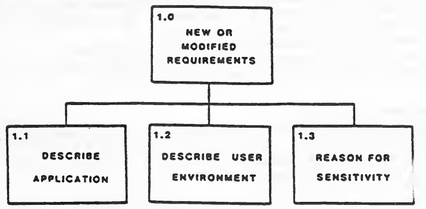
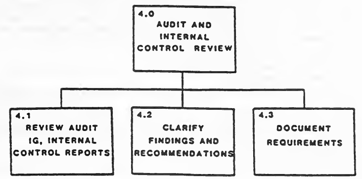
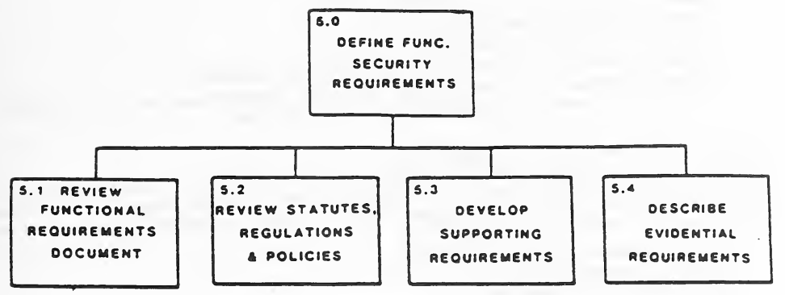
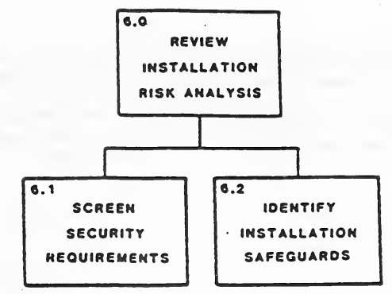
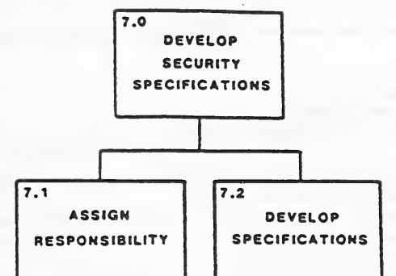
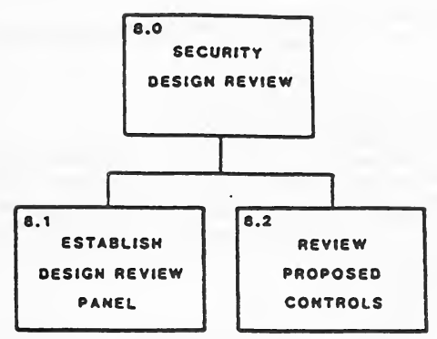
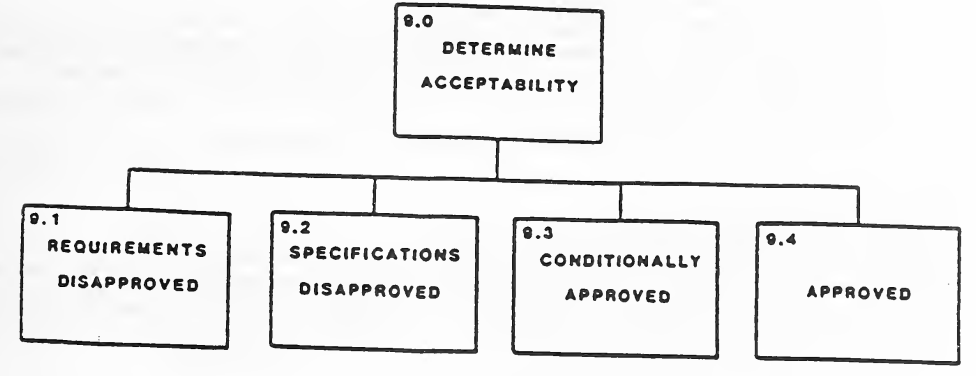
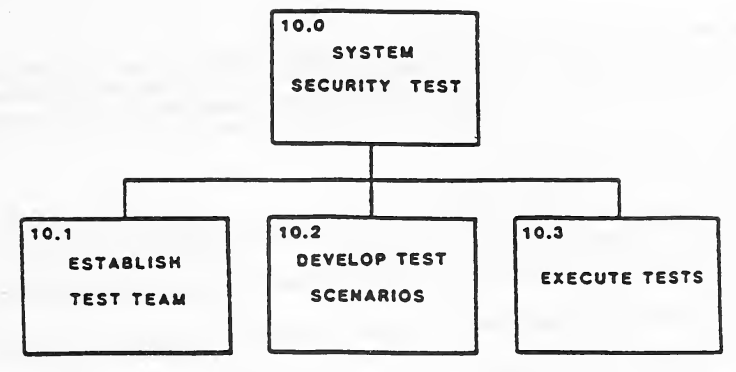
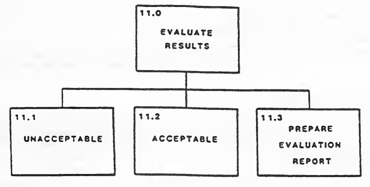
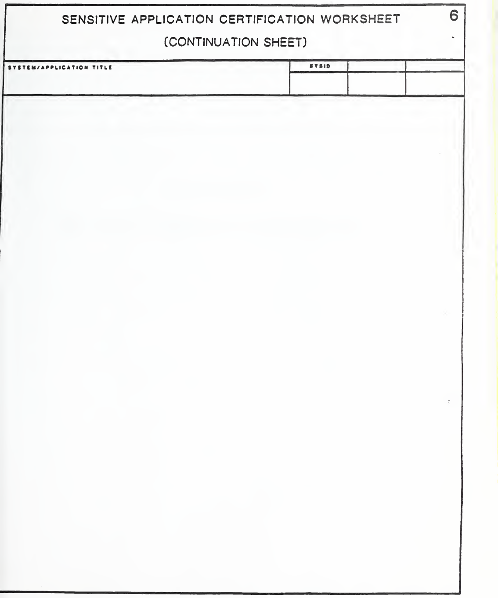

NIST IR 4451 日本語訳
英語タイトル : U.S. Department of Commerce: Methodology for Certifying Sensitive Computer Applications日本語タイトル : 米国商務省：機密性の高いコンピュータアプリケーションを認証するための方法論
公開日 : 1990-11-01
原文URL : https://csrc.nist.gov/pubs/ir/4451/final
原本 PDF : https://doi.org/10.6028/NIST.IR.4451
訳文 : 有志による非公式の日本語訳（AI による翻訳とレビュー）。全 435 段落を翻訳済み（原文取得日 : 2026-10-31）
[要約] NIST IR 4451 は、米国商務省の情報資源管理室が策定した「機密性の高いコンピュータアプリケーションを認証するための方法論」を示す報告書です。方法論の目的は、商務省における標準的な認証方法論を定義して説明することであり、機密性の高いアプリケーションが適用される連邦政府の方針、規則、標準を満たすことを保証するためのものです。文書は、OMB Circular A-130 の付録 III が定めるアプリケーションセキュリティの管理統制プロセスに対応し、セキュリティ仕様の策定、設計レビューとシステムテスト、認証という要素を扱っています。構成は、目的、適用範囲、定義、全般、コンピュータアプリケーションを認証するための方法論、機密性の高いアプリケーションの再認証から成り、添付資料として推奨ワークシートとその記入項目の説明、認証の記述の例、記入済みワークシートの例が収められています。
U.S. DEPARTMENT OF COMMERCE
米国商務省
METHODOLOGY FOR CERTIFYING SENSITIVE COMPUTER APPLICATIONS
機密性の高いコンピュータアプリケーションを認証するための方法論
Edward Roback
NIST Coordinator
Edward Roback
NIST コーディネーター
U.S. DEPARTMENT OF COMMERCE
National Institute of Standards and Technology
Gaithersburg, MD 20899
米国商務省
国立標準技術研究所
Gaithersburg, MD 20899
U.S. DEPARTMENT OF COMMERCE
Robert A. Mosbacher, Secretary
NATIONAL INSTITUTE OF STANDARDS AND TECHNOLOGY
John W. Lyons, Director
米国商務省
Robert A. Mosbacher 長官
国立標準技術研究所
John W. Lyons、所長
U.S. DEPARTMENT OF COMMERCE
米国商務省
METHODOLOGY FOR CERTIFYING SENSITIVE COMPUTER APPLICATIONS
機密性の高いコンピュータアプリケーションを認証するための方法論
Edward Roback
NIST Coordinator
Edward Roback
NIST コーディネーター
U.S. DEPARTMENT OF COMMERCE
National Institute of Standards and Technology
Gaithersburg, MD 20899
米国商務省
国立標準技術研究所
Gaithersburg, MD 20899
November 1990
1990 年 11 月
U.S. DEPARTMENT OF COMMERCE
Robert A. Mosbacher, Secretary
NATIONAL INSTITUTE OF STANDARDS AND TECHNOLOGY
John W. Lyons, Director
米国商務省
Robert A. Mosbacher 長官
国立標準技術研究所
John W. Lyons、所長
FOREWARD
序文
This National Institute of Standards and Technology Interagency Report (NISTIR) presents the Methodology for Certifying Sensitive Computer Applications developed by the U.S. Department of Commerce, Office of Information Resources Management.
この国立標準技術研究所省庁間報告書（NISTIR）は、米国商務省情報資源管理室が策定した機密性の高いコンピュータアプリケーションを認証するための方法論を示すものです。
The National Institute of Standards and Technology (NIST) makes no claim or endorsement of this certification methodology. However, as this material may be of use to other organizations, the report is being reprinted by NIST to make it publicly available and to provide for broad dissemination of this federally sponsored work. This publication is part of a continuing effort to assist federal agencies in accordance with NIST's mandate under the Computer Security Act of 1987.
国立標準技術研究所（NIST）は、この認証方法論を推奨するものでも、その内容を保証するものでもありません。ただし、この資料は他の組織にとっても有用と考えられるため、連邦政府が支援したこの成果を広く公開し普及させる目的で、NIST が報告書を再発行しています。この刊行物は、1987 年コンピュータセキュリティ法に基づく NIST の責務に沿って連邦機関を支援する継続的な取り組みの一環です。
NIST expresses its appreciation to the U.S. Department of Commerce for their kind permission to publish this report.
NIST は、この報告書の刊行を快く許可してくださった米国商務省に感謝します。
Questions regarding this publication should be addressed to the Associate Director for Computer Security, National Computer Systems Laboratory, Building 225, Room B154, National Institute of Standards and Technology, Gaithersburg, MD, 20899.
この刊行物に関するお問い合わせは、国立標準技術研究所（National Institute of Standards and Technology）、国立コンピュータシステム研究所（National Computer Systems Laboratory）、225号館B154室、コンピュータセキュリティ担当副所長宛てにお寄せください。住所はGaithersburg, MD 20899です。
Additional copies of this publication may be purchased through the National Technical Information Service, Springfield, VA, 22161, telephone: (703) 487-4650.
この刊行物の追加部数は、National Technical Information Service, Springfield, VA, 22161（電話: (703) 487-4650）から購入できます。
U.S. DEPARTMENT OF COMMERCE
米国商務省
METHODOLOGY FOR CERTIFYING SENSITIVE COMPUTER APPLICATIONS
機密性の高いコンピュータアプリケーションを認証するための方法論
PREFACE
前書き
Appendix III to OMB Circular No. A-130 establishes a minimum set of controls to be included in Federal automated information systems security programs. It specifies that, at a minimum, the program will include four primary elements: application security, personnel security, information technology installation security, and security awareness and training. This document addresses only one of those primary elements: application security, and more specifically, the management control process as described in the Appendix.
OMB Circular No. A-130の付録IIIは、連邦政府の自動化情報システムのセキュリティプログラムに含める最小限の管理策一式を定めています。同付録は、プログラムに少なくとも、アプリケーションセキュリティ、要員セキュリティ、情報技術施設のセキュリティ、セキュリティ意識向上およびトレーニングという4つの主要要素を含めることを規定しています。この文書が扱うのは、その主要要素のうちの1つであるアプリケーションセキュリティ、より具体的には付録に記述されている管理統制プロセスのみです。
The application security "management control process" includes three main elements: 1) developing security specifications which are intended to assure that appropriate administrative, physical, and technical safeguards are incorporated into (or surround) the application; 2) design reviews and systems tests intended to prove the existence and adequacy of the security safeguards, and; 3) certification that the application meets all applicable Federal policies, regulations, and standards, and that the results of the system tests demonstrate that the installed security safeguards are adequate for the sensitivity of the application. Although not specifically stated in the Appendix, discussions with the OMB revealed that achieving and maintaining accuracy of data is also a security objective to be accommodated.
アプリケーションセキュリティの「管理統制プロセス」には、3つの主要な要素があります。1) 適切な管理的・物理的・技術的保護対策がアプリケーションに組み込まれる（またはアプリケーションを取り囲む）ことを保証するためのセキュリティ仕様の策定、2) セキュリティ保護対策の存在と十分性を証明するための設計レビューおよびシステムテスト、3) アプリケーションが適用されるすべての連邦政府の方針、規則、標準を満たしていること、ならびにシステムテストの結果が、導入されたセキュリティ保護対策がアプリケーションの機微性に対して十分であることを実証していることを認証することです。付録に明記されてはいませんが、OMBとの協議により、データの正確性を達成し維持することも、対応すべきセキュリティ目標であることが明らかになりました。
The management control process elements are application-specific. Although some of the security safeguards may be common to other applications, the determination of security requirements, and the subsequent system tests will be different for each application. This means that there are no real short-cuts to achieve certification, such as checklists or similar approaches. Such approaches, although invitingly simple and inexpensive to administer, cannot achieve the individuality required for each application. Rather, they may lead the user to over-protect, under-protect, or completely over-look vulnerabilities of the application.
管理統制プロセスの要素は、アプリケーションごとに固有です。セキュリティ保護対策の一部は他のアプリケーションと共通する場合もありますが、セキュリティ要件の決定とそれに続くシステムテストは、アプリケーションごとに異なります。つまり、チェックリストやそれに類する手法のように、認証を達成するための真の近道はありません。こうした手法は、一見すると簡単で運用費用も安く済みますが、各アプリケーションに必要な個別性を実現することはできません。むしろ、利用者が過剰に保護したり、保護が不足したり、アプリケーションの脆弱性を完全に見落としたりする原因になりかねません。
This document prescribes a methodology which, if applied diligently, addresses the individual security needs of each application and assures full compliance with OMB application security requirements. Further, it enables the certifying official to have reasonable confidence in the fact that appropriate security measures are in place and are adequate for the sensitivity of the application being certified.
この文書は、入念に適用すれば各アプリケーションに固有のセキュリティ上の必要性に対応し、OMB のアプリケーションセキュリティ要件への完全な準拠を保証する方法論を規定します。さらに、この方法論により、認証官は、適切なセキュリティ対策が講じられており、認証対象のアプリケーションの機微性に対して十分であることに、合理的な確信を持つことができます。
Finally, it should be noted that this methodology does not describe the specific security criteria for each application. These must be developed on an application-by-application basis and will determine the scope and complexity of each certification project. For example, a relatively minor PC-based application may require nothing more than backup and security for the "floppy" disks or the PC. The documentation for such an application could denote the reason for and degree of sensitivity, security requirements, safeguard provided (i.e. formal procedures), and satisfaction that the procedures are being followed ("systems test"). Obviously, highly sensitive and complex applications will represent the other extreme, requiring more documented controls and safeguards which must be installed and tested to the satisfaction of the certifying official. The important point is that the methodology should be followed, if only mentally, to ensure that each step is consciously considered and that the rationale for the actions taken or not taken will satisfy the certifying official, whoever that may be.
最後に、この方法論は各アプリケーションの具体的なセキュリティ基準を記述するものではないことに注意すべきです。これらの基準はアプリケーションごとに策定しなければならず、各認証プロジェクトの範囲と複雑さを決定します。たとえば、比較的小規模なPCベースのアプリケーションでは、「フロッピー」ディスクまたはPCのバックアップとセキュリティだけで足りる場合があります。そのようなアプリケーションの文書には、機微性の理由と程度、セキュリティ要件、講じた保護対策（すなわち正式な手順）、および手順が守られていることの確認（「システムテスト」）を記載することができます。当然ながら、機微性が高く複雑なアプリケーションはその対極にあり、より多くの文書化された管理策と保護対策が必要となります。それらは導入され、認証官が納得するまでテストされなければなりません。重要なのは、各ステップを意識的に検討し、実施した、または実施しなかった措置の根拠が認証官（それが誰であっても）を納得させるものとなるよう、たとえ頭の中だけであっても、この方法論に従うべきだという点です。
TABLE OF CONTENTS
目次
FIGURES
図
IV-1 Standard Worksheets
IV-1 標準ワークシート
V-1 Overview of Sensitive Application Certification
V-1 機密性の高いアプリケーションの認証の概要
VI-1 Overview of Sensitive Application Recertification
VI-1 機密性の高いアプリケーションの再認証の概要
ATTACHMENTS
添付資料
A Description of Sample Worksheets
A. サンプルワークシートの説明
B Examples of Certification/Recertification Statements
B. 認証・再認証の記述の例
C Examples of Certification Documentation
C. 認証文書の例
I. PURPOSE
I. 目的
To define and describe a standard certification methodology for the Department of Commerce: (a) to ensure that sensitive applications meet applicable Federal policies, regulations, and standards, and (b) to demonstrate that the installed security safeguards are adequate for the sensitivity or criticality of the data processed, as required by OMB Circular A-130.
商務省における標準的な認証方法論を定義し、説明することです。これは、(a) 機密性の高いアプリケーションが、適用される連邦政府の方針・規則・標準を満たすことを保証し、(b) OMB Circular A-130 が求めるとおり、導入されたセキュリティ保護対策が、処理されるデータの機微性または重要性に対して十分であることを示すためのものです。
II. SCOPE
II. 適用範囲
Certification is required for all computer applications within the Department which are determined to be sensitive within the context of OMB Circular A-130. The management control process leading to certification, as prescribed in the circular, will be incorporated early in the developmental process of new applications or when substantial changes are to be made to existing applications. The circular also requires recertification of existing applications at least every three years. This recertification requirement implicitly directs an initial certification for each sensitive application.
OMB Circular A-130 の文脈で機微性が高いと判断された、省内のすべてのコンピュータアプリケーションに、認証が必要です。同通達に規定された、認証に至る管理統制プロセスは、新規アプリケーションの開発の初期段階、または既存アプリケーションに大幅な変更を加える際に組み込まれます。同通達はまた、既存のアプリケーションを少なくとも 3 年ごとに再認証することも求めています。この再認証の要件は、機微性の高い各アプリケーションに対する最初の認証を暗黙のうちに指示するものです。
III. DEFINITIONS
III. 定義
For the purposes of this methodology, the following definitions will apply:
この方法論では、次の定義を適用します。
Certification: A process culminating in a statement signed by a Department of Commerce [illegible] official certifying that the application satisfies all appropriate Federal policies, regulations, and standards, and that the results of tests demonstrate that the installed security safeguards are adequate for the sensitivity of the data handled by the application.
認証（Certification）: 商務省の[判読不能]職員が署名する、アプリケーションが適用される連邦政府の方針・規則・標準をすべて満たしていること、およびテスト結果が、導入されたセキュリティ保護対策がアプリケーションの扱うデータの機微性に対して十分であることを示していることを証明する記述に帰結するプロセスです。
Certifying Official: A senior DOC official, such as the Senior Official for Information Resources Management, who has the authority to accept or reject the security safeguards of an application and issue the certificate recording the decision. The official must possess the authority to direct that security deficiencies be remedied, and to allocate appropriate resources to achieve acceptable security.
認証官（Certifying Official）: 情報資源管理担当上級職員などの商務省の上級職員で、アプリケーションのセキュリティ保護対策を受け入れるか却下するかを決定し、その決定を記録する認証書を発行する権限を持つ者です。この職員は、セキュリティ上の欠陥の是正を指示し、許容できるセキュリティを達成するために適切な資源を割り当てる権限を有していなければなりません。
Critical Application: A computerized application which may or may not be sensitive as defined by statute, regulation, or Departmental policy, but which is essential to the successful performance of a major Departmental mission. These critical applications are considered to be sensitive within the scope of OMB Circular A-130 because of the risk and magnitude of loss or harm that could result from improper manipulation or the inability to process.
重要アプリケーション（Critical Application）: 法令・規則・省の方針で定義される機微性を持つ場合も持たない場合もありますが、省の主要な任務の遂行の成否に不可欠なコンピュータ化されたアプリケーションです。こうした重要アプリケーションは、不適切な操作や処理不能から生じうる損失または損害のリスクと規模のために、OMB Circular A-130 の範囲では機微性が高いものとみなされます。
Evidential Requirement: The specific responses or reactions which must be evidenced by a security feature to prove that the feature is present, performs as specified, and satisfies the intended functional security requirement(s) stated by the user. Also used herein as "Required Evidence of Adequacy".
証拠要件（Evidential Requirement）: セキュリティ機能が、その機能が存在し、規定どおりに動作し、利用者が述べた意図された機能的セキュリティ要件を満たしていることを証明するために、示さなければならない具体的な応答または反応です。この文書では「十分性の必要証拠（Required Evidence of Adequacy）」としても使われます。
Functional Security Requirement: A Security-related requirement expressed by the user(s) in their own terms, indicating specific restrictions, authorizations, edits, privileges, accesses, reasonableness tests, ranges, processes, results, and other requirements necessary to assure adequate security, accuracy, and availability of the application and its data. These requirements, although stated in functional terms, must be specific and measurable to the extent that they can be translated into technical, procedural, or administrative controls or safeguards.
機能的セキュリティ要件（Functional Security Requirement）: 利用者が自らの言葉で表現するセキュリティ関連の要件で、アプリケーションとそのデータの適切なセキュリティ、正確性、可用性を保証するために必要な、具体的な制限、認可、編集、権限、アクセス、妥当性テスト、範囲、プロセス、結果などの要件を示すものです。これらの要件は、機能の観点で記述されていても、技術的、手続的、または管理的な管理策や保護対策に変換できる程度に、具体的かつ測定可能でなければなりません。
Information Technology Facility: An organizationally defined set of personnel, hardware, software, and physical facilities, a primary function of which is the operation of information technology.
情報技術施設（Information Technology Facility）: 組織的に定義された、要員、ハードウェア、ソフトウェア、物理的施設の集合で、その主たる機能の 1 つが情報技術の運用であるものです。
Security Features: The systemic controls or safeguards which can be in almost any form including manual or automated, physical or logical, procedural, or otherwise, and which are specifically designed or prepared and implemented to provide the degree of protection specified by one or more functional security requirement. A security feature may be implemented in the application, the facility, communications, user areas, or any other appropriate location.
セキュリティ機能（Security Features）: 手作業か自動か、物理的か論理的か、手続的かそれ以外かを問わず、ほぼあらゆる形態をとりうる、システム全体にわたる管理策または保護対策で、1 つ以上の機能的セキュリティ要件で規定された保護の程度を提供するために、特別に設計または準備され、実装されたものです。セキュリティ機能は、アプリケーション、施設、通信、利用者の領域、その他の適切な場所に実装される場合があります。
Security Feature Specifications: A detailed description of each security feature required to protect a sensitive application. The specifications should include: (a) a description of the safegards necessary to ensure the protection, accuracy and integrity of the sensitive application and associated data, (b) how they will function and what they will do, (c) how and where they will be implemented, and (d) how they will satisfy one or more of the functional security requirements.
セキュリティ機能仕様（Security Feature Specifications）: 機微性の高いアプリケーションを保護するために必要な各セキュリティ機能の詳細な記述です。仕様には、(a) 機微性の高いアプリケーションと関連データの保護、正確性、完全性を保証するために必要な保護対策の説明、(b) それらがどのように機能し、何を行うか、(c) どのように、どこに実装されるか、(d) 1 つ以上の機能的セキュリティ要件をどのように満たすか、を含めるべきです。
Sensitive Application: An application of information technology requiring protection because it processes sensitive data, or because of the risk and magnitude of loss or harm that could result from its loss, or improper, access, operation, or manipulation of the application and its data, whether intentional or unintentional.
機微性の高いアプリケーション（Sensitive Application）: 機微性の高いデータを処理するため、またはアプリケーションとそのデータの喪失、不適切なアクセス、操作から、意図的か否かを問わず生じうる損失または損害のリスクと規模のために、保護を必要とする情報技術のアプリケーションです。
System: The organized collection, processing, transmission, and dissemination of information in accordance with defined automated and/or manual procedures, and including the environment and resources required for its successful operation. Any use of the word "system" within this document will be within the totality of this definition.
システム（System）: 定義された自動化および／または手作業の手順に従って行われる、情報の組織的な収集・処理・伝送・配布であり、その運用を成功させるために必要な環境と資源を含みます。この文書における「システム」という語は、すべてこの定義全体を指します。
Test Scenario(s): A detailed series of actions, manual and/or automated, which are designed to prove or disprove (produce the evidential requirements) that the security features being examined in this scenario are performing as intended and required, and are providing the degree of protection appropriate to the sensitivity of the application.
テストシナリオ（Test Scenario(s)）: 手作業および／または自動化された一連の詳細な動作で、そのシナリオで検査されるセキュリティ機能が、意図され要求されたとおりに動作し、アプリケーションの機微性に見合った程度の保護を提供していることを、証明または反証する（証拠要件を生み出す）ように設計されたものです。
User(s): An organizational or programmatic entity that receives service from an information technology facility. A user may be either internal or external to the DOC organization responsible for the facility, but normally does not report either to the manager or director of the facility or to the same immediate supervisor.
利用者（User(s)）: 情報技術施設からサービスを受ける、組織またはプログラム上の主体です。利用者は、その施設を担当する商務省の組織の内部にも外部にもなりえますが、通常は、施設の管理者や長にも、同じ直属の上司にも報告を行いません。
IV. GENERAL
IV. 全般
Under ideal circumstances, security requirements should be specified prior to the beginning of application development so that they can be incorporated into the developmental process along with other functional processing requirements. Such an approach not only provides better assurance of security but does so with less problems and costs than a later retrofit of security features. This methodology will not attempt to describe the developmental process, of which there are many variations, but will address security related aspects which can be, and should be incorporated into any developmental methodology.
理想的な状況では、セキュリティ要件は、他の機能的な処理要件とともに開発プロセスに組み込めるよう、アプリケーションの開発開始前に規定すべきです。このアプローチは、セキュリティの保証を高めるだけでなく、後からセキュリティ機能を追加する場合よりも、問題や費用を少なくします。この方法論では、多様な開発プロセスそのものを記述しようとはしませんが、あらゆる開発方法論に組み込むことができ、組み込むべきセキュリティ関連の側面を扱います。
There are many variations of sensitive applications with no two being exactly alike. A certification methodology must be adaptable to these variations. Accordingly, this methodology should be used as a guide, and is not intended to replace professional judgement and intimate knowledge of the operating environment, function supported, or application.
機微性の高いアプリケーションにはさまざまな種類があり、まったく同じものは 2 つとありません。認証の方法論は、こうした違いに適応できなければなりません。したがって、この方法論は指針として使用すべきであり、専門家としての判断や、運用環境、支援される機能、アプリケーションについての詳しい知識に代わるものではありません。
(NOTE: If a risk analysis has not been performed at the installation, the cost to secure each sensitive application will probably be substantially higher. Because of this, it is highly recommended that an installation risk analysis be performed prior to the start of application certification).
（注: 設置場所でリスク分析が実施されていない場合、機微性の高い各アプリケーションを保護するための費用は、おそらく大幅に高くなります。このため、アプリケーションの認証を開始する前に、設置場所のリスク分析を実施すべきです。）
A. Certification Concept
A. 認証の概念
1.Identify sensitive applications. Application sensitivity must be determined by the users in view of their knowledge of the sensitivity and criticality of the application. If there are more than one sensitive application within a user element, that element should arrange their applications in order of their sensitivity or importance to the user. If more than one user is involved, all of the sensitive applications must be merged and arranged in a single order of priority for certification. The assignment of priorities must be made at a sufficiently high level of management where objectivity can be assured and the priorities of DOC will prevail over those of individual users. Finally, a cut-off level must be established, above which all applications must be certified while those below the level may be considered as acceptable risks and therefore non sensitive. The certification or recertification of sensitive applications should then start with the highest priorities.
1.機微性の高いアプリケーションを特定します。アプリケーションの機微性は、そのアプリケーションの機微性と重要性についての知識を持つ利用者が判断しなければなりません。1 つの利用者部門の中に機微性の高いアプリケーションが複数ある場合、その部門は、機微性または利用者にとっての重要度の順にアプリケーションを並べるべきです。複数の利用者が関与する場合は、機微性の高いすべてのアプリケーションを統合し、認証の優先順位を 1 つにまとめて並べなければなりません。優先順位の割り当ては、客観性を確保でき、商務省の優先事項が個々の利用者の優先事項より優先するような、十分に高い管理階層で行わなければなりません。最後に、境界となる水準を設定しなければなりません。その水準を超えるすべてのアプリケーションは認証を受けなければならず、その水準以下のものは許容できるリスクとみなしてもよく、したがって機微性が高くないものとみなしてもよいです。機微性の高いアプリケーションの認証または再認証は、最も優先順位の高いものから始めるべきです。
2.Determine security needs. The data owner or users must articulate the security requirements for the application if this has not already been done. These requirements, although stated in functional terms, must be specific and measurable to the extent that they can be translated by others into technical, procedural, or administrative controls or safeguards. In addition to the security requirements specified by statute, regulations or policy, other external inputs such as IG and audit reports must be considered.
2.セキュリティ上の必要性を判断します。データの所有者または利用者は、アプリケーションのセキュリティ要件がまだ明確になっていない場合、それを明確に述べなければなりません。これらの要件は、機能の観点で記述されていても、他の者が技術的、手続的、または管理的な管理策や保護対策に変換できる程度に、具体的かつ測定可能でなければなりません。法令・規則・方針で規定されたセキュリティ要件に加えて、IG（監察官）の報告書や監査報告書などの、その他の外部からの入力も考慮しなければなりません。
3.Design, review and approve safeguards. Security safeguards can embody many forms such as the formulation of additional or revised policies and procedures, physical measures, computer software, comprehensive edit checks, access control system, or a myriad of other possibilities. Appropriate and cost-effective safeguards must be devised to satisfy each of the approved functional security requirements. The responsible person or organization designated to design and prepare the specifications for the safeguard or control will depend upon its nature, the type of skills required, and where it is to be employed. After all have been designed, they must be evaluated by a panel of experts to assess their individual and collective capability to provide the degree of protection appropriate for the sensitive application.
3.保護対策を設計し、レビューし、承認します。セキュリティ保護対策には、方針や手順の追加または改訂、物理的な措置、コンピュータソフトウェア、包括的な妥当性チェック、アクセス制御システムなど、さまざまな形態があります。承認された機能的セキュリティ要件のそれぞれを満たすために、適切で費用対効果の高い保護対策を考案しなければなりません。保護対策または管理策の仕様を設計し作成する責任者または責任組織は、その性質、必要とされる技能、使用される場所によって決まります。すべてを設計した後は、専門家のパネルによって、機微性の高いアプリケーションに見合った程度の保護を提供する個々の能力および全体としての能力を評価しなければなりません。
4.Test safeguards. After approval, preparation, and installation, safeguards must be tested to ensure that they are in place and are operationally adequate. Specific test scenarios must be designed and executed, and the results analyzed to ensure that the adequacy of each feature has been proven. Features producing unsatisfactory results must be revised and retested, or the user management must opt to accept the risk of not having the feature. Following this, an evaluation report will be prepared for the certifing official.
4.保護対策をテストします。承認、準備、導入の後、保護対策が実際に整っており、運用上十分であることを確認するために、テストしなければなりません。具体的なテストシナリオを設計して実行し、各機能の十分性が実証されたことを確認するために結果を分析しなければなりません。結果が不満足な機能は、修正して再テストするか、利用者側の管理者がその機能を持たないリスクを受け入れることを選択しなければなりません。その後、認証官向けの評価報告書を作成します。
5.Certify the application. The Certifying Official will review the security evaluation report to determine if the tests demonstrate that the installed security safeguards are adequate for the sensitivity of the data handled by the application. The Certifying Official may unconditionally certify the application; certify with conditions or restrictions; or withhold certification until certain changes or corrections are made.
5.アプリケーションを認証します。認証官は、導入されたセキュリティ保護対策がアプリケーションの扱うデータの機微性に対して十分であることをテストが示しているかどうかを判断するために、セキュリティ評価報告書をレビューします。認証官は、アプリケーションを無条件で認証してもよいですし、条件または制限を付けて認証してもよいですし、特定の変更や是正が行われるまで認証を保留してもよいです。
B. Documentation
B. 文書化
1.The decision of the Certifying Official will be primarily based upon an evaluation report summarizing the detailed documents developed during the evaluation and certifying process. OMB Circular A-130 requires this full documentation and directs that it be maintained in the official DOC agency records since they will have a continuing value to the organization. They will be particularly valuable to the ADP security staff, auditors and inspectors general, to serve as the starting point for subsequent recertification of the application, and as input to the periodic facility risk analysis.
1.認証官の決定は、主として、評価および認証のプロセスで作成された詳細な文書を要約した評価報告書に基づいて行われます。OMB Circular A-130 は、この完全な文書化を求め、それらが組織にとって継続的な価値を持つことから、商務省の公式記録として保存することを指示しています。これらの文書は、ADP のセキュリティ担当者、監査人、監察官にとって特に価値があり、アプリケーションのその後の再認証の出発点として、また定期的な施設のリスク分析への入力として役立ちます。
2.Since each application to be certified will present different situations and problems, it is most important that these be documented in a standard manner which will stand the test of time and changing personnel. This methodology includes suggested formats for worksheets to be used to document the evaluation and certification process. The use of these worksheets in not mandatory. Examples of these worksheets and instructions for their use are contained at Attachment A. This attachment also describes the entries required on each worksheet. Attachment C contains an example of the worksheets completed for a fictitious sensitive application.
2.認証を受ける各アプリケーションは異なる状況や問題を示すため、それらを、時間の経過や要員の交代にも耐えうる標準的な方法で文書化することが最も重要です。この方法論には、評価および認証のプロセスを文書化するために使うワークシートの推奨書式が含まれています。これらのワークシートの使用は必須ではありません。ワークシートの例と使用方法は添付資料 A にあります。この添付資料には、各ワークシートに必要な記入事項も記載されています。添付資料 C には、架空の機微性の高いアプリケーションについて記入を済ませたワークシートの例があります。
3.Figure IV-1 shows the relationship of these worksheets. Detailed instructions for their use to certify or recertify applications are contained in Sections V and VI, respectively. The worksheets are intended to be used as follows:
3.図 IV-1 は、これらのワークシートの関係を示しています。アプリケーションの認証または再認証にワークシートを使用するための詳細な手順は、それぞれ第 V 節と第 VI 節にあります。ワークシートは次のように使用することを意図しています。
•a. Worksheet 1, Application Description, is intended to generally describe the application and the reasons why it is considered to be sensitive. One will be prepared for each potentially sensitive application to be evaluated.
•a. ワークシート 1「アプリケーションの説明（Application Description）」は、アプリケーションと、それが機微性が高いとみなされる理由を一般的に説明するためのものです。評価対象となる、機微性が高い可能性のあるアプリケーションごとに 1 枚作成します。
•b. Worksheet 2, Functional Security Requirement, is used to describe each security-related requirement needed to provide an acceptable level of protection for the application. Unless requirements are very closely related, each will be described on a separate Worksheet 2.
•b. ワークシート 2「機能的セキュリティ要件（Functional Security Requirement）」は、アプリケーションに許容できる水準の保護を提供するために必要な、セキュリティ関連の各要件を記述するために使います。要件どうしが非常に密接に関連している場合を除き、各要件を別々のワークシート 2 に記述します。
•c. For each security requirement (Worksheet 2), there will be a corresponding Worksheet 3, Security Feature Specifications. This is used to describe the proposed security control or safeguard, including detailed specifications if appropriate.
•c. 各セキュリティ要件（ワークシート 2）に対応して、ワークシート 3「セキュリティ機能仕様（Security Feature Specifications）」が 1 枚ずつ作成されます。これは、提案するセキュリティ管理策または保護対策を、必要に応じて詳細な仕様も含めて記述するために使います。
Figure IV-1: STANDARD WORKSHEETS
図 IV-1: 標準ワークシート
![Diagram of five overlapping worksheet forms, each headed 'SENSITIVE APPLICATION CERTIFICATION WORKSHEET' and numbered in the top right corner: 1 (APPLICATION DESCRIPTION) in front, behind it 2 (FUNCTIONAL SECURITY REQUIREMENT), 3 (SECURITY FEATURE SPECIFICATIONS), 4 (SECURITY TESTS) and 5 (EVALUATION). A curved brace beside worksheets 2 to 5 is labeled 'Each Functional Security Requirement'. Worksheet 1 shows small field labels [illegible] in rows at the top and labeled lines at the bottom, and in its body the notes: 'NOTES / WORKSHEET 1: One for each application. / WORKSHEET 2 thru 5: One set for each security requirement. / WORKSHEET 6: Continuation Sheet. Use as needed.'](assets/ir-4451/p0017-figure-01.png)
5 枚の様式が重なった図です。各様式の見出しは「SENSITIVE APPLICATION CERTIFICATION WORKSHEET」で、右上に番号があります。手前から 1（APPLICATION DESCRIPTION）、その後ろに 2（FUNCTIONAL SECURITY REQUIREMENT）、3（SECURITY FEATURE SPECIFICATIONS）、4（SECURITY TESTS）、5（EVALUATION）が並び、2〜5 の横に「Each Functional Security Requirement」と書いた曲線の括弧があります。様式 1 の上部には小さな欄名の行が並び（判読不能）、下部にはラベル付きの行があります。本文に注記「NOTES / WORKSHEET 1: One for each application. / WORKSHEET 2 thru 5: One set for each security requirement. / WORKSHEET 6: Continuation Sheet. Use as needed.」があります。
•d. For each Security Feature Specifications (Worksheet 3), there will be one or more planned security tests designed to prove the presence and effectiveness of the security feature. These tests will be documented on Worksheet 4, Security Tests. When the tests are executed, the results of these tests will also be recorded on Worksheet 4.
•d. 各セキュリティ機能仕様（ワークシート 3）に対応して、セキュリティ機能の存在と有効性を実証するために設計された、計画済みのセキュリティテストが 1 つ以上あります。これらのテストはワークシート 4「セキュリティテスト（Security Tests）」に文書化します。テストを実行したときは、その結果もワークシート 4 に記録します。
•e. For each security test documented on Worksheet 4, there will be a corresponding analysis and evaluation of the results of each test, with appropriate recommendations, to be summarized on Worksheet 5.
•e. ワークシート 4 に文書化した各セキュリティテストに対応して、各テストの結果の分析と評価が適切な勧告とともに行われ、ワークシート 5 に要約されます。
•f. Worksheet 6 is a continuation sheet which may be used to extend any portion of the other Worksheets.
•f. ワークシート 6 は継続用のシートで、他のワークシートのどの部分を拡張する場合にも使用してもよいです。
C. Project Staffing
C. プロジェクトの要員配置
1.In a certification or recertification project only three staffing requirements are certain—the certifying official, an application certification manager, and one or more application users. There will be a need for others, but the specific skills and numbers required will vary widely from application to application, and from time to time during the project. The Application Certification Manager will be the person to make these decisions and to arrange for, and receive, assistance when needed. Whether from a user organization or from a technical support organization (e.g. ADP), the Application Certification Manager must be given authority commensurate with the responsibilities which have been assigned. Without this clearly defined authority, the project should not be undertaken since it will surely fail. (As used here, Application Certification is synonymous with Application Recertification). The Application Certification Manager should be charged with:
1.認証または再認証のプロジェクトで確実に必要な要員は、認証官、アプリケーション認証マネージャー、および 1 人以上のアプリケーション利用者の 3 つだけです。それ以外の要員も必要になりますが、必要な技能と人数は、アプリケーションごとに、またプロジェクトの時期によっても大きく異なります。アプリケーション認証マネージャーは、これらの判断を行い、必要に応じて支援を手配し、受ける者です。アプリケーション認証マネージャーは、利用者組織の出身であれ、技術支援組織（例: ADP）の出身であれ、割り当てられた責任に見合う権限を与えられなければなりません。この権限が明確に定義されていない場合、プロジェクトは確実に失敗するため、着手すべきではありません。（ここで使われるアプリケーション認証は、アプリケーション再認証と同義です。）アプリケーション認証マネージャーには、次の任務を課すべきです。
•a. Initiating the project.
•a. プロジェクトを開始すること。
•b. Arranging for internal and external security evaluation support resources, scheduling their participation to coincide with the needs of the project.
•b. 内部および外部のセキュリティ評価支援資源を手配し、プロジェクトの必要に合わせてそれらの参加日程を調整すること。
•c. Managing the security evaluation to completion.
•c. セキュリティ評価を完了まで管理すること。
•d. Preparing the security evaluation report(s), with assistance, if needed.
•d. 必要な場合は支援を受けて、セキュリティ評価報告書を作成すること。
•e. Providing periodic status reports to management.
•e. 経営陣に定期的な状況報告を行うこと。
2.Other skills which may be required at various times include auditors, inspectors general, users, industrial security staff, various data processing skills, facilities engineer, communications, and others. The Application Certification Manager must determine the skills and numbers needed, and when they will be required based upon the nature of the application to be evaluated and certified and the progress of the project.
2.そのほか、時期によって必要になる可能性のある技能には、監査人、監察官、利用者、産業セキュリティ担当者、各種のデータ処理技能、施設エンジニア、通信などがあります。アプリケーション認証マネージャーは、評価および認証の対象となるアプリケーションの性質とプロジェクトの進捗に基づいて、必要な技能と人数、およびそれらが必要になる時期を判断しなければなりません。
V. METHODOLOGY FOR CERTIFYING COMPUTER APPLICATIONS
V. コンピュータアプリケーションを認証するための方法論
Figure V-1 is a graphic representation of the process leading to certification of a computerized application. Each block in the figure will be described in sufficient detail to allow the reader to understand the process and to adapt it to any application. The number above each block corresponds to the following paragraph number. When needed to describe particularly lengthy or complex tasks, sub-tasks will be described and similarly identified in the text. Worksheets specifically designed to document the security evaluation and certification process are included in Attachment A and will be referenced throughout the text. This attachment also contains more detailed instructions about the information to be included on the worksheets. Attachment C contains an example of the documentation produced during certification of a fictitious sensitive application.
図 V-1 は、コンピュータ化されたアプリケーションの認証に至るプロセスを図示したものです。図の各ブロックは、読者がプロセスを理解し、任意のアプリケーションに適応できるように、十分詳しく説明します。各ブロックの上の番号は、以下の段落番号に対応しています。特に長いタスクや複雑なタスクを説明する必要がある場合は、サブタスクを本文中で同様に識別して説明します。セキュリティ評価および認証のプロセスを文書化するために特別に設計されたワークシートは、添付資料 A に収録されており、本文全体で参照されます。この添付資料には、ワークシートに記載する情報についてのより詳しい手順も含まれています。添付資料 C には、架空の機微性の高いアプリケーションの認証中に作成された文書の例があります。
The size and complexity of the security evaluation leading to certification will depend upon the numbers and types of functional security requirements defined by the users, auditors, or inspectors general. If few, relatively simple requirements are specified, it may be possible that the total project may be quickly completed by one person. In this case, it may not be necessary to complete all of the tasks listed in the detail specified. However, a decision to omit one or more of the tasks should be made only after carefully considering whether or not it is pertinent to the requirement. Obviously, a larger, more complex application with many security needs will require more time and other resources.
認証に至るセキュリティ評価の規模と複雑さは、利用者、監査人、または監察官が定義する機能的セキュリティ要件の数と種類によって決まります。規定された要件が少なく、比較的単純であれば、プロジェクト全体を 1 人で短期間に完了できる場合もあります。この場合、規定された詳細度で列挙されたすべてのタスクを完了する必要はないかもしれません。ただし、1 つ以上のタスクを省略する決定は、そのタスクが要件に関係するかどうかを慎重に検討した後でのみ行うべきです。当然ながら、セキュリティ上の必要性が多い、より大規模で複雑なアプリケーションには、より多くの時間とその他の資源が必要になります。
The methodology describes an approach geared to a new or substantially modified application. It is equally applicable to existing applications. In the latter case, one objective is to establish the documentation base-line which can be evaluated by the certifying official and, if acceptable, used as the basis for certifying the application. The existing security requirements should be reviewed to see if they have changed; existing safeguards must be documented and assessed for adequacy and finally, the safeguards must be tested to assure that they are performing as intended and to the satisfaction of the certifying official. These documents will then serve as the starting point for a subsequent re-certification.
この方法論は、新規のアプリケーション、または大幅に変更されたアプリケーションを対象とした手法を記述しています。既存のアプリケーションにも同じように適用できます。後者の場合、目的の 1 つは、認証官が評価でき、許容できるものであれば、アプリケーションを認証する根拠として使える文書のベースラインを確立することです。既存のセキュリティ要件は、変更されていないかを確認するためにレビューすべきです。既存の保護対策は、文書化し、十分性を評価しなければなりません。最後に、保護対策が意図どおりに動作し、認証官を満足させることを確認するため、テストしなければなりません。これらの文書は、その後の再認証の出発点となります。
Re-certification requires the execution of each step of the methodology to validate the earlier requirements, safeguards and findings, or to determine if requirements have changed. A major difference between certification and recertification is the existence of the documentation base-line which was de[illegible]ed during the initial certification or subsequent re-certification projects. These existing documents [illegible] be carefully evaluated at each step of the process. Changes, additions or deletions to the documents should be made to ensure that they truly reflect the present state of the application and its security-related capabilities or surroundings. It is possible that some steps may be omitted or abbreviated, but this should be done only after careful consideration of the intent of each step and ensuring that the supporting rationale will satisfy the certifying official.
再認証では、以前の要件、保護対策、所見を検証するため、または要件が変更されたかどうかを判断するために、方法論の各ステップを実行する必要があります。認証と再認証の大きな違いは、最初の認証または後続の再認証プロジェクトで[判読不能]された文書のベースラインが存在することです。これらの既存の文書は、プロセスの各ステップで慎重に評価[判読不能]。文書がアプリケーションの現在の状態と、そのセキュリティ関連の能力や周辺環境を正確に反映するよう、文書の変更、追加、削除をすべきです。一部のステップを省略または簡略化できる場合もありますが、それは各ステップの意図を慎重に検討し、裏付けとなる根拠が認証官を納得させることを確認した後でのみ行うべきです。
![Flowchart titled 'SENSITIVE APPLICATION CERTIFICATION (NEW OR MODIFIED REQUIREMENT) (OMB Circular A-130)'. 1 NEW OR MODIFIED REQUIREMENT leads to decision 2 SENSITIVE?; NO leads to 3 CERTIFICATION NOT REQUIRED; YES leads to 5 DEFINE FUNCTIONAL SECURITY REQUIREMENTS, then 7 DEVELOP SYSTEM SECURITY SPECIFICATIONS, 8 REVIEW SYSTEM SECURITY FEATURES DESIGN, decision 9 ACCEPTABLE?; YES leads to 10 TEST SYSTEM SECURITY FEATURES, then decision 11 ACCEPTABLE?; YES leads to 12 CERTIFY APPLICATION, which outputs to 13 INPUT TO AGENCY VULNER. ASSESS. and leads to 14 IMPLEMENT AND OPERATE APPLICATION. NO from 9 and 11 returns to step 7. External inputs are marked * (legend: '* EXTERNAL INPUTS'): 4 AUDITS AND INTERNAL CONTROL REVIEWS feeds step 5 and receives a line from step 14; 6 INSTALL. RISK ANALYSIS feeds step 7.](assets/ir-4451/p0023-figure-01.png)
「SENSITIVE APPLICATION CERTIFICATION (NEW OR MODIFIED REQUIREMENT) (OMB Circular A-130)」と題した流れ図です。1 NEW OR MODIFIED REQUIREMENT から判断 2 SENSITIVE? に進み、NO なら 3 CERTIFICATION NOT REQUIRED、YES なら 5 DEFINE FUNCTIONAL SECURITY REQUIREMENTS、7 DEVELOP SYSTEM SECURITY SPECIFICATIONS、8 REVIEW SYSTEM SECURITY FEATURES DESIGN、判断 9 ACCEPTABLE? と進みます。YES なら 10 TEST SYSTEM SECURITY FEATURES、判断 11 ACCEPTABLE? に進み、YES なら 12 CERTIFY APPLICATION に進みます。12 からは 13 INPUT TO AGENCY VULNER. ASSESS. への出力と 14 IMPLEMENT AND OPERATE APPLICATION への流れがあります。9 と 11 の NO は 7 に戻ります。外部入力は * 印で示されます（凡例「* EXTERNAL INPUTS」）。外部入力として、4 AUDITS AND INTERNAL CONTROL REVIEWS が 5 に入り（14 からの線も 4 に戻ります）、6 INSTALL. RISK ANALYSIS が 7 に入ります。
Figure V-1
図 V-1
1.0 New or Modified Requirement
1.0 新規または変更された要件

階層図: 上の箱「1.0 NEW OR MODIFIED REQUIREMENTS」から、「1.1 DESCRIBE APPLICATION」、「1.2 DESCRIBE USER ENVIRONMENT」、「1.3 REASON FOR SENSITIVITY」の箱に枝分かれしています。
Office of Management and Budget Circular A-130 directs that "agencies shall make the official whose program an information system supports responsible and accountable for the products of that system". Appendix III to the circular further states that "management officials who are the primary users of applications should evaluate the sensitivity of new or existing applications being substantially modified". By extension of these policies, the user officials, with their knowledge of the statutory, regulatory, and policy environment surrounding their application, are responsible for the identification [illegible] applications requiring certification.
行政管理予算局（OMB）の Circular A-130 は、「機関は、情報システムが支援するプログラムの担当職員に、そのシステムの成果物に対する責任と説明責任を負わせなければならない」と指示しています。同通達の付録 III はさらに、「アプリケーションの主たる利用者である管理職員は、新規のアプリケーション、または大幅に変更される既存のアプリケーションの機微性を評価すべきである」と述べています。これらの方針を敷衍すると、アプリケーションを取り巻く法令・規制・方針環境についての知識を持つ利用部門の職員が、認証を要するアプリケーションを特定する責任を負います。
1.1 Describe Application
1.1 アプリケーションの記述
New applications, or existing applications which must undergo substantial changes, will be evaluated by the users to determine if they are sensitive or if their sensitivity has changed. Even though almost all applications are sensitive to some degree, most are not sufficiently sensitive to justify the lengthy and costly certification process. The selection of an application to be certified is a management decision that must carry with it a commitment of resources needed for the evaluation leading to certification.
新規のアプリケーション、または大幅な変更を受ける既存のアプリケーションは、機微性が高いかどうか、または機微性が変化したかどうかを判断するために、利用者が評価します。ほぼすべてのアプリケーションは何らかの程度で機微性がありますが、時間と費用のかかる認証プロセスを正当化できるほど機微性が高いものは、ほとんどありません。認証するアプリケーションの選定は管理上の決定であり、認証に至る評価に必要な資源を投入するという確約を伴わなければなりません。
•Inputs: Users knowledge and experience.
Outputs: Worksheet 1, Application Description.
Responsibility: Major using organization.
•入力: 利用者の知識と経験。
出力: ワークシート 1「アプリケーションの説明（Application Description）」。
責任: 主たる利用組織。
•User selects application which may require certification. (Note that within a "system" some applications may be sensitive while others are not).
•利用者は、認証が必要になる可能性のあるアプリケーションを選定します。（なお、1 つの「システム」の中で、機微性が高いアプリケーションと高くないアプリケーションが混在する場合があります。）
•User enters the application title, application identification code recognizable to the computer (SYSID), and the names and telephone numbers of a knowledgeable functional and technical contact on Worksheet 1.
•利用者は、ワークシート 1 に、アプリケーション名、コンピュータが認識するアプリケーション識別コード（SYSID）、および機能面と技術面に詳しい連絡担当者の氏名と電話番号を記入します。
•On Worksheet 1 user describes in functional terms the nature of the application, how it supports the user, and its importance to the user.
•利用者は、ワークシート 1 に、アプリケーションの性質、アプリケーションが利用者をどのように支援するか、および利用者にとっての重要性を、機能の観点で記述します。
•For existing applications, enter information as if this is a new application.
•既存のアプリケーションの場合は、新規のアプリケーションであるものとして情報を記入します。
•When re-certifying an application, review information collected during the last certification or re-certification to ensure that it is still complete, correct, and current.
•アプリケーションを再認証する場合は、前回の認証または再認証の際に収集した情報をレビューし、それがまだ完全で、正確で、最新であることを確認します。
1.2 Describe the User Operating Environment
1.2 利用者の運用環境の記述
Briefly describe the user operating environment to include general user locations, type of support provided (e.g. batch or on-line), general access privileges or restrictions allowed or imposed, and any other information which may be of value in assessing the sensitivity of the application and its functional security needs.
利用者の運用環境を簡潔に記述します。これには、利用者の大まかな所在地、提供される支援の種類（例: バッチ処理またはオンライン）、許可または課される一般的なアクセス権限または制限、およびアプリケーションの機微性とその機能的セキュリティ上の必要性を評価するうえで価値がある可能性のあるその他の情報を含めます。
•Inputs: Users knowledge and experience.
Outputs: Worksheet 1, Application Description.
Responsibility: Major using organization.
•入力: 利用者の知識と経験。
出力: ワークシート 1「アプリケーションの説明（Application Description）」。
責任: 主たる利用組織。
•Briefly describe the operational environment of the application within the user area(s). Give particular attention to area security, potential risks, and situations which may influence the need for adequate security. Enter this information in the space entitled “User Environment” on Worksheet 1. If necessary, continue on Worksheet 6.
•利用者の領域におけるアプリケーションの運用環境を簡潔に記述します。領域のセキュリティ、潜在的なリスク、および適切なセキュリティの必要性に影響を与えうる状況に、特に注意を払います。この情報は、ワークシート 1 の「利用者環境（User Environment）」欄に記入します。必要な場合は、ワークシート 6 に続けます。
•For existing applications, enter information as if this is a new application.
•既存のアプリケーションの場合は、新規のアプリケーションであるものとして情報を記入します。
•When re-certifying an application, review information collected during the last certification or re-certification to ensure that it is still complete, correct, and current.
•アプリケーションを再認証する場合は、前回の認証または再認証の際に収集した情報をレビューし、それがまだ完全で、正確で、最新であることを確認します。
1.3 Indicate Reason for Sensitivity
1.3 機微性の理由の明示
The user will indicate the reason(s) why the application is considered sensitive, and an authoritative source if any, for this determination.
利用者は、アプリケーションが機微性が高いとみなされる理由（複数の場合があります）と、この判断の権威ある根拠がある場合はその根拠を示します。
•Inputs: Users knowledge and experience.
Outputs: Worksheet 1, Application Description.
Responsibility: Major using organization.
•入力: 利用者の知識と経験。
出力: ワークシート 1「アプリケーションの説明（Application Description）」。
責任: 主たる利用組織。
•User records the reason(s) for the application sensitivity by checking the appropriate entry on Worksheet 1.
•利用者は、ワークシート 1 の該当する項目にチェックを入れて、アプリケーションが機微性が高い理由（複数の場合があります）を記録します。
•If sensitive because of statute, regulation, or policy, list the source document.
•法令・規則・方針のために機微性が高い場合は、その根拠文書を記載します。
•If deemed critical to a major DOC mission, indicate to whom critical.
•商務省の主要な任務にとって重要であるとみなされる場合は、誰にとって重要かを示します。
•If sensitive for other reasons, explain.
•その他の理由で機微性が高い場合は、説明します。
•For existing applications, enter information as if this is a new application.
•既存のアプリケーションの場合は、新規のアプリケーションであるものとして情報を記入します。
•When re-certifying an application, review information collected during the last certification or re-certification to ensure that it is still complete, correct, and current.
•アプリケーションを再認証する場合は、前回の認証または再認証の際に収集した情報をレビューし、それがまだ完全で、正確で、最新であることを確認します。
2.0 Sensitive Determination
2.0 機微性の判定
Based upon the information described above and documented on Worksheet 1 (Application Description), the user management may or may not decide that the application is sufficiently sensitive to warrant the expense of certification or re-certification. If it is decided that the application does not require certification, a record will be made of the decision and the certification of this application need not be continued.
上記で説明し、ワークシート 1（アプリケーションの説明）に文書化した情報に基づいて、利用部門の管理者は、アプリケーションの機微性が、認証または再認証の費用を正当化するのに十分かどうかを判断する場合もあれば、しない場合もあります。アプリケーションに認証は不要と判断された場合は、その決定を記録し、このアプリケーションの認証を継続する必要はありません。
•Inputs: Worksheet 1, Application Description.
Outputs: Worksheet 1, Application Description.
Responsibility: Senior user manager.
•入力: ワークシート 1「アプリケーションの説明」。
出力: ワークシート 1「アプリケーションの説明」。
責任: 利用部門の上級管理者。
•A senior user manager will review the information collected and assess the sensitivity of the application.
•利用部門の上級管理者は、収集された情報をレビューし、アプリケーションの機微性を評価します。
•If the application is considered to be sufficiently sensitive to justify certification, the senior user manager will validate this by initialling the appropriate reason for sensitivity on Worksheet 1. This initiates the certification project and authorizes the full cooperation and support of the using organization.
•アプリケーションが認証を正当化できるほど機微性が高いとみなされる場合、利用部門の上級管理者は、ワークシート 1 の該当する機微性の理由にイニシャルを記入して、これを確認します。これにより、認証プロジェクトが開始され、利用組織の全面的な協力と支援が承認されます。
•An Application Certification Manager will be designated to manage and coordinate the certification project. This individual may be selected from the using or the technical support (ADP) organization, at the option of the DOC agency.
•認証プロジェクトを管理・調整するために、アプリケーション認証マネージャーを指名します。この者は、商務省の各機関の選択により、利用組織または技術支援（ADP）組織から選ぶことができます。
•The Application Certification Manager will be given a written charter assigning responsibility and the authority to manage the project to a successful conclusion.
•アプリケーション認証マネージャーには、プロジェクトを成功裏に完了させるまで管理する責任と権限を割り当てる、書面の任務規定を与えます。
•The senior user manager will direct full cooperation of the using element for the remainder of the certification project.
•利用部門の上級管理者は、認証プロジェクトの残りの期間、利用部門に全面的に協力するよう指示します。
3.0 Certification Not Required
3.0 認証が不要な場合
If the application is determined to be non-sensitive within the context of OMB Circular A-130, or insufficiently sensitive to warrant the expense of certification, it will not be required. In this case, the decision and rationale must be documented and filed, available for subsequent audit or internal control review.
アプリケーションが OMB Circular A-130 の文脈で機微性が高くない、または認証の費用を正当化できるほど機微性が高くないと判定された場合、認証は必要ありません。この場合、その決定と根拠を文書化して保管し、その後の監査または内部統制レビューで利用できるようにしなければなりません。
•Input: Worksheet 1, Application Description.
Outputs: Worksheet 1, Application Description.
Responsibility: Application Certification Manager.
•入力: ワークシート 1「アプリケーションの説明」。
出力: ワークシート 1「アプリケーションの説明」。
責任: アプリケーション認証マネージャー。
•If determined to be non-sensitive, state this on Worksheet 1 or a continuation sheet (Worksheet 6) with the reasons for this determination.
•機微性が高くないと判定された場合は、その旨を判定の理由とともに、ワークシート 1 または継続用シート（ワークシート 6）に記載します。
•File the completed Worksheet 1 with the appropriate application documentation.
•記入済みのワークシート 1 を、該当するアプリケーション文書とともに保管します。
•Terminate the certification process for this application.
•このアプリケーションの認証プロセスを終了します。
4.0 Audits, Inspections and Internal Control Reviews
4.0 監査、検査、内部統制レビュー

階層図: 上の箱「4.0 AUDIT AND INTERNAL CONTROL REVIEW」から、「4.1 REVIEW AUDIT IG, INTERNAL CONTROL REPORTS」、「4.2 CLARIFY FINDINGS AND RECOMMENDATIONS」、「4.3 DOCUMENT REQUIREMENTS」の箱に枝分かれしています。
Information which has been developed independently of this security evaluation must be considered by users in determining the security environment which must surround the application. These additional requirements may be found in audit, inspection and internal control reports. If security-related findings or recommendations are found and accepted, the appropriate technical, administrative, or physical safeguards must be included with the user requirements to be developed in Task 5.
このセキュリティ評価とは独立に作成された情報を、アプリケーションを取り巻かなければならないセキュリティ環境の決定に際して、利用者は考慮しなければなりません。これらの追加要件は、監査、検査、内部統制の報告書に記載されている場合があります。セキュリティ関連の所見または勧告が見つかり、受け入れられた場合は、適切な技術的、管理的、または物理的な保護対策を、タスク 5 で策定する利用者要件に含めなければなりません。
4.1 Review Audit and Internal Control Reports
4.1 監査および内部統制の報告書のレビュー
Review the reports of findings or recommendations which have an impact upon the accuracy, reliability, or security of the application. Identify those which appear to be appropriate for inclusion with the user functional security requirements of the application.
アプリケーションの正確性、信頼性、またはセキュリティに影響を及ぼす所見または勧告の報告書をレビューします。その中から、アプリケーションに対する利用者の機能的セキュリティ要件に含めるのが適切と思われるものを特定します。
•Inputs: Worksheet 1, Application Description; Audits, inspections and internal reviews.
Outputs: Worksheet 1, Application Description.
Responsibility: Users.
•入力: ワークシート 1「アプリケーションの説明」、監査・検査・内部レビュー。
出力: ワークシート 1「アプリケーションの説明」。
責任: 利用者。
•Collect and review audit, internal control reviews and inspectors general reports which pertain to this application.
•このアプリケーションに関係する、監査、内部統制レビュー、監察官の報告書を収集してレビューします。
•Identify and retain those findings or recommendations which have security implications for this application.
•このアプリケーションにとってセキュリティ上の意味を持つ所見または勧告を特定し、保持します。
•For existing applications, enter information as if this is a new application.
•既存のアプリケーションの場合は、新規のアプリケーションであるものとして情報を記入します。
•When re-certifying an application, review information collected during the last certification or re-certification to ensure that it is still complete, correct, and current.
•アプリケーションを再認証する場合は、前回の認証または再認証の際に収集した情報をレビューし、それがまだ完全で、正確で、最新であることを確認します。
4.2 Clarify Findings or Recommendations
4.2 所見または勧告の明確化
If possible, discuss the pertinent findings and recommendations with the appropriate auditors or inspectors to ensure a complete understanding of their intentions. The auditor or inspector should be prepared to provide written descriptions of any recommended control or safeguard, its function, and the evidential proof needed to verify, to their satisfaction, its existence and effectiveness.
可能であれば、関連する所見および勧告について適切な監査人または検査官と話し合い、その意図を十分に理解します。監査人または検査官は、推奨する管理策または保護対策、その機能、ならびにそれらの存在と有効性を自らが納得できる形で検証するために必要な証拠を、書面で説明できるよう準備しておくべきです。
•Inputs: Worksheet 1, Application Description; Audits, inspections and internal reviews.
Outputs: Worksheet 2, Security Requirements.
Responsibility: Major user, auditors, and inspectors.
•入力: ワークシート 1「アプリケーションの説明」、監査・検査・内部レビュー。
出力: ワークシート 2「セキュリティ要件（Security Requirements）」。
責任: 主たる利用者、監査人、検査官。
4.3 Document Audit or IG Requirements
4.3 監査または IG の要件の文書化
Recommendations which are security-related, appropriate for the application, and acceptable to the user will be completely described in functional, but specific, terms. The description must clearly state what must be done to satisfy the recommendation. After describing the requirements for the security related feature which should be incorporated into the application or its operational environment, the auditor or inspector should then specify the "Required Evidence of Adequacy". This is a detailed description of the reaction or response of the "system" to prove the existence and effectiveness of the described feature or safeguard to the satisfaction of the auditor or inspector. If re-certifying an application, only the new or revised requirements need to be documented, but the earlier ones should be re-validated.
セキュリティに関連し、アプリケーションに適しており、利用者が受け入れられる勧告は、機能面から具体的に、漏れなく記述します。記述では、勧告を満たすために何をしなければならないかを明確に述べなければなりません。アプリケーションまたはその運用環境に組み込むべきセキュリティ関連機能の要件を記述した後、監査人または検査官は「Required Evidence of Adequacy（十分性を示すために必要な証拠）」を指定すべきです。これは、記述された機能または保護対策の存在と有効性を監査人または検査官が納得できる形で証明するための、「システム」の反応または応答の詳細な記述です。アプリケーションを再認証する場合は、新規または改訂された要件だけを文書化すればよいですが、以前の要件は再検証すべきです。
•Inputs: Worksheet 1 and approved requirements.
Outputs: Worksheet 2, Security Requirements.
Responsibility: Auditors, inspectors.
•入力: ワークシート 1、承認された要件。
出力: ワークシート 2「セキュリティ要件」。
責任: 監査人、検査官。
•Enter the application title, and the application identification code used by the computer (SYSID) on Worksheet 2.
•ワークシート 2 に、アプリケーション名と、コンピュータが使用するアプリケーション識別コード（SYSID）を記入します。
•Each security-related requirement will be described on a separate copy of Worksheet 2. Each requirement will be assigned a unique number which will be entered on Worksheet 2 in the block titled "Func. Rqmt. #".
•セキュリティ関連の各要件は、ワークシート 2 の別々の複製に記述します。各要件には固有の番号を割り当て、ワークシート 2 の「Func. Rqmt. #」と題した欄に記入します。
•Each security-related requirement must be accompanied by a detailed description of the evidence required to prove the existence and effectiveness of a proposed security feature which satisfies the requirement.
•セキュリティ関連の各要件には、その要件を満たす、提案されたセキュリティ機能の存在と有効性を証明するために必要な証拠の詳細な記述を添えなければなりません。
This information will be entered on the Worksheet 2 which describes that security requirement.
この情報は、そのセキュリティ要件を記述したワークシート 2 に記入します。
•For existing applications, enter information as if this is a new application.
•既存のアプリケーションの場合は、新規のアプリケーションであるものとして情報を記入します。
•When re-certifying an application, review information collected during the last certification or re-certification to ensure that it is still complete, correct, and current.
•アプリケーションを再認証する場合は、前回の認証または再認証の際に収集した情報をレビューし、それがまだ完全で、正確で、最新であることを確認します。
5.0 Define Functional Security Requirements
5.0 機能的セキュリティ要件の定義

階層図: 上の箱「5.0 DEFINE FUNC. SECURITY REQUIREMENTS」から、「5.1 REVIEW FUNCTIONAL REQUIREMENTS DOCUMENT」、「5.2 REVIEW STATUTES, REGULATIONS & POLICIES」、「5.3 DEVELOP SUPPORTING REQUIREMENTS」、「5.4 DESCRIBE EVIDENTIAL REQUIREMENTS」の箱に枝分かれしています。
Based upon knowledge of their sensitive data and the directives regarding its collection and use, users will define the security-related requirements and restrictions which must be incorporated into the application or its operational environment. These requirements will include those developed in Task 4 from audit or inspection reports. Each security-related requirement will be described in explicit detail, numbered uniquely, and may address any aspect of administrative, physical, or technical security, including accuracy and reliability of data or service. If the application is being re-certified, the existing requirements will be re-validated and new or revised requirements will be added or changed.
利用者は、自らの機微性の高いデータについての知識と、その収集および使用に関する指令に基づいて、アプリケーションまたはその運用環境に組み込まなければならない、セキュリティ関連の要件と制限を定義します。これらの要件には、タスク 4 で監査報告書または検査報告書から作成したものを含めます。セキュリティ関連の各要件は、明確かつ詳細に記述し、固有の番号を付けます。また、管理的、物理的、技術的セキュリティのあらゆる側面を扱ってよく、データまたはサービスの正確性と信頼性も含まれます。アプリケーションを再認証する場合は、既存の要件を再検証し、新規または改訂された要件を追加または変更します。
5.1 Review Functional Requirements Document
5.1 機能要件書のレビュー
If a Functional Requirements Document (FRD) has been prepared it may contain detailed information about the security requirements of the application. These should be revalidated to ensure that they are complete and still appropriate, and incorporated into the requirements for this certification.
機能要件書（FRD）が作成されている場合、そこにアプリケーションのセキュリティ要件についての詳細な情報が含まれていることがあります。これらは、完全で、なお適切であることを確認するために再検証し、この認証の要件に組み込むべきです。
•Inputs: Worksheets 1 and FRD.
Outputs: Worksheets 1 and 2.
Responsibility: Major using organization.
•入力: ワークシート 1、FRD。
出力: ワークシート 1 および 2。
責任: 主たる利用組織。
•Enter the application title, and the identification code (used by the computer) in the block titled "SYSID" of Worksheet 2.
•ワークシート 2 の「SYSID」と題した欄に、アプリケーション名と（コンピュータが使用する）識別コードを記入します。
•Each security-related requirement will be described in functional terms on a separate copy of Worksheet 2 and will be numbered to provide a unique identification. This unique number will be entered within the block titled "Func. Rqmt. #", taking care not to duplicate requirement numbers already assigned.
•セキュリティ関連の各要件は、ワークシート 2 の別々の複製に機能の観点で記述し、固有に識別できるよう番号を付けます。この固有の番号は「Func. Rqmt. #」と題した欄に記入し、すでに割り当てられている要件番号と重複しないよう注意します。
•Each security-related requirement must be accompanied by a detailed description of the evidence required to prove its existence and effectiveness. This information will be entered on Worksheet 2.
•セキュリティ関連の各要件には、その存在と有効性を証明するために必要な証拠の詳細な記述を添えなければなりません。この情報は、ワークシート 2 に記入します。
•For existing applications, enter information as if this is a new application.
•既存のアプリケーションの場合は、新規のアプリケーションであるものとして情報を記入します。
•When re-certifying an application, review information collected during the last certification or re-certification to ensure that it is still complete, correct, and current.
•アプリケーションを再認証する場合は、前回の認証または再認証の際に収集した情報をレビューし、それがまだ完全で、正確で、最新であることを確認します。
5.2 Review Pertinent Statutes, Regulations and Policies
5.2 関連する法令・規則・方針のレビュー
If adequate security measures have not been specified in a Functional Requirements Document, or equivalent, the user should review the directives or policies which are pertinent to the application to identify any restrictions or security related requirements. If the intent of these is not clearly understood, assistance should be obtained from the legal, policy, inspector general or audit staff to ensure that the resulting application will also satisfy their requirements.
機能要件書またはそれに相当するものに適切なセキュリティ対策が規定されていない場合、利用者は、アプリケーションに関連する指令や方針をレビューして、制限やセキュリティ関連の要件を特定すべきです。これらの意図が明確に理解できない場合は、完成したアプリケーションもそれらの要件を満たすよう、法務、方針、監察官、または監査の担当者に支援を求めるべきです。
•Inputs: Worksheet 1 and pertinent directives.
Outputs: List of security-related requirements.
Responsibility: Major using organization.
•入力: ワークシート 1、関連する指令。
出力: セキュリティ関連の要件の一覧。
責任: 主たる利用組織。
•For existing applications, enter information as if this is a new application.
•既存のアプリケーションの場合は、新規のアプリケーションであるものとして情報を記入します。
•When re-certifying an application, review information collected during the last certification or re-certification to ensure that it is still complete, correct, and current.
•アプリケーションを再認証する場合は、前回の認証または再認証の際に収集した情報をレビューし、それがまだ完全で、正確で、最新であることを確認します。
5.3 Develop Supporting Security Requirements
5.3 裏付けとなるセキュリティ要件の策定
For each of the prohibitions, restrictions, or specific security requirements identified above, list in functional terms how the total "system" should handle each security relevant situation. The user should describe these requirements in their own functional but specific terms, each described on a separate copy of Worksheet 2 (Functional Security Requirement).
上記で特定した禁止事項、制限事項、または具体的なセキュリティ要件のそれぞれについて、システム全体が各セキュリティ関連の状況をどのように扱うべきかを、機能の観点で列挙します。利用者は、これらの要件を、機能の観点でありながら具体的な、自らの言葉で記述し、それぞれをワークシート 2（機能的セキュリティ要件）の別々の複製に記述すべきです。
•Inputs: Worksheet 1 and list of requirements.
Outputs: Worksheets 1 and 2.
Responsibility: Major using organization.
•入力: ワークシート 1、要件の一覧。
出力: ワークシート 1 および 2。
責任: 主たる利用組織。
•Enter the application title and the application identification code used by the computer (SYSID) in the appropriate blocks on Worksheet 2.
•ワークシート 2 の該当する欄に、アプリケーション名と、コンピュータが使用するアプリケーション識別コード（SYSID）を記入します。
•Each security-related requirement will be entered and described on a separate copy of Worksheet 2 and will be uniquely numbered for identification. This unique number will be entered within the block titled "Func. Rqmt. #", taking care to avoid using requirement numbers already assigned.
•セキュリティ関連の各要件は、ワークシート 2 の別々の複製に記入して記述し、識別のために固有の番号を付けます。この固有の番号は「Func. Rqmt. #」と題した欄に記入し、すでに割り当てられている要件番号を使わないよう注意します。
•For existing applications, enter information as if this is a new application.
•既存のアプリケーションの場合は、新規のアプリケーションであるものとして情報を記入します。
•When re-certifying an application, review information collected during the last certification or re-certification to ensure that it is still complete, correct, and current.
•アプリケーションを再認証する場合は、前回の認証または再認証の際に収集した情報をレビューし、それがまだ完全で、正確で、最新であることを確認します。
5.4 Describe Evidential Requirements
5.4 証拠要件の記述
Each security control or safeguard is intended to elicit an expected system reaction or response to a given situation. These situations and responses must be described in detail for each requirement so that they can be used to prove the effectiveness of the controls.. This "Required Evidence of Adequacy" should be described in the appropriate space on Worksheet 2, Functional Security Requirement.
各セキュリティ管理策または保護対策は、特定の状況に対して、システムが期待される反応または応答を示すことを意図しています。管理策の有効性を証明するために使用できるよう、各要件について、こうした状況と応答を詳細に記述しなければなりません。この「十分性を示すために必要な証拠（Required Evidence of Adequacy）」は、ワークシート 2「機能的セキュリティ要件」の該当欄に記述すべきです。
•Inputs: Worksheets 1 and 2.
Outputs: Worksheets 1 and 2.
Responsibility: Major using organization.
•入力: ワークシート 1 および 2。
出力: ワークシート 1 および 2。
責任: 主たる利用組織。
•Each security-related requirement must be accompanied by a detailed description of the evidence needed to prove the existence and effectiveness of the required control or safeguard. This information will be entered on Worksheet 2.
•セキュリティ関連の各要件には、必要な管理策または保護対策の存在と有効性を証明するために必要な証拠の詳細な記述を添えなければなりません。この情報は、ワークシート 2 に記入します。
•For existing applications, enter information as if this is a new application.
•既存のアプリケーションの場合は、新規のアプリケーションであるものとして情報を記入します。
•When re-certifying an application, review information collected during the last certification or re-certification to ensure that it is still complete, correct, and current.
•アプリケーションを再認証する場合は、前回の認証または再認証の際に収集した情報をレビューし、それがまだ完全で、正確で、最新であることを確認します。
6.0 Review Installation Risk Analysis
6.0 設置場所のリスク分析のレビュー

階層図: 上の箱「6.0 REVIEW INSTALLATION RISK ANALYSIS」から、「6.1 SCREEN SECURITY REQUIREMENTS」、「6.2 IDENTIFY INSTALLATION SAFEGUARDS」の箱に枝分かれしています。
Rather than install duplicative safeguards into each sensitive application, it is usually more cost-effective and efficient to incorporate a single safeguard which protects the larger operating environment of two or more applications. The installation risk analysis is intended to identify the need for this type of facility safeguard. (An example of the latter would be an uninterruptible power supply which can assure continuity of operations for all applications despite a power outage). The requirements identified by the users in Tasks 4 and 5 should be reviewed along with the risk analysis report to determine if some or all of the user needs have been satisfied by facility safeguards either existing or implemented as the result of the risk analysis.
機微性の高い各アプリケーションに重複した保護対策を導入するよりも、2 つ以上のアプリケーションを含むより広い運用環境を保護する単一の保護対策を組み込むほうが、通常は費用対効果が高く、効率的です。設置場所のリスク分析は、この種の施設の保護対策の必要性を特定することを意図しています。（後者の例は、停電時にもすべてのアプリケーションの運用の継続性を保証できる無停電電源装置です。）タスク 4 および 5 で利用者が特定した要件を、リスク分析報告書とともにレビューして、利用者の必要性の一部またはすべてが、既存の、またはリスク分析の結果として導入された施設の保護対策によって満たされているかどうかを判断すべきです。
6.1 Screen Functional Security Requirements
6.1 機能的セキュリティ要件の選別
The user functional security requirements may have potential impact upon many areas: the using organization, the information technology facility, the guard force, couriers, or even external agencies. Since the risk analysis is primarily concerned with the security of the environment surrounding and within the information technology facility but not the applications, only those user requirements which could feasibly be satisfied by facility controls or safeguards need be considered in this sub-task.
利用者の機能的セキュリティ要件は、利用組織、情報技術施設、警備要員、運搬担当者、さらには外部機関など、多くの領域に影響を及ぼす可能性があります。リスク分析は主として、アプリケーションではなく、情報技術施設の周囲および内部の環境のセキュリティに関わるため、このサブタスクでは、施設の管理策または保護対策によって現実的に満たすことができる利用者の要件だけを検討すればよいです。
•Inputs: Worksheets 1 and 2; Installation Risk Analysis.
Outputs: Worksheets 1 and 2.
Responsibility: Information Technology staff.
•入力: ワークシート 1 および 2、設置場所のリスク分析。
出力: ワークシート 1 および 2。
責任: 情報技術の担当者。
•Screen each of the defined functional security requirements listed on Worksheets 2, selecting those which may be more appropriately satisfied by facility or system-wide controls or safeguards.
•ワークシート 2 に列挙された、定義済みの機能的セキュリティ要件のそれぞれを選別し、施設全体またはシステム全体の管理策または保護対策によって、より適切に満たせるものを選びます。
6.2 Identify Installation Controls or Safeguards
6.2 設置場所の管理策または保護対策の特定
The technical staff will review each of the selected requirements to determine if existing facility controls or safeguards are present and adequate to satisfy the requirement. (If this appears to be true, it is advisable to obtain concurrence of the using organization to preclude later misunderstandings).
技術担当者は、選ばれた各要件をレビューして、既存の施設の管理策または保護対策が存在し、その要件を満たすのに十分であるかどうかを判断します。（そうであると思われる場合は、後の誤解を避けるため、利用組織の同意を得ておくべきです。）
•Inputs: Worksheets 1 and 2; Facility Risk Analysis.
Outputs: Worksheets 1 and 2.
Responsibility: Information Technology staff.
•入力: ワークシート 1 および 2、施設のリスク分析。
出力: ワークシート 1 および 2。
責任: 情報技術の担当者。
•Review the findings of the facility risk analysis to identify those existing or subsequently implemented controls or safeguards which satisfy individual user requirements. Where adequate controls exist, its description should be entered on Worksheet 3 for subsequent evaluation during the design review (Task 8).
•施設のリスク分析の所見をレビューして、個々の利用者の要件を満たす、既存の管理策または保護対策、またはその後に導入された管理策または保護対策を特定します。十分な管理策が存在する場合は、その記述を、設計レビュー（タスク 8）での後の評価のために、ワークシート 3 に記入します。
•Remaining unsatisfied requirements which may be common to two or more sensitive applications should be considered for facility-wide resolution, if feasible, otherwise the requirement must be included with the application requirements to be addressed in Task 7.0.
•満たされないまま残った要件のうち、2 つ以上の機微性の高いアプリケーションに共通するものは、可能であれば施設全体での解決を検討すべきです。そうでない場合、その要件は、タスク 7.0 で対処するアプリケーションの要件に含めなければなりません。
•For existing applications, enter information as if this is a new application.
•既存のアプリケーションの場合は、新規のアプリケーションであるものとして情報を記入します。
•When re-certifying an application, review information collected during the last certification or re-certification to ensure that it is still complete, correct, and current.
•アプリケーションを再認証する場合は、前回の認証または再認証の際に収集した情報をレビューし、それがまだ完全で、正確で、最新であることを確認します。
7.0 Develop System Security Specifications
7.0 システムセキュリティ仕様の策定

階層図: 上の箱「7.0 DEVELOP SECURITY SPECIFICATIONS」から、「7.1 ASSIGN RESPONSIBILITY」、「7.2 DEVELOP SPECIFICATIONS」の箱に枝分かれしています。
"Security specifications" are defined in OMB Circular A-130 as meaning a detailed, usually technical, description of the safeguards required to protect a sensitive application. An appropriate safeguard may be implemented within hardware or software, policies or procedures, communications, and any number of other possibilities. Because of this, each functional security requirement must be evaluated to determine how it can best be satisfied and by whom. Some will require the expertise of the information technology staff, while others may be more appropriately assigned to using or other organizational elements. After these assignments have been made, the responsible organizational staff must describe in explicit terms how the requirement can best be satisfied.
「セキュリティ仕様」は、OMB Circular A-130 において、機微性の高いアプリケーションを保護するために必要な保護対策の、通常は技術的な詳細な記述を意味すると定義されています。適切な保護対策は、ハードウェアやソフトウェア、方針や手順、通信、その他さまざまな形で実装される場合があります。このため、各セキュリティ要件は、どのように、誰によって最もよく満たせるかを判断するために評価しなければなりません。要件によっては情報技術担当者の専門知識を必要とするものもあれば、利用者その他の組織部門に割り当てるほうが適切なものもあります。これらの割り当てが行われた後、責任を負う組織の担当者は、その要件を最もよく満たす方法を明確に記述しなければなりません。
7.1 Assign Responsibility to Develop Security Specifications
7.1 セキュリティ仕様の策定に対する責任の割り当て
Each unsatisfied functional security requirement will be reviewed to determine the skills and organization best suited to resolve the problem. For example, the need to relocate a guard may be assigned to the guard force supervisor; a policy or procedural change in the user area would be assigned to the using element; and the probable need for an access control software package would be assigned to the information technology staff. Occasionally, it may become necessary to negotiate the responsibility between organizations, but specific assignments must be made for each requirement.
満たされていない各機能的セキュリティ要件をレビューして、問題を解決するのに最も適した技能と組織を判断します。たとえば、警備員の配置換えの必要性は警備要員の監督者に、利用者の領域における方針または手順の変更は利用部門に、アクセス制御ソフトウェアパッケージの導入が必要になりそうな場合は情報技術担当者に、割り当てられます。組織間で責任を交渉する必要が生じる場合もありますが、各要件に対して具体的な割り当てを行わなければなりません。
•Inputs: Worksheets 2.
Outputs: Worksheet 2, responsibilities and deadlines.
Responsibility: Application Certification Manager.
•入力: ワークシート 2。
出力: ワークシート 2、責任と期限。
責任: アプリケーション認証マネージャー。
•Review each functional security requirement to determine the skills needed and functional area best suited to address the requirement.
•各機能的セキュリティ要件をレビューして、その要件に対処するのに必要な技能と最も適した機能領域を判断します。
•For existing applications, enter information as if this is a new application.
•既存のアプリケーションの場合は、新規のアプリケーションであるものとして情報を記入します。
•When re-certifying an application, review information collected during the last certification or re-certification to ensure that it is still complete, correct, and current.
•アプリケーションを再認証する場合は、前回の認証または再認証の際に収集した情報をレビューし、それがまだ完全で、正確で、最新であることを確認します。
•Assign responsibility to devise an appropriate security feature and to develop specifications which will satisfy each functional security requirement. Each will be assigned to a specific individual or head of an organizational element.
•各機能的セキュリティ要件を満たす適切なセキュリティ機能を考案し、仕様を策定する責任を割り当てます。それぞれ、特定の個人または組織部門の長に割り当てます。
•Establish deadlines for each requirement.
•各要件の期限を設定します。
7.2 Develop Security Specifications
7.2 セキュリティ仕様の策定
The organizations or individuals who have been assigned responsibility to develop the specifications for each new or revised security feature must devise an approach which will cost-effectively satisfy the requirement and provide the evidence necessary to prove or disprove its existence and effectiveness.
新規または改訂された各セキュリティ機能の仕様を策定する責任を割り当てられた組織または個人は、要件を費用対効果の高い方法で満たし、その存在と有効性を証明または反証するために必要な証拠を提供する手法を考案しなければなりません。
The solution for each requirement listed on the Worksheets 2 must be described in detail (with estimated costs, if possible).
ワークシート 2 に列挙された各要件に対する解決策は、（可能であれば概算費用とともに）詳細に記述しなければなりません。
•Inputs: Worksheet 2.
Outputs: Worksheet 2 and 3.
Responsibility: Designated individuals.
•入力: ワークシート 2。
出力: ワークシート 2 および 3。
責任: 指名された個人。
•Enter the application title, SYSID, and the functional requirement number in the appropriate spaces on Worksheet 3.
•ワークシート 3 の該当する欄に、アプリケーション名、SYSID、機能要件番号を記入します。
•Determine an appropriate and cost-effective control or safeguard to provide the degree of security warranted by the functional security requirement.
•機能的セキュリティ要件が求める程度のセキュリティを提供するための、適切で費用対効果の高い管理策または保護対策を決定します。
•Describe the proposed control or safeguard on Worksheet 3 in sufficient detail that its intents, purposes and capabilities will be clear to the design review panel and the individual(s) to be assigned to prepare or develop the feature.
•提案する管理策または保護対策を、その意図、目的、能力が、設計レビューパネルと、その機能の準備または開発を割り当てられる個人にとって明確になるよう、十分詳しくワークシート 3 に記述します。
•For applications to be re-certified, the existing controls must be reviewed and re-validated to ensure that they still satisfy the requirements for which intended. If appropriate, proposed revisions (or new controls) will be developed and described.
•再認証するアプリケーションについては、既存の管理策をレビューして再検証し、それらが意図された要件をなお満たしていることを確認しなければなりません。適切な場合は、改訂案（または新しい管理策）を策定して記述します。
•If appropriate, prepare detailed specifications for the development or preparation of the proposed control or safeguard.
•適切な場合は、提案する管理策または保護対策の開発または準備のための詳細な仕様を作成します。
•The proposed solution must be reviewed by the appropriate supervisor or manager of the develop-ing organization to assess its potential effectiveness, acceptability, and satisfaction of the requirement(s).
•提案された解決策は、開発組織の適切な監督者または管理者がレビューし、その潜在的な有効性、受容可能性、要件の充足を評価しなければなりません。
•Collect and assemble each functional security requirement (Worksheet 2), with the description of the proposed control or safeguard (Worksheet 3), for presentation to and consideration by the Design Review Panel.
•各機能的セキュリティ要件（ワークシート 2）を、提案する管理策または保護対策の記述（ワークシート 3）とともに収集して取りまとめ、設計レビューパネルに提示して検討してもらいます。
•For existing applications undergoing an initial certification, treat as if a new application.
•最初の認証を受ける既存のアプリケーションは、新規のアプリケーションであるものとして扱います。
•When re-certifying an application, review information collected during the last certification or re-certification to ensure that it is still complete, correct, and current. If needed, revisions will be made to the earlier documents.
•アプリケーションを再認証する場合は、前回の認証または再認証の際に収集した情報をレビューし、それがまだ完全で、正確で、最新であることを確認します。必要に応じて、以前の文書を改訂します。
8.0 Proposed Security Features Design Review
8.0 提案されたセキュリティ機能の設計レビュー

階層図: 上の箱「8.0 SECURITY DESIGN REVIEW」から、「8.1 ESTABLISH DESIGN REVIEW PANEL」、「8.2 REVIEW PROPOSED CONTROLS」の箱に枝分かれしています。
After fully describing and/or preparing specifications for each proposed control or safeguard, they must be formally reviewed to assess their adequacy and acceptability both individually and collectively. (For applications being re-certified, only new or revised controls or safeguards need be evaluated in detail, but all should be considered to determine the overall security posture). The Design Review Panel will evaluate each of the features proposed (Worksheet 3) to satisfy the user requirements described on the accompanying Worksheet 2. The proposed contribution of these features to the overall security should be evaluated individually and collectively.The panel may approve unconditionally, approve on the condition that certain additional steps be taken, return for additional work, or determine that a given feature may not be needed because of the presence of other safeguards. The determination of acceptability must result from a decision that the proposed security controls or safeguards, individually and/or collectively, will provide the degree of security adequate for the sensitivity of the application.
提案された各管理策または保護対策の仕様を完全に記述または作成した後、それらを正式にレビューして、個別にも全体としても、その十分性と受容可能性を評価しなければなりません。（再認証するアプリケーションについては、新規または改訂された管理策または保護対策だけを詳細に評価すればよいですが、全体的なセキュリティ態勢を判断するために、すべてを検討すべきです。）設計レビューパネルは、付随するワークシート 2 に記述された利用者の要件を満たすために提案された各機能（ワークシート 3）を評価します。これらの機能が全体的なセキュリティにどのように寄与するかを、個別にも全体としても評価すべきです。パネルは、無条件に承認してもよいですし、特定の追加措置を講じることを条件に承認してもよいですし、追加作業のために差し戻してもよいですし、他の保護対策が存在するために特定の機能は不要かもしれないと判断してもよいです。受容可能性の判断は、提案されたセキュリティ管理策または保護対策が、個別に、または全体として、アプリケーションの機微性に対して十分な程度のセキュリティを提供するという決定に基づくものでなければなりません。
8.1 Establish the Design Review Panel
8.1 設計レビューパネルの設置
Ideally, the Design Review Panel should be chaired by the certifying official since the acceptability or non-acceptability of the proposed security controls and safeguards, or any remaining risks, could be determined prior to incurring acquisition, preparation or development costs. Recognizing that this is not always possible, it is suggested that the panel be chaired by a senior manager of the using organization. This will be in keeping with the OMB policy holding the official whose program an information system supports responsible and accountable for the products (and acceptable security) of the application.
理想的には、設計レビューパネルの議長は認証官が務めるべきです。そうすれば、提案されたセキュリティ管理策や保護対策、または残存リスクの受容可否を、調達、準備、開発の費用が発生する前に決定できるからです。これが常に可能とは限らないことを踏まえ、パネルの議長は利用組織の上級管理者が務めることを提案します。これは、情報システムが支援するプログラムの担当職員に、そのアプリケーションの成果物（および許容できるセキュリティ）に対する責任と説明責任を負わせるという OMB の方針に沿うものです。
Other members of the panel will vary, depending upon the nature of the requirements and proposed solutions. If statutory matters are involved a member of the legal staff may be included. The audit and IG staff may also be represented, particularly if they have provided input or recommendations. Usually, the information technology staff will be involved as may be communicators, industrial security specialists, systems security specialists, and others. In other words, the composition of the panel must be determined on an application by application basis depending upon the nature of the requirements and proposed solutions to be evaluated.
パネルのその他の構成員は、要件と提案された解決策の性質に応じて異なります。法令に関わる事項がある場合は、法務担当者を含めてもよいです。監査担当者と IG 担当者も、特に入力や勧告を提供している場合は、代表を出すことがあります。通常、情報技術担当者が参加し、通信担当者、産業セキュリティの専門家、システムセキュリティの専門家などが参加することもあります。つまり、パネルの構成は、評価する要件と提案された解決策の性質に応じて、アプリケーションごとに決定しなければなりません。
•Inputs: Worksheets 1, 2, and 3.
Outputs: Security feature Design Review Panel.
Responsibility: Certification Manager.
•入力: ワークシート 1、2、3。
出力: セキュリティ機能の設計レビューパネル。
責任: 認証マネージャー。
•Designate the person to chair the Design Review Panel.
•設計レビューパネルの議長を務める者を指名します。
•Review the security requirements and proposed controls or safeguard to determine the appropriate skills needed for the evaluavtion.
•セキュリティ要件と、提案された管理策または保護対策をレビューして、評価に必要な適切な技能を判断します。
•Select appropriately skilled panel members.
•適切な技能を持つパネル構成員を選任します。
•Schedule the review.
•レビューの日程を調整します。
•Assemble the documents to be reviewed. (each requirement described on Worksheet 2 followed by its proposed solution on Worksheet 3).
•レビュー対象の文書を取りまとめます。（ワークシート 2 に記述された各要件と、それに続くワークシート 3 の提案された解決策。）
8.2 Review Proposed Security Controls or Safeguards
8.2 提案されたセキュリティ管理策または保護対策のレビュー
The panel will review and validate, if appropriate, each functional security requirement. Then, the proposed security control or safeguard will be evaluated to ascertain its likelihood of satisfying the requirement. Finally, the panel will review the "Required Evidence of Adequacy" to determine if it appears that the proposed security feature can satisfactorily provide the proof needed to validate its existence and effectiveness. (For applications being re-certified, the new or revised requirements, controls or safeguards will be examined in detail in conjunction with the existing ones).
パネルは、適切であれば、各機能的セキュリティ要件をレビューし、検証します。次に、提案されたセキュリティ管理策または保護対策を評価して、要件を満たす見込みを確認します。最後に、パネルは「十分性の必要証拠（Required Evidence of Adequacy）」をレビューして、提案されたセキュリティ機能が、その存在と有効性を確認するために必要な証明を十分に提供できると思われるかどうかを判断します。（再認証するアプリケーションについては、新規または改訂された要件、管理策、保護対策を、既存のものと合わせて詳細に検討します。）
•Inputs: Worksheets 2 and 3.
Outputs: Worksheets 2 and 3.
Responsibility: Design Review Panel.
•入力: ワークシート 2 および 3。
出力: ワークシート 2 および 3。
責任: 設計レビューパネル。
•The panel will review each functional security requirement, obtaining additional information from the user representative, if needed.
•パネルは、各機能的セキュリティ要件をレビューし、必要に応じて、利用者の代表から追加情報を得ます。
•The panel will review each proposed control or safeguard to determine whether it will satisfy the requirement. The designer of the control or safeguard will provide additional information, if needed.
•パネルは、提案された各管理策または保護対策をレビューして、要件を満たすかどうかを判断します。管理策または保護対策の設計者は、必要に応じて追加情報を提供します。
•The panel will review the proposed "Required Evidence of Adequacy" to assess its validity to prove that the control or safeguard is present and operating effectively, and the likelihood that it will produce this evidence.
•パネルは、提案された「十分性の必要証拠」をレビューして、管理策または保護対策が存在し、有効に動作していることを証明するうえでの妥当性と、この証拠が得られる見込みを評価します。
•For existing applications undergoing an initial certification, treat as if a new application.
•最初の認証を受ける既存のアプリケーションは、新規のアプリケーションであるものとして扱います。
•When re-certifying an application, review information collected during the last certification or re-certification to ensure that it is still complete, correct, current and acceptable.
•アプリケーションを再認証する場合は、前回の認証または再認証の際に収集した情報をレビューし、それがまだ完全で、正確で、最新で、許容できるものであることを確認します。
9.0 Determine Acceptability
9.0 受容可能性の判断

階層図: 上の箱「9.0 DETERMINE ACCEPTABILITY」から、「9.1 REQUIREMENTS DISAPPROVED」、「9.2 SPECIFICATIONS DISAPPROVED」、「9.3 CONDITIONALLY APPROVED」、「9.4 APPROVED」の箱に枝分かれしています。
The Design Review Panel will assess each proposed control or safeguard, as well as existing ones, to determine its acceptability to provide a level of protection equal to or greater than that specified by the users. The panel may approve, disapprove, or approve conditionally, with appropriate reasons stated for the latter two decisions. The decision and appropriate comments will be entered on Worksheet 3, and disposition of the document(s) will be as determined by the decision and reasons given.
設計レビューパネルは、提案された各管理策または保護対策と既存のものを評価し、利用者が規定した水準以上の保護を提供するものとして受容できるかどうかを判断します。パネルは、承認しても、不承認としても、条件付きで承認してもよく、後の 2 つの決定については適切な理由を述べます。決定と適切なコメントはワークシート 3 に記入し、文書の処理は、決定と示された理由に従って行います。
9.1 Disapproved Requirements
9.1 不承認の要件
Functional security requirements which are considered inadequate, or which represent an unacceptable level of risk, will be returned to the functional contact listed on Worksheet 1 for further analysis and/or rebuttal of the decision. The rebuttal may be added as a continuation sheet to the appropriate Worksheet 2, or may be in the form of completely new requirements, required evidence of adequacy, or description of security feature. The new information will be documented and returned to the panel for reconsideration.
不十分とみなされた、または許容できない水準のリスクを示す機能的セキュリティ要件は、さらなる分析や決定への反論のために、ワークシート 1 に記載された機能面の連絡担当者に差し戻されます。反論は、該当するワークシート 2 の継続用シートとして追加してもよいですし、まったく新しい要件、十分性の必要証拠、またはセキュリティ機能の記述の形でもよいです。新しい情報は文書化してパネルに戻し、再検討を受けます。
•Inputs: Disapproved requirements on Worksheets 2 and 3.
Outputs: New or revised Worksheets 2 and 3.
Responsibility: Proponent of requirement.
•入力: ワークシート 2 および 3 の不承認の要件。
出力: 新規または改訂されたワークシート 2 および 3。
責任: 要件の提唱者。
•If the Design Review Panel determines that the functional security requirement (Worksheet 2) is erroneous, inadequate, or represents an unacceptable level of risk, the requirement will be returned to the originator of the requirement with the reasons for the decision.
•設計レビューパネルが、機能的セキュリティ要件（ワークシート 2）が誤っている、不十分である、または許容できない水準のリスクを示していると判断した場合、その要件は、決定の理由とともに要件の作成者に差し戻されます。
•The originator of the requirement may defend the requirement by a rebuttal to the panel, either in writing or in person.
•要件の作成者は、書面または口頭でパネルに反論することにより、その要件を擁護してもよいです。
•The originator may revise the requirement to make it acceptable and return to the panel for reconsideration.
•作成者は、要件を受容できるものに改訂し、再検討のためにパネルに戻してもよいです。
•The originator of the requirement may opt to accept the risk presented by the omission of the control or safeguard.
•要件の作成者は、管理策または保護対策を省略することによって生じるリスクを受け入れることを選択してもよいです。
9.2 Disapproved Specifications
9.2 不承認の仕様
If the panel determines that the specifications for the proposed, revised or existing solution to the security requirement are inappropriate or inadequate, Worksheets 2 and 3 will be returned to the developer of the specifications, with the reasons for disapproval. If revision of the specifications are indicated, they will be revised and resubmitted to the panel for reconsideration.
パネルが、セキュリティ要件に対する提案された、改訂された、または既存の解決策の仕様が不適切または不十分であると判断した場合、ワークシート 2 および 3 は、不承認の理由とともに仕様の作成者に差し戻されます。仕様の改訂が必要な場合は、仕様を改訂し、再検討のためにパネルへ再提出します。
•Inputs: Disapproved Worksheets 2 and 3.
Outputs: New or revised Worksheets 2 and 3.
Responsibility: Developer of specifications.
•入力: 不承認のワークシート 2 および 3。
出力: 新規または改訂されたワークシート 2 および 3。
責任: 仕様の作成者。
•If the Design Review Panel determines that the security feature specifications (Worksheet 3) are erroneous, inadequate, or represent an unacceptable level of risk, the appropriate Worksheets 2 and 3 will be returned to the originator of the specifications with the reasons for the decision.
•設計レビューパネルが、セキュリティ機能仕様（ワークシート 3）が誤っている、不十分である、または許容できない水準のリスクを示していると判断した場合、該当するワークシート 2 および 3 は、決定の理由とともに仕様の作成者に差し戻されます。
•The originator of the specifications may defend the proposed feature by a rebuttal to the panel, either in writing or in person, or
•仕様の作成者は、書面または口頭でパネルに反論することにより、提案された機能を擁護してもよいです。または
•The originator may revise the specifications to make them acceptable and return to the panel for reconsideration.
•作成者は、仕様を受容できるものに改訂し、再検討のためにパネルに戻してもよいです。
9.3 Conditionally Approved
9.3 条件付き承認
In these cases, the requirements and proposed specifications for the new, revised, or existing solution are approved on condition that certain controls or restrictions be placed on operation of the application. The functional security requirement, evidential requirement, and proposed control or safeguard specifications will be returned, along with the directed conditions, to the organization or individual who can satisfy the conditions. Subsequently, the revised document will be resubmitted for reconsideration.
これらの場合、新規、改訂、または既存の解決策に対する要件と提案された仕様は、アプリケーションの運用に特定の管理策または制限を課すことを条件に承認されます。機能的セキュリティ要件、証拠要件、提案された管理策または保護対策の仕様は、指示された条件とともに、その条件を満たすことができる組織または個人に差し戻されます。その後、改訂された文書を再提出して、再検討を受けます。
•Inputs: Worksheets 2 and 3 with conditions.
Outputs: New or revised Worksheets 2 and 3.
Responsibility: Appropriate individual.
•入力: 条件付きのワークシート 2 および 3。
出力: 新規または改訂されたワークシート 2 および 3。
責任: 適切な個人。
•If the Design Review Panel determines that the requirement and proposed security feature is unacceptable within certain stated conditions, the Worksheets 2 and 3 will be returned to the individual who has the authority and/or skills to satisfy those conditions.
•設計レビューパネルが、要件と提案されたセキュリティ機能は、示された一定の条件のもとでは受容できないと判断した場合、ワークシート 2 および 3 は、それらの条件を満たす権限および／または技能を持つ個人に差し戻されます。
•This individual may defend the proposal by a rebuttal to the panel, either in writing or in person, or
•この個人は、書面または口頭でパネルに反論することにより、提案を擁護してもよいです。または
•The originator may revise the documents to make them acceptable and return to the panel for reconsideration, or
•作成者は、文書を受容できるものに改訂し、再検討のためにパネルに戻してもよいです。または
•The originator may satisfy the conditions, stating this on Worksheet 3, and return to the Design Review Panel.
•作成者は、条件を満たし、その旨をワークシート 3 に記載して、設計レビューパネルに戻してもよいです。
9.4 Approved Requirements and Security Features
9.4 承認された要件とセキュリティ機能
The controls or safeguards which were initially or subsequently approved must be developed or prepared and implemented. The organizational element that will be responsible for each of these will depend upon the nature of the approved feature, these actions may range from developing an administrative procedure, preparing a computer program, installing physical devices, or any number of other actions. The responsibility for developing or preparing and implementing each security control or safeguard must be specifically assigned and monitored until all have been implemented. (Care must be taken not to overlook those which have been returned to the originators for revisions).
最初に、またはその後に承認された管理策または保護対策は、開発または準備し、実装しなければなりません。それぞれを担当する組織部門は、承認された機能の性質によって決まります。これらの作業は、管理手順の策定、コンピュータプログラムの作成、物理装置の設置など、多岐にわたります。各セキュリティ管理策または保護対策の開発または準備と実装の責任は、具体的に割り当て、すべてが実装されるまで監視しなければなりません。（作成者に改訂のために差し戻されたものを見落とさないよう注意しなければなりません。）
(NOTE: At this point, the certification process may be interrupted to permit preparation or development and implementation of the new or revised controls or safeguards approved by the Design Review Panel).
（注: この時点で、設計レビューパネルが承認した新規または改訂された管理策または保護対策の準備または開発と実装を可能にするため、認証プロセスを中断してもよいです。）
•Inputs: Worksheets 2 and 3.
Outputs: Implemented controls or safeguards.
Responsibility: Designated individuals.
•入力: ワークシート 2 および 3。
出力: 実装された管理策または保護対策。
責任: 指名された個人。
•The Application Certification Manager will designate the organizations or individuals to develop or prepare and implement each of the approved new or revised security features.
•アプリケーション認証マネージャーは、承認された新規または改訂された各セキュリティ機能を開発または準備し、実装する組織または個人を指名します。
•These organizations or individuals will develop or prepare, unit test if appropriate, and implement the new or revised security features for which responsible, notifying the Application Certification Manager as each is implemented.
•これらの組織または個人は、責任を負う新規または改訂されたセキュリティ機能を開発または準備し、適切であれば単体テストを行い、実装します。各機能を実装するたびに、アプリケーション認証マネージャーに通知します。
10.0 System Security Test
10.0 システムセキュリティテスト

階層図: 上の箱「10.0 SYSTEM SECURITY TEST」から、「10.1 ESTABLISH TEST TEAM」、「10.2 DEVELOP TEST SCENARIOS」、「10.3 EXECUTE TESTS」の箱に枝分かれしています。
OMB Circular A-130 specifies that all agencies shall conduct systems tests prior to placing a sensitive application into operation, to assure that the proposed design meets approved security specifications. By implication, an existing application or one to be re-certified also must undergo a systems test to prove that the existing, new, or revised controls or safeguards are operating as intended. The objective of these tests is to verify that required administrative, technical, and physical safeguards are installed and are operationally effective. The tests and results shall be fully documented and maintained in the official application records as a part of the certification or re-certification documentation, subject to audit or internal control review.
OMB Circular A-130 は、すべての機関が、機微性の高いアプリケーションを運用に投入する前に、提案された設計が承認されたセキュリティ仕様を満たすことを保証するためのシステムテストを実施しなければならないと規定しています。この要件から、既存のアプリケーションや再認証されるアプリケーションも、既存、新規、または改訂された管理策または保護対策が意図どおりに動作していることを証明するために、システムテストを受けなければならないことが導かれます。これらのテストの目的は、必要な管理的、技術的、物理的な保護対策が導入され、運用上有効であることを検証することです。テストとその結果は、完全に文書化し、認証または再認証の文書の一部として公式のアプリケーション記録に保存し、監査または内部統制レビューを受けるものとしなければなりません。
10.1 Establish a Test Team
10.1 テストチームの設置
The test team will design, develop and/or execute test scenarios intended to ensure that the new, revised, or existing security controls and safeguards are in place and can demonstrate their effectiveness by satisfying the evidential requirements. Because of the wide range of skills which could be needed, the specific complement of each team must be individually determined for each application, depending upon the nature of the tests to be developed and executed. In consonance with the policy to hold user management responsible for the security of their applications, it is suggested that the test team leader be a senior manager. The members of the team may require skills in the areas of software, communications, industrial security, user function(s), or other specialties. The test team members must be qualified to devise and execute tests to prove or disprove satisfaction of the functional security requirements.
テストチームは、新規の、改訂された、または既存のセキュリティ管理策と保護対策が整っており、証拠要件を満たすことでその有効性を実証できることを確認するためのテストシナリオを、設計、開発、および／または実行します。必要になりうる技能は多岐にわたるため、各チームの具体的な構成は、開発し実行するテストの性質に応じて、アプリケーションごとに個別に決定しなければなりません。利用部門の管理者に、アプリケーションのセキュリティに対する責任を負わせるという方針に沿って、テストチームのリーダーは上級管理者とすることを提案します。チームの構成員には、ソフトウェア、通信、産業セキュリティ、利用者の機能、その他の専門分野の技能が必要になる場合があります。テストチームの構成員は、機能的セキュリティ要件が満たされているかどうかを証明または反証するテストを考案し、実行する資格を有していなければなりません。
•Inputs: Worksheets 2 and 3.
Outputs: Test Team complement.
Responsibility: Certification Manager.
•入力: ワークシート 2 および 3。
出力: テストチームの構成。
責任: 認証マネージャー。
•Designate the test team leader.
•テストチームのリーダーを指名します。
•Divide the requirements and proposed security controls and safeguards into categories representing the disciplines needed to develop or evaluate test scenarios (e.g. operating and utility systems, applications development, data communications, industrial security, user procedures, etc.)
•要件と、提案されたセキュリティ管理策および保護対策を、テストシナリオの開発または評価に必要な専門分野（例: 運用システムおよびユーティリティシステム、アプリケーション開発、データ通信、産業セキュリティ、利用者の手順など）を表すカテゴリに分けます。
•Designate the individuals who possess the appropriate skills to develop (and execute), or evaluate, test scenarios for each of the categories.
•各カテゴリについて、テストシナリオを開発（および実行）または評価するための適切な技能を持つ個人を指名します。
•Assign responsibilities for evaluation or development and execution of the test scenarios.
•テストシナリオの評価、または開発と実行の責任を割り当てます。
10.2 Develop Test Scenarios
10.2 テストシナリオの策定
The test team members will develop appropriate tests to fully exercise the new or revised security features, and to evaluate and execute existing tests which were developed earlier and re-validated. Each test must ensure that each security control or safeguard: satisfies the user requirements for which it is designed; is in accord with the approved specifications; and provides the proof of adequacy specified by the user. A test may exercise one or more of the security features, either partially or totally. If partially, additional tests must ensure a full evaluation of the adequacy of the feature.
テストチームの構成員は、新規または改訂されたセキュリティ機能を十分に動作させる適切なテストを策定するとともに、先に策定されて再検証された既存のテストを評価し、実行します。各テストは、各セキュリティ管理策または保護対策が、設計の目的である利用者の要件を満たし、承認された仕様に適合し、利用者が規定した十分性の証明を提供することを保証するものでなければなりません。テストは、1 つ以上のセキュリティ機能を、部分的にでも全体的にでも動作させてよいです。部分的な場合は、追加のテストによって、その機能の十分性の完全な評価を確保しなければなりません。
•Inputs: Worksheets 2 and 3.
Outputs: Worksheets 2, 3, and 4.
Responsibility: Test Team members.
•入力: ワークシート 2 および 3。
出力: ワークシート 2、3、4。
責任: テストチームの構成員。
•Study the security control or safeguard description, specifications, and the proof of adequacy which must be demonstrated for each situation.
•セキュリティ管理策または保護対策の記述、仕様、および各状況で実証しなければならない十分性の証明を検討します。
•Determine the type of test needed to prove the presence and effectiveness of each control or safeguard.
•各管理策または保護対策の存在と有効性を証明するために必要なテストの種類を判断します。
•Group together those related security controls or safeguards which may be evaluated by a common test.'
•共通のテストで評価できる、関連するセキュリティ管理策または保護対策をまとめます。
•For applications being re-certified, the existing tests must be re-validated to ensure that they are still appropriate and effective.
•再認証するアプリケーションについては、既存のテストを再検証して、それらがなお適切で有効であることを確認しなければなりません。
•Enter the application title, SYSID and functional requirement number on Worksheet 4.
•ワークシート 4 に、アプリケーション名、SYSID、機能要件番号を記入します。
•A Worksheet 4 will normally be required for each security feature to be tested.
•通常、テストするセキュリティ機能ごとにワークシート 4 が 1 枚必要です。
•A Worksheet 4 will be required for each test scenario.
•テストシナリオごとにワークシート 4 が 1 枚必要です。
•If more than one test is needed to satisfy a single requirement, number each test scenario for identification and enter this number in "Test" on Worksheet 4. Each of these tests should be documented on a separate worksheet.
•1 つの要件を満たすために複数のテストが必要な場合は、識別のために各テストシナリオに番号を付け、その番号をワークシート 4 の「Test」に記入します。これらのテストは、それぞれ別々のワークシートに文書化すべきです。
•Develop a step-by-step detailed description of the test and document this in the "Test Scenario" column on Worksheet 4.
•テストの詳細な手順を段階的に記述し、ワークシート 4 の「Test Scenario」欄に文書化します。
•Where specific responses or reactions are to be expected from the "system", describe the situation which is intended to produce the response, when (in the process) the response is expected, and the specific response expected.
•「システム」からの特定の応答または反応が期待される場合は、その応答を引き起こすことを意図した状況、（プロセスのどの時点で）応答が期待されるか、および期待される具体的な応答を記述します。
10.3 Execute Tests
10.3 テストの実行
After all test scenarios have been designed and documented, or re-validated, on Worksheet 4, and the necessary test preparations have been completed, each will be executed and the results entered on the worksheet opposite the test step where the results were obtained.
すべてのテストシナリオをワークシート 4 に設計して文書化するか再検証し、必要なテストの準備が完了した後、各シナリオを実行し、結果が得られたテストステップの反対側にあるワークシート欄に結果を記入します。
•Inputs: Worksheet 4.
Outputs: Detailed results of tests.
Responsibility: Test Team members.
•入力: ワークシート 4。
出力: テストの詳細な結果。
責任: テストチームの構成員。
•Group the test scenarios by the areas to be tested (e.g. physical plant, software, procedures, communications, etc).
•テストシナリオを、テスト対象の領域（例: 物理的な設備、ソフトウェア、手順、通信など）ごとにまとめます。
•Assign one or more individuals to be responsible for executing the tests for each area.
•各領域のテストの実行を担当する個人を 1 人以上割り当てます。
•Execute each step of each test, recording the results achieved alongside the step which produced the results on Worksheet 4.
•各テストの各ステップを実行し、得られた結果を、その結果を生じたステップの隣に、ワークシート 4 に記録します。
•If inadequate or undesired results are produced and subsequently determined to be caused by a faulty or improperly designed test, the test must be revised and executed until its reliability has been proven.
•不十分な結果または望ましくない結果が生じ、その原因がテストの欠陥または不適切な設計であると後で判断された場合は、テストを改訂し、その信頼性が証明されるまで実行しなければなりません。
•If inadequate or undesired results are produced, and the test is considered to be reliable, the known or suspected cause of the results should be recorded on the worksheet for subsequent analysis.
•不十分な結果または望ましくない結果が生じ、テストが信頼できると考えられる場合は、結果の既知または疑われる原因を、その後の分析のためにワークシートに記録すべきです。
11.0 Evaluate Results for Acceptability
11.0 結果の受容可能性の評価

階層図: 上の箱「11.0 EVALUATE RESULTS」から、「11.1 UNACCEPTABLE」、「11.2 ACCEPTABLE」、「11.3 PREPARE EVALUATION REPORT」の箱に枝分かれしています。
The results of each test will be evaluated to ascertain that the security feature functioned as intended; produced the required evidence of adequacy; and satisfied the functional security requirements of the user. The evaluation of each test will be recorded on a separate Worksheet 5 for each test scenario.
各テストの結果を評価して、セキュリティ機能が意図どおりに機能し、必要な十分性の証拠を生み出し、利用者の機能的セキュリティ要件を満たしたことを確認します。各テストの評価は、テストシナリオごとに別々のワークシート 5 に記録します。
11.1 Results are Unacceptable
11.1 結果が受容できない場合
Where unacceptable results were obtained, the test will be reviewed to determine its correctness and reliability, to be followed by revisions and a retest, if appropriate. If the results are still unacceptable, a revision of the feature specifications may be required, or the proof of adequacy may be in error. These will be corrected and followed by a retest; or, the user may opt to omit the control or safeguard and accept the risk involved.
受容できない結果が得られた場合、テストの正しさと信頼性を判断するためにテストをレビューし、適切であれば、改訂と再テストを行います。結果がなお受容できない場合は、機能仕様の改訂が必要か、十分性の証明に誤りがある可能性があります。これらを是正して再テストを行うか、利用者が管理策または保護対策を省略し、それに伴うリスクを受け入れることを選択してもよいです。
•Inputs: Worksheets 2, 3, and 4.
Outputs: Security features appearing unacceptable.
Responsibility: Test team manager and members.
•入力: ワークシート 2、3、4。
出力: 受容できないと思われるセキュリティ機能。
責任: テストチームのマネージャーと構成員。
•Identify those tests which produced unacceptable, incomplete, or unpredicted results.
•受容できない結果、不完全な結果、または予期しない結果を生じたテストを特定します。
•Review the test to ensure that it is designed to fully test the security feature and that the appropriate parameters or indicators were tested and presented. If the test is faulty or inadequate it must be revised and the feature retested until reliable results are achieved.
•テストをレビューして、セキュリティ機能を十分にテストするよう設計されていること、および適切なパラメータまたは指標がテストされ、提示されたことを確認します。テストに欠陥または不備がある場合は、改訂し、信頼できる結果が得られるまで機能を再テストしなければなりません。
•After the test reliability has been established, if the results are still unacceptable the specifications for the security feature and the way it was implemented must be evaluated to determine whether: 1) the specifications are complete and correct, or 2) the feature was correctly implemented. This should be a joint effort between the appropriate member of the test team, the developers of the security feature specifications, and the developer or implementor of the feature.
•テストの信頼性が確認された後も結果が受容できない場合は、セキュリティ機能の仕様とその実装方法を評価して、1) 仕様が完全で正しいか、2) 機能が正しく実装されたかを判断しなければなりません。これは、テストチームの適切な構成員、セキュリティ機能の仕様の作成者、機能の開発者または実装者による共同作業とすべきです。
•If the absence of this security feature will pose a substantial and unacceptable risk, the specifications and/or implementation of the feature must be revised and retested until correct and acceptable results are achieved.
•このセキュリティ機能がないことが、重大で受容できないリスクをもたらす場合は、機能の仕様および／または実装を改訂し、正しく受容できる結果が得られるまで再テストしなければなりません。
•If the absence of this security feature will pose a relatively minor risk, possibly due to the presence of other security features, the team may decide to recommend acceptance of the risk, or acceptance based upon the imposition of certain conditions or restrictions. User management must concur in this recommendation.
•このセキュリティ機能がないことによるリスクが、おそらく他のセキュリティ機能があるために比較的小さい場合、チームは、リスクの受容、または一定の条件や制限を課したうえでの受容を勧告することを決定してもよいです。この勧告には、利用部門の管理者の同意が必要です。
•Remaining risks, if any, must be identified and listed in order of potential harm for inclusion in the evaluation report. Recommendations or corrective actions should be developed for each remaining risk and recorded on the Worksheet 5 for that specific test.
•残存するリスクがある場合は、特定し、評価報告書に含めるために、潜在的な被害の大きい順に列挙しなければなりません。残存する各リスクについて勧告または是正措置を策定し、その特定のテストのワークシート 5 に記録すべきです。
11.2 Results are Acceptable
11.2 結果が受容できる場合
Tests which initially or subsequently produce acceptable results should be thoroughly reviewed to ensure that each operated correctly and provided the required evidence of adequacy of the security feature.
最初に、またはその後に受容できる結果を生じたテストは、それぞれが正しく動作し、セキュリティ機能の十分性の必要証拠を提供したことを確認するために、徹底的にレビューすべきです。
•Inputs: Worksheets 2, 3, 4, and 5.
Outputs: Features proven acceptable.
Responsibility: Test team manager and members.
•入力: ワークシート 2、3、4、5。
出力: 受容できると証明された機能。
責任: テストチームのマネージャーと構成員。
•The results of this analysis will be entered on Worksheet 5 and appended to the appropriate functional security requirement (Worksheet 2) and its supporting documentation (Worksheets 3 and 4).
•この分析の結果は、ワークシート 5 に記入され、該当する機能的セキュリティ要件（ワークシート 2）とその裏付け文書（ワークシート 3 および 4）に添付されます。
11.3 Prepare Evaluation Report
11.3 評価報告書の作成
When all test results are within acceptable limits, or the user opts to recommend acceptance of any remaining risks, the test team will prepare an evaluation report. This document will consist of both summary and detailed information upon which the certification official can base a decision.
すべてのテスト結果が許容範囲内にあるとき、または利用者が残存リスクの受容を勧告することを選択したとき、テストチームは評価報告書を作成します。この文書は、認証官が判断の根拠とできる要約情報と詳細情報の両方で構成されます。
•Inputs: All worksheets.
Outputs: Evaluation Report.
Responsibility: Certification Manager, Test Team Manager, user management, and any other functional or technical specialists who may be required to assist.
•入力: すべてのワークシート。
出力: 評価報告書。
責任: 認証マネージャー、テストチームのマネージャー、利用者側の管理者、および支援に必要となる可能性のあるその他の機能面または技術面の専門家。
•Prepare Evaluation Report Similar to Below:
•次のような評価報告書を作成します。
1.Introduction and Summary: Briefly describe the application and its purpose in functional terms (See Worksheet 1); its importance to the organization; the reasons for its sensitivity; and summarize both the positive and negative aspects of the overall evaluation findings and recommendations.
1.序論と要約（Introduction and Summary）: アプリケーションとその目的を機能の観点で（ワークシート 1 を参照）、組織にとっての重要性、機微性の理由とともに簡潔に記述し、評価の所見と勧告の全体について、肯定的な面と否定的な面の両方を要約します。
2.Background: Describe in fairly general terms the potential impact(s) of a serious breach of security. Also describe in general terms the security environment surrounding the application, but not a part of the application (e.g. facility or communications security), which contribute to the security or vulnerability of the application. Define the boundaries of the certification project (what was and what was not included), and any other information which may assist the certifying official to understand the scope and importance of the project.
2.背景（Background）: セキュリティの重大な侵害が及ぼしうる影響を、かなり一般的な言葉で記述します。また、アプリケーションを取り巻くものの、アプリケーションの一部ではなく、アプリケーションのセキュリティまたは脆弱性の一因となるセキュリティ環境（例: 施設や通信のセキュリティ）を一般的な言葉で記述します。認証プロジェクトの境界（何が含まれ、何が含まれなかったか）と、認証官がプロジェクトの範囲と重要性を理解するのに役立つ可能性のあるその他の情報を定義します。
3.Major Findings: Summarize the major controls and safeguards which are in-place and their general role in protecting assets and preventing data disclosure, alteration, destruction, or manipulation. Also discuss the remaining vulnerabilities of the application and threats which may be brought to bear on them. Vulnerabilities should be discussed in terms of those which are considered reasonably acceptable, and those which require further protection.
3.主な所見（Major Findings）: 実施されている主な管理策と保護対策、および資産の保護とデータの開示・改ざん・破壊・操作の防止におけるそれらの一般的な役割を要約します。また、アプリケーションの残存する脆弱性と、それらに対して加えられうる脅威についても論じます。脆弱性は、合理的に許容できるとみなされるものと、さらなる保護を必要とするものに分けて論じるべきです。
4.Recommended Corrective Actions: This section should start with the overall certification recommendation(s) of the team. The team may recommend unqualified certification for operation; certify the application subject to certain restrictions or conditions; or recommend that the application not be certified for cause. Specific recommended corrective actions, if any, will be listed in order of their contribution to the overall security of the application. Each recommendation should include an estimate of the cost or other resources associated with its implementation, and the suggested organizational element which should be assigned responsibility.
4.推奨される是正措置（Recommended Corrective Actions）: この節は、チームによる全体的な認証勧告から始めるべきです。チームは、無条件で運用を認証すること、一定の制限または条件を付けてアプリケーションを認証すること、または正当な理由によりアプリケーションを認証しないことを勧告してもよいです。具体的な是正措置を推奨する場合は、アプリケーション全体のセキュリティへの寄与が大きい順に列挙します。各勧告には、実施に伴う費用またはその他の資源の見積りと、責任を割り当てる組織部門の提案を含めるべきです。
5.Certification Process: The purpose of this section is to describe the certification process so that the certifying official can assess the confidence to be placed in the findings and recommendations.
5.認証プロセス（Certification Process）: この節の目的は、認証官が所見と勧告にどの程度の信頼を置けるかを評価できるよう、認証プロセスを記述することです。
6.Attachments: The following information shall be appended to the evaluation report.
6.添付資料（Attachments）: 次の情報を評価報告書に添付しなければなりません。
Proposed Certificate. This certificate, prepared for the signature of the certifying official, will embody the overall recommendation of the evaluation team, and may include proposed restrictions or conditions as well as recommended corrective actions. Naturally, these are subject to approval or revisions by the certifying official. (See example at Attachment B).
提案する認証書。この認証書は、認証官の署名用に作成され、評価チームの全体的な勧告を具体化するもので、推奨される是正措置のほか、提案する制限または条件を含めてもよいです。当然ながら、これらは認証官による承認または改訂の対象です。（添付資料 B の例を参照してください。）
Certification Documents. The documents developed during the project (completed worksheets), properly assembled, will be appended to the evaluation report. This is for the benefit of the certifying official or any other authorized person who requires more detailed information about any aspect of the definition, development, or testing of the security controls or safeguards.
認証文書。プロジェクト中に作成された文書（記入済みのワークシート）を、適切にまとめて評価報告書に添付します。これは、セキュリティ管理策または保護対策の定義、開発、テストのいずれかの側面について、より詳細な情報を必要とする認証官またはその他の権限を持つ者の便宜のためです。
12.0 Certify Application for Operation
12.0 アプリケーションの運用に対する認証
The Certifying Official will review the evaluation report prepared by the team and may: fully approve for implementation and operation; approve with specified restrictions or conditions; or disapprove and return with the reasons for disapproval. In the latter two cases, the reasons stated will determine what, if any, additional action will be required.
認証官は、チームが作成した評価報告書をレビューし、実装および運用を完全に承認してもよいですし、特定の制限または条件を付けて承認してもよいですし、不承認として理由とともに差し戻してもよいです。後の 2 つの場合は、述べられた理由によって、追加の措置が必要かどうか、また何が必要かが決まります。
•Inputs: Evaluation Report and Attachments.
Outputs: Certification or other decision.
Responsibility: Certifying Official.
•入力: 評価報告書と添付資料。
出力: 認証またはその他の決定。
責任: 認証官。
•If approved for implementation and operation, the certifying official will sign the certificate and send a copy to the major user of the application. The original certificate and supporting documentation will be retained in the application documentation. A copy of the signed certificate and the evaluation report will be given to the organizational element(s) responsible for performing internal reviews in accord with OMB Circular A-123.
•実装および運用が承認された場合、認証官は認証書に署名し、写しをアプリケーションの主たる利用者に送付します。認証書の原本と裏付け文書は、アプリケーション文書に保管します。署名済みの認証書の写しと評価報告書は、OMB Circular A-123 に従って内部レビューを実施する責任を負う組織部門に渡します。
•If approved with conditions or restrictions, the same procedure will be followed, but the application must be operated within those conditions or restrictions. Compliance will be evaluated during periodic audits, inspections, or internal control reviews.
•条件または制限付きで承認された場合も、同じ手続に従いますが、アプリケーションは、それらの条件または制限の範囲内で運用しなければなりません。遵守状況は、定期的な監査、検査、または内部統制レビューで評価されます。
•If disapproved, the application will not be implemented until the reasons for disapproval have been eliminated or ameliorated to the satisfaction of the certifying official.
•不承認の場合、不承認の理由が除去されるか、認証官が納得する程度に緩和されるまで、アプリケーションは実装されません。
13.0 Vulnerability Assessment
13.0 脆弱性評価
Any conditions or restrictions stated on the certificate, and the supporting security evaluation documents, will be considered during the vulnerability assessment and internal control reviews conducted in accordance with OMB Circular A-123. Significant security or other control weaknesses which were identified and still remain shall be considered for inclusion in the annual internal control review assurance letter and report required by the circular.
認証書に記載された条件または制限と、裏付けとなるセキュリティ評価文書は、OMB Circular A-123 に従って実施される脆弱性評価と内部統制レビューの際に考慮されます。特定され、なお残っている重大なセキュリティ上またはその他の統制上の弱点は、同通達が求める年次の内部統制レビューの保証書簡および報告書への記載を検討しなければなりません。
•Inputs: Copy of Certification documentation.
Outputs: Agency Vulnerability Assessment.
Responsibility: Designated organization.
•入力: 認証文書の写し。
出力: 機関の脆弱性評価。
責任: 指名された組織。
•The functional element responsible for the overall vulnerability assessment and internal control reviews will consider any significant weaknesses contained within the certification documentation for possible inclusion in the annual reports.
•全体的な脆弱性評価と内部統制レビューを担当する機能部門は、認証文書に含まれる重大な弱点を、年次報告書に含めることができるかどうかを検討します。
14.0 Implement or Continue to Operate Application
14.0 アプリケーションの実装または運用の継続
When certified or conditionally certified, the application may be implemented, or continued in a production mode subject to standard DOC policies and procedures, and any conditions or restrictions imposed by the certifying official.
認証または条件付き認証を受けた場合、アプリケーションは、商務省の標準的な方針と手続、および認証官が課した条件または制限に従って、実装するか、本番モードで運用を継続してもよいです。
VI. RECERTIFYING A SENSITIVE APPLICATION
VI. 機密性の高いアプリケーションの再認証
A. Requirement for Re-Certification
A. 再認証の要件
OMB Circular A-130 states that agencies shall conduct periodic audits or reviews of sensitive applications and recertify the adequacy of security safeguards. It directs that these applications be recertified at least every three years. By implication, this presumes that an initial security evaluation was performed earlier and that the sensitive application was certified (or recertified) for full or conditional operation. For this reason, the security evaluation leading to recertification will start with a fairly substantial, if not complete, documentation base.
OMB Circular A-130 は、機関が、機微性の高いアプリケーションの定期的な監査またはレビューを実施し、セキュリティ保護対策の十分性を再認証しなければならないと述べています。同通達は、これらのアプリケーションを少なくとも 3 年ごとに再認証することを指示しています。これは暗黙のうちに、最初のセキュリティ評価が以前に実施され、機微性の高いアプリケーションが全面的または条件付きの運用について認証（または再認証）されていることを前提としています。このため、再認証に至るセキュリティ評価は、完全ではないとしても、かなり充実した文書のベースラインから始まります。
B. The Approach
B. 手法
1.The recertification process is essentially the same as that used for initial certification. (See Figure VI-1). The major difference is that many, if not all, of the security requirements, controls and safeguards may have already been defined, developed, implemented and certified. Since the last evaluation, however, many changes to the user and operating environments may have occurred. The purpose of recertification is to detect these changes and to evaluate their effect upon the security, accuracy and continued availability of the data and the supporting resources. Recertification requires:
1.再認証のプロセスは、基本的に最初の認証で使うものと同じです。（図 VI-1 を参照してください。）主な違いは、セキュリティ要件、管理策、保護対策の多く（すべてではないとしても）が、すでに定義、開発、実装され、認証されている可能性があることです。しかし、前回の評価以降、利用者環境と運用環境には多くの変化が生じている可能性があります。再認証の目的は、これらの変化を検出し、それがデータと支援資源のセキュリティ、正確性、継続的な可用性に与える影響を評価することです。再認証には、次のことが必要です。
•a. A review of functional security requirements to see if any have changed or new requirements have arisen;
•a. 機能的セキュリティ要件をレビューし、変更されたものや新たに生じた要件がないかを確認すること。
•b. Reassessment of the vulnerabilities and threats to sensitive data and supporting resources which may have arisen or changed since the last evaluation;
•b. 前回の評価以降に生じた、または変化した可能性のある、機微性の高いデータと支援資源に対する脆弱性と脅威を再評価すること。
•c. Re-evaluation of the implemented controls and safeguards to assure that they are still functioning properly; and,
•c. 実装された管理策と保護対策を再評価し、それらがなお適切に機能していることを保証すること。
•d. The identification and implementation of new or revised controls or safeguards which may be required as the result of the latest evaluation
•d. 最新の評価の結果として必要になる可能性のある、新規または改訂された管理策または保護対策を特定し、実装すること。
2.The recertification process must be documented for retention, replacing the earlier certification or re-certification evaluation. The methodical approach described in this document should still be used to re-certify a sensitive application in order to ensure that the existing controls and safeguards are still current, complete, and operate correctly. The results of the re-certification findings will be documented as described in Section V for the initial certification, using, revising, and updating existing documents to the maximum extent practical. The test results, however, cannot be re-used since the re-validated tests must be re-executed to prove the continued presence and effectiveness of the installed controls and safeguards.
2.再認証のプロセスは、以前の認証または再認証の評価に代わるものとして、保存のために文書化しなければなりません。既存の管理策と保護対策がなお最新で、完全で、正しく動作していることを保証するため、機微性の高いアプリケーションの再認証には、この文書に記述された体系的な手法を引き続き使用すべきです。再認証の所見の結果は、最初の認証について第 V 節で説明したとおりに文書化し、既存の文書を可能な限り最大限に使用、改訂、更新します。ただし、再検証されたテストは、導入された管理策と保護対策が引き続き存在し有効であることを証明するために再実行しなければならないため、テストの結果は再利用できません。
3.Although recertification may appear to be a formidable undertaking, it may be relatively easy if the previous certification (or recertification) was properly done and documented. Since a major portion, if not all of the documentation will be available from the earlier certification (or re-certification), re-certification should require considerably less time and other resources. The important thing is that each step is executed to the degree necessary to ensure that significant requirements which may have arisen or revised since the last certification/recertification have been identified and accommodated.
3.再認証は、手ごわい取り組みに見えるかもしれませんが、前回の認証（または再認証）が適切に実施され、文書化されていれば、比較的容易な場合があります。文書の大部分（すべてではないとしても）が以前の認証（または再認証）から利用できるため、再認証に必要な時間とその他の資源は、大幅に少なくなるはずです。重要なのは、前回の認証・再認証以降に生じた、または改訂された可能性のある重要な要件を、確実に特定し、取り込むために必要な程度まで、各ステップを実行することです。
4.Review Figure VI-1 to note the relatively minor differences between the initial certification and recertification (for example, "Define Functional Security Requirements" vis-a-vis "Revise or Re-Validate Functional Security Requirements"). After noting and understanding the minor differences in the approaches, the recertification project can be started with the appointment of an Application (Re-)Certification Manager to be responsible for execution of the methodology as described in Section V.
4.図 VI-1 をレビューして、最初の認証と再認証の比較的小さな違い（たとえば、「機能的セキュリティ要件の定義（Define Functional Security Requirements）」と「機能的セキュリティ要件の改訂または再検証（Revise or Re-Validate Functional Security Requirements）」）に注目してください。手法の小さな違いに注目して理解した後、第 V 節に記述された方法論の実行に責任を負う、アプリケーション（再）認証マネージャーを任命して、再認証プロジェクトを開始できます。
![Flowchart titled 'SENSITIVE APPLICATION RECERTIFICATION (OMB Circular A-130)'. 1 APPLICATION TO BE RECERTIFIED leads to decision 2 SENSITIVE?; NO leads to 3 RECERTIFICATION NOT REQUIRED; YES leads to 5 REVISE OR REVALIDATE FUNCTIONAL REQUIREMENTS, 7 REVISE OR REVALIDATE SECURITY SPECIFICATIONS, 8 REVIEW SYSTEM SECURITY FEATURES DESIGN, decision 9 ACCEPTABLE?; YES leads to 10 TEST SYSTEM SECURITY FEATURES, then decision 11 ACCEPTABLE?; YES leads to 12 RECERTIFY APPLICATION, which outputs to 13 INPUT TO AGENCY VULNER. ASSESS. and leads to 14 CONTINUE OPERATIONS. NO from 9 and 11 returns to step 7. External inputs are marked * (legend: '*-indicates external input.'): 4 AUDITS AND INTERNAL CONTROL REVIEWS feeds step 5 and receives a line from step 14; 6 INSTALL. RISK ANALYSIS feeds step 7.](assets/ir-4451/p0055-figure-01.png)
「SENSITIVE APPLICATION RECERTIFICATION (OMB Circular A-130)」と題した流れ図です。1 APPLICATION TO BE RECERTIFIED から判断 2 SENSITIVE? に進み、NO なら 3 RECERTIFICATION NOT REQUIRED、YES なら 5 REVISE OR REVALIDATE FUNCTIONAL REQUIREMENTS、7 REVISE OR REVALIDATE SECURITY SPECIFICATIONS、8 REVIEW SYSTEM SECURITY FEATURES DESIGN、判断 9 ACCEPTABLE? と進みます。YES なら 10 TEST SYSTEM SECURITY FEATURES、判断 11 ACCEPTABLE? に進み、YES なら 12 RECERTIFY APPLICATION に進みます。12 からは 13 INPUT TO AGENCY VULNER. ASSESS. への出力と 14 CONTINUE OPERATIONS への流れがあります。9 と 11 の NO は 7 に戻ります。外部入力は * 印で示されます（凡例「*-indicates external input.」）。外部入力として、4 AUDITS AND INTERNAL CONTROL REVIEWS が 5 に入り（4 から 14 への線もあります）、6 INSTALL. RISK ANALYSIS が 7 に入ります。
Figure VI-1
図 VI-1
ATTACHMENT A
SUGGESTED WORKSHEETS FOR SENSITIVE APPLICATION CERTIFICATION OR RECERTIFICATION
添付資料 A
機微性の高いアプリケーションの認証または再認証のための推奨ワークシート
SUGGESTED WORKSHEET ENTRY DESCRIPTIONS
ワークシートの推奨記入項目の説明
The following are explanations of the entries to be made on the suggested worksheets. The number of each explanation relates to the circled number on the attached forms.
以下は、推奨ワークシートに記入する項目の説明です。各説明の番号は、添付の様式の丸囲みの番号に対応しています。
1.Worksheet Number: Pre-printed in the upper right hand corner of each worksheet.
1.ワークシート番号（Worksheet Number）: 各ワークシートの右上に印刷済みです。
2.System/Application Title: The descriptive title used to identify the application to be certified or recertified.
2.システム／アプリケーション名（System/Application Title）: 認証または再認証の対象となるアプリケーションを識別するために使う、説明的な名称です。
3.SYSID: The identification code used by the computer to uniquely identify this application from all others.
3.SYSID: コンピュータが、このアプリケーションを他のすべてのものから一意に識別するために使う識別コードです。
4.Func. Contact: The name and telephone number of the person within the using organization to serve as the official point of contact, and coordinate all user actions required of that organization.
4.Func. Contact: 利用組織内で正式な連絡窓口を務め、その組織に求められる利用者側のすべての対応を調整する者の氏名と電話番号です。
5.Tech. Contact: The name and telephone number of the person within the information technology organization who is most knowledgeable about the application and will coordinate the actions required of that organization.
5.Tech. Contact: 情報技術組織内で、アプリケーションに最も詳しく、その組織に求められる対応を調整する者の氏名と電話番号です。
6.Brief Functional Description: A description of the application in user terms, explaining the purpose of the application; its importance to the user; generally how the data is used; and, similar information to serve as the basis of understanding for all individuals to be involved in the certification or recertification project.
6.機能の簡潔な説明（Brief Functional Description）: 利用者の観点からのアプリケーションの説明で、アプリケーションの目的、利用者にとっての重要性、データが一般にどのように使われるか、および認証または再認証プロジェクトに関わるすべての人が理解する基礎となる同様の情報を説明します。
7.User Environment: In user terms, generally describe the type of support provided (e.g. batch, on-line, frequency used, etc); general restrictions or privileges required; physical environment; and any other general information which will be of value in assessing the vulnerabilities of the application within the user areas.
7.利用者環境（User Environment）: 利用者の観点から、提供される支援の種類（例: バッチ、オンライン、使用頻度など）、必要な一般的な制限や権限、物理的環境、および利用者領域内でのアプリケーションの脆弱性を評価するうえで価値のあるその他の一般的な情報を、大まかに記述します。
8.Reason for Sensitivity: Enter the reason why the application, its data and resources, should be considered as sensitive. If required by an official document, list the document. If critical to performing a major mission, indicate the organizational element most responsible for performing that mission.
8.機微性の理由（Reason for Sensitivity）: アプリケーション、そのデータおよび資源が機微性が高いとみなされるべき理由を記入します。公式文書で求められている場合は、その文書を記載します。主要な任務の遂行にとって重要である場合は、その任務の遂行に最も責任を負う組織部門を示します。
9.Func. Rqmt. #: A unique number assigned to each functional security requirement which must be accommodated by some portion of the total "system" surrounding or a part of the application.
9.Func. Rqmt. #: アプリケーションを取り巻く、またはその一部である、システム全体のいずれかの部分で対応しなければならない各機能的セキュリティ要件に割り当てる、固有の番号です。
10.Description of Functional Security Requirement: A security related requirement expressed in user terms, describing specific authorizations, restrictions, privileges, accesses, edits, reasonableness tests, ranges, processes, results or similar requirements which are intended to ensure the security, quality, availability, and reliability of the data and supporting resources. Each functional security requirement should be listed and described separately.
10.機能的セキュリティ要件の記述（Description of Functional Security Requirement）: 利用者の観点で表現されたセキュリティ関連の要件で、データと支援資源のセキュリティ、品質、可用性、信頼性を確保することを意図した、具体的な認可、制限、権限、アクセス、編集、妥当性テスト、範囲、プロセス、結果、または同様の要件を記述します。各機能的セキュリティ要件は、個別に列挙して記述すべきです。
11.Required Evidence of Adequacy: The required response(s) or reaction(s) which must be evidenced by the overall application "system" in a given situation to prove that one or more of the security features are performing as intended to satisfy the functional security requirement. The situation(s) must be described in detail, followed by the response or reaction which should ensue.
11.十分性の必要証拠（Required Evidence of Adequacy）: 特定の状況で、機能的セキュリティ要件を満たすよう1つ以上のセキュリティ機能が意図どおりに動作していることを証明するために、アプリケーションシステム全体が示さなければならない応答または反応です。状況を詳細に記述し、その後に続いて生じるべき応答または反応を示します。
12.Description of Security Feature: The detailed description of a control or safeguard intended to provide the protection, detection or control needed to satisfy one or more of the functional security requirements. The description should be sufficiently detailed to permit an evaluation by the Design Review Panel, and to provide detailed instructions to the individual who will be assigned the responsibility to develop and/or implement the control or safeguard.
12.セキュリティ機能の記述（Description of Security Feature）: 1 つ以上の機能的セキュリティ要件を満たすために必要な保護、検知、または統制を提供することを意図した、管理策または保護対策の詳細な記述です。この記述は、設計レビューパネルによる評価を可能にし、管理策または保護対策の開発および／または実装の責任を割り当てられる個人に詳細な指示を提供するのに十分な詳しさを持つべきです。
13.Design Review: This block is intended to record the decision of the Design Review Panel. The chairperson will record the decision of the panel with regard to each proposed control or safeguard. If other than "approved", the decision must be accompanied by appropriate and definitive remarks to explain the reasons for the decision and what must be done to arrive at an acceptable proposal.
13.設計レビュー（Design Review）: この欄は、設計レビューパネルの決定を記録することを意図しています。議長が、提案された各管理策または保護対策についてのパネルの決定を記録します。「承認」以外の場合は、決定の理由と、受容できる提案に到達するために何をしなければならないかを説明する、適切で明確なコメントを添えなければなりません。
14.Test Scenario: A documented, step-by-step series of actions designed to prove or disprove that the implemented controls or safeguards are present and performing as required and specified. These will include situations which are intended to produce specific responses, and the responses expected.
14.テストシナリオ（Test Scenario）: 実装された管理策または保護対策が存在し、要求され規定されたとおりに動作していることを証明または反証するために設計された、文書化された段階的な一連の動作です。これには、特定の応答を引き起こすことを意図した状況と、期待される応答が含まれます。
15.Test Results: Specific responses or reactions which are produced for given situations (test scenarios) at a particular point in time, process, or space as defined in the test scenario.
15.テスト結果（Test Results）: テストシナリオで定義された特定の時点、プロセス、または場所で、所与の状況（テストシナリオ）に対して生じる具体的な応答または反応です。
16.Test #: If more than one test is required to exercise a specific security feature, each must be assigned a unique identifying number.
16.Test #: 特定のセキュリティ機能を動作させるために複数のテストが必要な場合、それぞれに固有の識別番号を割り当てなければなりません。
17.Evaluation of Test Results: Each test will be evaluated separately on Worksheet 5. This entry will contain an assessment of the security feature performance against the requirements (specifications), along with any strengths or weaknesses found. Recommendations pertaining to the evaluation of the results for that particular test will be entered here.
17.テスト結果の評価（Evaluation of Test Results）: 各テストは、ワークシート 5 で個別に評価されます。この欄には、要件（仕様）に照らしたセキュリティ機能の性能の評価と、見つかった長所や弱点を記載します。その特定のテストの結果の評価に関する勧告をここに記入します。
18.Recommendations: A recommendation should be entered on Worksheet 5 for each of the tests performed. This may be a recommendation for full acceptance, total rejection, or some point in between. In cases of conditional acceptance or recommended rejection, corrective actions should be proposed.
18.勧告（Recommendations）: 実施した各テストについて、ワークシート 5 に勧告を記入すべきです。これは、完全な受容、全面的な却下、またはその中間のいずれかを勧告するものでもよいです。条件付きの受容または却下の勧告の場合は、是正措置を提案すべきです。
19.Continuations: This worksheet may be used to extend any block on any form. The appropriate referencing information should be entered at the top of the worksheet, followed by the title of the continued block, and the extended information.
19.継続（Continuations）: このワークシートは、どの様式のどの欄を延長するためにも使えます。上部に適切な参照情報を記入し、続いて継続する欄の見出しと、延長する情報を記入します。
![Full-page blank form titled 'SENSITIVE APPLICATION CERTIFICATION WORKSHEET' with subtitle '(APPLICATION DESCRIPTION)' and worksheet number 1 in the top right corner. Below the title, a row holds a wide 'SYSTEM/APPLICATION TITLE' field at the left and, at the right, a cell labeled 'SYSID' followed by two unlabeled cells. The next row has 'FUNC. CONTACT:' and 'TECH. CONTACT' fields. A large field 'BRIEF FUNCTIONAL DESCRIPTION:' fills most of the page, followed by a smaller field 'USER ENVIRONMENT' and, at the bottom, 'REASON FOR SENSITIVITY:' with four check lines: 'STATUTE (LIST):', 'POLICY (SOURCE):', 'CRITICAL TO (AGENCY & DEPT.):' and 'OTHER (EXPLAIN):', each followed by a writing line. Circled reference numbers keyed to the entry descriptions in the preceding text are printed in the fields, and a circled 1 with an arrow points to the worksheet number.](assets/ir-4451/p0061-figure-01.png)
ページ全体の空欄の様式で、表題は「SENSITIVE APPLICATION CERTIFICATION WORKSHEET」、副題は「(APPLICATION DESCRIPTION)」、右上に様式番号 1 があります。表題の下の行は、左に幅の広い「SYSTEM/APPLICATION TITLE」欄、右に「SYSID」欄と見出しの無い 2 つの小欄です。次の行は「FUNC. CONTACT:」と「TECH. CONTACT」の欄です。ページの大半を「BRIEF FUNCTIONAL DESCRIPTION:」の大きな欄が占め、その下に「USER ENVIRONMENT」の欄、最下部に「REASON FOR SENSITIVITY:」があり、「STATUTE (LIST):」「POLICY (SOURCE):」「CRITICAL TO (AGENCY & DEPT.):」「OTHER (EXPLAIN):」の 4 つのチェック用の下線と記入線が並びます。各欄には前の本文の記入説明に対応する丸数字が印刷され、右上の様式番号には丸数字 1 から矢印が向いています。
![Full-page blank form titled 'SENSITIVE APPLICATION CERTIFICATION WORKSHEET' with subtitle '(FUNCTIONAL SECURITY REQUIREMENT)' and worksheet number 2 in the top right corner. Below the title, a row holds a wide 'SYSTEM/APPLICATION TITLE' field at the left and, at the right, cells labeled 'SYSID', 'FUNC. RQMT. #' and one unlabeled cell. The rest of the page is divided into two large fields stacked vertically: 'DESCRIPTION OF FUNCTIONAL SECURITY REQUIREMENT' and 'REQUIRED EVIDENCE OF ADEQUACY'. Circled reference numbers keyed to the entry descriptions in the preceding text are printed in the fields, and a circled 1 with an arrow points to the worksheet number.](assets/ir-4451/p0062-figure-01.png)
ページ全体の空欄の様式で、表題は「SENSITIVE APPLICATION CERTIFICATION WORKSHEET」、副題は「(FUNCTIONAL SECURITY REQUIREMENT)」、右上に様式番号 2 があります。表題の下の行は、左に幅の広い「SYSTEM/APPLICATION TITLE」欄、右に「SYSID」、「FUNC. RQMT. #」の欄と見出しの無い 1 つの小欄です。残りは上下 2 つの大きな欄「DESCRIPTION OF FUNCTIONAL SECURITY REQUIREMENT」と「REQUIRED EVIDENCE OF ADEQUACY」に分かれています。各欄には前の本文の記入説明に対応する丸数字が印刷され、右上の様式番号には丸数字 1 から矢印が向いています。
![Full-page blank form titled 'SENSITIVE APPLICATION CERTIFICATION WORKSHEET' with subtitle '(SECURITY FEATURE SPECIFICATIONS)' and worksheet number 3 in the top right corner. Below the title, a row holds a wide 'SYSTEM/APPLICATION TITLE' field at the left and, at the right, cells labeled 'SYSID', 'FUNC. RQMT. #' and one unlabeled cell. A large field 'DESCRIPTION OF SECURITY FEATURE' fills most of the page; at the bottom, a field 'DESIGN REVIEW' has three check lines: 'APPROVED', 'CONDITIONALLY APPROVED (Explain)' and 'DISAPPROVED (Explain)'. Circled reference numbers keyed to the entry descriptions in the preceding text are printed in the fields, and a circled 1 with an arrow points to the worksheet number.](assets/ir-4451/p0063-figure-01.png)
ページ全体の空欄の様式で、表題は「SENSITIVE APPLICATION CERTIFICATION WORKSHEET」、副題は「(SECURITY FEATURE SPECIFICATIONS)」、右上に様式番号 3 があります。表題の下の行は、左に幅の広い「SYSTEM/APPLICATION TITLE」欄、右に「SYSID」、「FUNC. RQMT. #」の欄と見出しの無い 1 つの小欄です。ページの大半を「DESCRIPTION OF SECURITY FEATURE」の大きな欄が占め、最下部の「DESIGN REVIEW」欄に「APPROVED」「CONDITIONALLY APPROVED (Explain)」「DISAPPROVED (Explain)」の 3 つのチェック用の線があります。各欄には前の本文の記入説明に対応する丸数字が印刷され、右上の様式番号には丸数字 1 から矢印が向いています。
![Full-page blank form titled 'SENSITIVE APPLICATION CERTIFICATION WORKSHEET' with subtitle '(SECURITY TESTS)' and worksheet number 4 in the top right corner. Below the title, a row holds a wide 'SYSTEM/APPLICATION TITLE' field at the left and, at the right, cells labeled 'SYSID', 'FUNC. RQMT. #', 'TEST #'. The form is in landscape layout (printed sideways on the page). The rest of the page is divided into two side-by-side columns: 'TEST SCENARIO' at the left and 'TEST RESULTS' at the right. Circled reference numbers keyed to the entry descriptions in the preceding text are printed in the fields, and a circled 1 with an arrow points to the worksheet number.](assets/ir-4451/p0064-figure-01.png)
ページ全体の空欄の様式で、表題は「SENSITIVE APPLICATION CERTIFICATION WORKSHEET」、副題は「(SECURITY TESTS)」、右上に様式番号 4 があります。表題の下の行は、左に幅の広い「SYSTEM/APPLICATION TITLE」欄、右に「SYSID」、「FUNC. RQMT. #」、「TEST #」の欄です。横長の様式です（原本ではページに横向きに印刷）。残りは左右に並ぶ 2 つの列、左の「TEST SCENARIO」と右の「TEST RESULTS」に分かれています。各欄には前の本文の記入説明に対応する丸数字が印刷され、右上の様式番号には丸数字 1 から矢印が向いています。
![Full-page blank form titled 'SENSITIVE APPLICATION CERTIFICATION WORKSHEET' with subtitle '(EVALUATION)' and worksheet number 5 in the top right corner. Below the title, a row holds a wide 'SYSTEM/APPLICATION TITLE' field at the left and, at the right, cells labeled 'SYSID', 'FUNC. RQMT. #', 'TEST #'. The rest of the page is divided into a large field 'EVALUATION OF TEST RESULTS' and, below it, a smaller field 'RECOMMENDATIONS'. Circled reference numbers keyed to the entry descriptions in the preceding text are printed in the fields, and a circled 1 with an arrow points to the worksheet number.](assets/ir-4451/p0065-figure-01.png)
ページ全体の空欄の様式で、表題は「SENSITIVE APPLICATION CERTIFICATION WORKSHEET」、副題は「(EVALUATION)」、右上に様式番号 5 があります。表題の下の行は、左に幅の広い「SYSTEM/APPLICATION TITLE」欄、右に「SYSID」、「FUNC. RQMT. #」、「TEST #」の欄です。残りは大きな「EVALUATION OF TEST RESULTS」欄と、その下の小さめの「RECOMMENDATIONS」欄に分かれています。各欄には前の本文の記入説明に対応する丸数字が印刷され、右上の様式番号には丸数字 1 から矢印が向いています。
![Full-page blank form titled 'SENSITIVE APPLICATION CERTIFICATION WORKSHEET' with subtitle '(CONTINUATION SHEET)' and worksheet number 6 in the top right corner. Below the title, a row holds a wide 'SYSTEM/APPLICATION TITLE' field at the left and, at the right, cells labeled 'SYSID', 'FUNC. RQMT. #', 'TEST #'. The rest of the page is a single large unlabeled blank area. Circled reference numbers keyed to the entry descriptions in the preceding text are printed in the fields, and a circled 1 with an arrow points to the worksheet number.](assets/ir-4451/p0066-figure-01.png)
ページ全体の空欄の様式で、表題は「SENSITIVE APPLICATION CERTIFICATION WORKSHEET」、副題は「(CONTINUATION SHEET)」、右上に様式番号 6 があります。表題の下の行は、左に幅の広い「SYSTEM/APPLICATION TITLE」欄、右に「SYSID」、「FUNC. RQMT. #」、「TEST #」の欄です。残りは見出しの無い 1 つの大きな空欄です。各欄には前の本文の記入説明に対応する丸数字が印刷され、右上の様式番号には丸数字 1 から矢印が向いています。
![Full-page blank form titled 'SENSITIVE APPLICATION CERTIFICATION WORKSHEET' with subtitle '(APPLICATION DESCRIPTION)' and worksheet number 1 in the top right corner. Below the title, a row holds a wide 'SYSTEM/APPLICATION TITLE' field at the left and, at the right, a cell labeled 'SYSID' followed by two unlabeled cells. The next row has 'FUNC. CONTACT:' and 'TECH. CONTACT' fields. A large field 'BRIEF FUNCTIONAL DESCRIPTION:' fills most of the page, followed by a smaller field 'USER LOCATIONS:' and, at the bottom, 'REASON FOR SENSITIVITY:' with four check lines: 'STATUTE (LIST):', 'POLICY (SOURCE):', 'CRITICAL TO (AGENCY & DEPT.):' and 'OTHER (EXPLAIN):', each followed by a writing line. This is the plain copy of the worksheet, without the circled reference numbers.](assets/ir-4451/p0067-figure-01.png)
ページ全体の空欄の様式で、表題は「SENSITIVE APPLICATION CERTIFICATION WORKSHEET」、副題は「(APPLICATION DESCRIPTION)」、右上に様式番号 1 があります。表題の下の行は、左に幅の広い「SYSTEM/APPLICATION TITLE」欄、右に「SYSID」欄と見出しの無い 2 つの小欄です。次の行は「FUNC. CONTACT:」と「TECH. CONTACT」の欄です。ページの大半を「BRIEF FUNCTIONAL DESCRIPTION:」の大きな欄が占め、その下に「USER LOCATIONS:」の欄、最下部に「REASON FOR SENSITIVITY:」があり、「STATUTE (LIST):」「POLICY (SOURCE):」「CRITICAL TO (AGENCY & DEPT.):」「OTHER (EXPLAIN):」の 4 つのチェック用の下線と記入線が並びます。これは丸数字の無い、記入用の様式です。
![Full-page blank form titled 'SENSITIVE APPLICATION CERTIFICATION WORKSHEET' with subtitle '(FUNCTIONAL SECURITY REQUIREMENT)' and worksheet number 2 in the top right corner. Below the title, a row holds a wide 'SYSTEM/APPLICATION TITLE' field at the left and, at the right, cells labeled 'SYSID', 'FUNC. RQMT. #' and one unlabeled cell. The rest of the page is divided into two large fields stacked vertically: 'DESCRIPTION OF FUNCTIONAL SECURITY REQUIREMENT' and 'REQUIRED EVIDENCE OF ADEQUACY'. This is the plain copy of the worksheet, without the circled reference numbers.](assets/ir-4451/p0069-figure-01.png)
ページ全体の空欄の様式で、表題は「SENSITIVE APPLICATION CERTIFICATION WORKSHEET」、副題は「(FUNCTIONAL SECURITY REQUIREMENT)」、右上に様式番号 2 があります。表題の下の行は、左に幅の広い「SYSTEM/APPLICATION TITLE」欄、右に「SYSID」、「FUNC. RQMT. #」の欄と見出しの無い 1 つの小欄です。残りは上下 2 つの大きな欄「DESCRIPTION OF FUNCTIONAL SECURITY REQUIREMENT」と「REQUIRED EVIDENCE OF ADEQUACY」に分かれています。これは丸数字の無い、記入用の様式です。
![Full-page blank form titled 'SENSITIVE APPLICATION CERTIFICATION WORKSHEET' with subtitle '(SECURITY FEATURE SPECIFICATIONS)' and worksheet number 3 in the top right corner. Below the title, a row holds a wide 'SYSTEM/APPLICATION TITLE' field at the left and, at the right, cells labeled 'SYSID', 'FUNC. RQMT. #' and one unlabeled cell. A large field 'DESCRIPTION OF SECURITY FEATURE' fills most of the page; at the bottom, a field 'DESIGN REVIEW' has three check lines: 'APPROVED', 'CONDITIONALLY APPROVED (Explain)' and 'DISAPPROVED (Explain)'. This is the plain copy of the worksheet, without the circled reference numbers.](assets/ir-4451/p0071-figure-01.png)
ページ全体の空欄の様式で、表題は「SENSITIVE APPLICATION CERTIFICATION WORKSHEET」、副題は「(SECURITY FEATURE SPECIFICATIONS)」、右上に様式番号 3 があります。表題の下の行は、左に幅の広い「SYSTEM/APPLICATION TITLE」欄、右に「SYSID」、「FUNC. RQMT. #」の欄と見出しの無い 1 つの小欄です。ページの大半を「DESCRIPTION OF SECURITY FEATURE」の大きな欄が占め、最下部の「DESIGN REVIEW」欄に「APPROVED」「CONDITIONALLY APPROVED (Explain)」「DISAPPROVED (Explain)」の 3 つのチェック用の下線があります。これは丸数字の無い、記入用の様式です。
![Full-page blank form titled 'SENSITIVE APPLICATION CERTIFICATION WORKSHEET' with subtitle '(SECURITY TESTS)' and worksheet number 4 in the top right corner. Below the title, a row holds a wide 'SYSTEM/APPLICATION TITLE' field at the left and, at the right, cells labeled 'SYSID', 'FUNC. RQMT. #' and one unlabeled cell. The form is in landscape layout (printed sideways on the page). The rest of the page is divided into two side-by-side columns: 'TEST SCENARIO' at the left and 'TEST RESULTS' at the right. This is the plain copy of the worksheet, without the circled reference numbers.](assets/ir-4451/p0073-figure-01.png)
ページ全体の空欄の様式で、表題は「SENSITIVE APPLICATION CERTIFICATION WORKSHEET」、副題は「(SECURITY TESTS)」、右上に様式番号 4 があります。表題の下の行は、左に幅の広い「SYSTEM/APPLICATION TITLE」欄、右に「SYSID」、「FUNC. RQMT. #」の欄と見出しの無い 1 つの小欄です。横長の様式です（原本ではページに横向きに印刷）。残りは左右 2 つの欄、左の「TEST SCENARIO」と右の「TEST RESULTS」に分かれています。これは丸数字の無い、記入用の様式です。
![Full-page blank form titled 'SENSITIVE APPLICATION CERTIFICATION WORKSHEET' with subtitle '(EVALUATION)' and worksheet number 5 in the top right corner. Below the title, a row holds a wide 'SYSTEM/APPLICATION TITLE' field at the left and, at the right, cells labeled 'SYSID', 'FUNC. RQMT. #', 'SCENARIO #'. The rest of the page is divided into a large field 'EVALUATION OF TEST RESULTS' and, below it, a smaller field 'RECOMMENDATIONS'. This is the plain copy of the worksheet, without the circled reference numbers.](assets/ir-4451/p0075-figure-01.png)
ページ全体の空欄の様式で、表題は「SENSITIVE APPLICATION CERTIFICATION WORKSHEET」、副題は「(EVALUATION)」、右上に様式番号 5 があります。表題の下の行は、左に幅の広い「SYSTEM/APPLICATION TITLE」欄、右に「SYSID」、「FUNC. RQMT. #」、「SCENARIO #」の欄です。残りは大きな「EVALUATION OF TEST RESULTS」欄と、その下の小さめの「RECOMMENDATIONS」欄に分かれています。これは丸数字の無い、記入用の様式です。

ページ全体の空欄の様式で、表題は「SENSITIVE APPLICATION CERTIFICATION WORKSHEET」、副題は「(CONTINUATION SHEET)」、右上に様式番号 6 があります。表題の下の行は、左に幅の広い「SYSTEM/APPLICATION TITLE」欄、右に「SYSID」欄と見出しの無い 2 つの小欄です。残りは見出しの無い 1 つの大きな空欄です。これは丸数字の無い、記入用の様式です。
ATTACHMENT B
EXAMPLES OF CERTIFICATION STATEMENTS
添付資料 B
認証の記述の例
EXAMPLE OF CERTIFICATION STATEMENT
認証の記述の例
I have carefully examined the certification findings and recommendations documented in the (application name) security evaluation report, dated ________. Based on my authority and judgment, and weighing the remaining residual risks against operational requirements, I authorize continued operation of (application name) under the following restrictions or conditions.
(List restrictions or "None")
________
私は、（アプリケーション名）の ________ 付けのセキュリティ評価報告書に記載された認証の所見と勧告を、慎重に検討しました。私の権限と判断に基づき、残存する残留リスクと運用上の要件を比較衡量したうえで、次の制限または条件のもとで（アプリケーション名）の運用の継続を承認します。
（制限を列挙するか、「なし」と記載）
________
I further authorize initiation of the following corrective actions.
(List corrective actions or "None")
________
私はさらに、次の是正措置の開始を承認します。
（是正措置を列挙するか、「なし」と記載）
________
________
(Signature and date)
________
（署名と日付）
EXAMPLE OF RECERTIFICATION STATEMENT
再認証の記述の例
I have carefully examined the recertification findings and recommendations documented in the (application name) security evaluation report, dated ________. Based on my authority and judgment, and weighing the remaining residual risks against operational requirements, I authorize continued operation of (application name) under the following restrictions or conditions.
(List restrictions or "None")
________
私は、（アプリケーション名）の ________ 付けのセキュリティ評価報告書に記載された再認証の所見と勧告を、慎重に検討しました。私の権限と判断に基づき、残存する残留リスクと運用上の要件を比較衡量したうえで、次の制限または条件のもとで（アプリケーション名）の運用の継続を承認します。
（制限を列挙するか、「なし」と記載）
________
I further authorize initiation of the following corrective actions.
(List corrective actions or "None")
________
私はさらに、次の是正措置の開始を承認します。
（是正措置を列挙するか、「なし」と記載）
________
________
(Signature and date)
________
（署名と日付）
ATTACHMENT C
EXAMPLE OF COMPLETED WORKSHEET SAMPLES
添付資料 C
記入済みワークシートの例
EXAMPLE OF COMPLETED WORKSHEET SAMPLES
記入済みワークシートの例
The following pages contain an example of a certification project to show how completed documents may appear. Naturally, the details of the entries will vary with each application being certified, with the variations being in numbers of entries and the complexities of each.
以下のページには、記入済みの文書がどのようなものになるかを示すための、認証プロジェクトの例が含まれています。当然ながら、記入内容の詳細は、認証するアプリケーションごとに異なり、その違いは記入項目の数と各項目の複雑さに現れます。
The example used is a fairly simple application which is generally described on Worksheet 1. It consists of five functional security requirements, each followed by its security feature specifications, security tests and results, and finally an evaluation of the results.
使用する例は、ワークシート 1 に大まかに記述された、かなり単純なアプリケーションです。この例は 5 つの機能セキュリティ要件で構成され、それぞれにセキュリティ機能仕様、セキュリティ試験とその結果、最後に結果の評価が続きます。
The case is fictitious. The details of the specifications and tests are equally fictitious, relating to no particular hardware or situation. There was no intention to include an exhaustive set of requirements or tests, but only to show the reader how the finished certification worksheets might appear.
この事例は架空のものです。仕様とテストの詳細も同様に架空であり、特定のハードウェアや状況とは関係がありません。要件やテストを網羅的に含める意図はなく、完成した認証ワークシートがどのようなものになるかを読者に示すためだけのものです。
![Completed example of worksheet 1, 'SENSITIVE APPLICATION CERTIFICATION WORKSHEET (APPLICATION DESCRIPTION)' (number 1 at top right). Header: SYSTEM/APPLICATION TITLE "DIVISION TIME-KEEPING SYSTEM (DTKS)", SYSID "dtks.01". FUNC. CONTACT: "Perry Annum, Div. Scty., Tel: 5-7392"; TECH. CONTACT "Meg O. Byte, DP Branch, Tel: 5-2937". BRIEF FUNCTIONAL DESCRIPTION: three typed paragraphs saying the division implemented a PC based time-keeping system operated by the division secretary, with the administrative assistant as alternate; branch chiefs submit daily time slips, the secretary enters them, and every two weeks copies the data onto a floppy disk for the Payroll Office and the Departmental Payroll System; the data error rate has decreased from 9.23% to .3% and the Payroll Office data entry staff went from 5 to 2 people. USER ENVIRONMENT: the PC is one node of the division-wide local area network; concerns are unauthorized changes to the records, access to information protected by the Privacy Act, and destruction of files, software, or processing ability that could delay the payroll. REASON FOR SENSITIVITY: X at STATUTE (LIST): "Privacy Act"; POLICY (SOURCE): blank; X at CRITICAL TO (AGENCY & DEPT.): "Advanced Techniques Division"; OTHER (EXPLAIN): blank. Handwritten initials appear at lower left.](assets/ir-4451/p0088-figure-01.png)
様式 1「SENSITIVE APPLICATION CERTIFICATION WORKSHEET (APPLICATION DESCRIPTION)」（アプリケーションの記述。右上に番号 1）の記入例です。見出しは SYSTEM/APPLICATION TITLE「DIVISION TIME-KEEPING SYSTEM (DTKS)」、SYSID「dtks.01」です。FUNC. CONTACT（業務担当窓口）は「Perry Annum, Div. Scty., Tel: 5-7392」、TECH. CONTACT（技術担当窓口）は「Meg O. Byte, DP Branch, Tel: 5-2937」です。BRIEF FUNCTIONAL DESCRIPTION（機能の概要）欄にはタイプ打ちの 3 段落があり、部門が PC ベースの勤怠管理システムを導入し、部門の秘書が運用し、事務補佐が代行すること、課長らが日々の勤務票を提出し、秘書が入力して、2 週ごとにデータをフロッピーディスクに複写して給与課に渡すこと、データの誤り率が 9.23% から .3% に下がり、給与課のデータ入力要員が 5 人から 2 人に減ったことが書かれています。USER ENVIRONMENT（利用環境）欄には、PC が部門全体の LAN の 1 ノードであること、記録の無許可の変更、Privacy Act（プライバシー法）で保護される情報へのアクセス、ファイル・ソフトウェア・処理能力の破壊による給与処理の遅延が懸念されることが書かれています。REASON FOR SENSITIVITY（機微である理由）欄では STATUTE (LIST)（法令）に X と「Privacy Act」、CRITICAL TO (AGENCY & DEPT.)（重要とする機関・部局）に X と「Advanced Techniques Division」が記入され、POLICY (SOURCE) と OTHER (EXPLAIN) は空欄です。左下に手書きの頭文字があります。
![Completed example of worksheet 2, 'SENSITIVE APPLICATION CERTIFICATION WORKSHEET (FUNCTIONAL SECURITY REQUIREMENT)'. The top of the scan is cut off, so the upper half of the title line and the worksheet number are missing. Header row: SYSTEM/APPLICATION TITLE "DIVISION TIME-KEEPING SYSTEM (DTKS)", SYSID "dtks.01", FUNC. RQMT. # "1". DESCRIPTION OF FUNCTIONAL SECURITY REQUIREMENT: "Data storage media must be protected from theft, destruction, or unauthorized use." REQUIRED EVIDENCE OF ADEQUACY: "Data storage media are accessible only to the secretary and the administrative assistant." The rest of both sections is blank.](assets/ir-4451/p0089-figure-01.png)
様式 2「SENSITIVE APPLICATION CERTIFICATION WORKSHEET (FUNCTIONAL SECURITY REQUIREMENT)」（機能セキュリティ要件）の記入例です。走査の上端が切れていて、表題の行の上半分と様式番号が欠けています。見出し行は SYSTEM/APPLICATION TITLE（システム／アプリケーション名）「DIVISION TIME-KEEPING SYSTEM (DTKS)」、SYSID「dtks.01」、FUNC. RQMT. #（機能要件番号）「1」です。DESCRIPTION OF FUNCTIONAL SECURITY REQUIREMENT（機能セキュリティ要件の記述）欄には「Data storage media must be protected from theft, destruction, or unauthorized use.」（データ記憶媒体を盗難・破壊・無許可の使用から保護しなければならない）、REQUIRED EVIDENCE OF ADEQUACY（妥当性の必要な証拠）欄には「Data storage media are accessible only to the secretary and the administrative assistant.」（データ記憶媒体には秘書と事務補佐だけがアクセスできる）と記入され、残りは空欄です。
![Completed example of worksheet 3, 'SENSITIVE APPLICATION CERTIFICATION WORKSHEET (SECURITY FEATURE SPECIFICATIONS)' (number 3 at top right). Header row: SYSTEM/APPLICATION TITLE "DIVISION TIME-KEEPING SYSTEM (DTKS)", SYSID "dtks.01", FUNC. RQMT. # "1". DESCRIPTION OF SECURITY FEATURE: "Develop and implement procedures to:" followed by five numbered items: 1. store and maintain data on "floppy disk" only; 2. complete the external label per current policies and indicate that the disk contains sensitive information; 3. keep the floppy in a secure, locked container at all times except when used by the division secretary or administrative assistant, and return it after updating or use; 4. limit access to the locked container to the two authorized individuals; 5. change the combination or lock when one or both authorized persons depart or are reassigned. The DESIGN REVIEW section has three check lines: APPROVED (marked with handwritten initials), CONDITIONALLY APPROVED (Explain) and DISAPPROVED (Explain), the last two blank.](assets/ir-4451/p0090-figure-01.png)
様式 3「SENSITIVE APPLICATION CERTIFICATION WORKSHEET (SECURITY FEATURE SPECIFICATIONS)」（セキュリティ機能の仕様。右上に番号 3）の記入例です。見出し行は SYSTEM/APPLICATION TITLE（システム／アプリケーション名）「DIVISION TIME-KEEPING SYSTEM (DTKS)」、SYSID「dtks.01」、FUNC. RQMT. #（機能要件番号）「1」です。DESCRIPTION OF SECURITY FEATURE（セキュリティ機能の記述）欄には「Develop and implement procedures to:」（次の手順を作成し実施する）に続いて番号付きの 5 項目があり、1. データは「floppy disk」だけに保存・維持する、2. 現行の方針に従って外部ラベルを記入し機微な情報を含むことを示す、3. 部の秘書か事務補佐が使う時以外はフロッピーを施錠した容器に保管し、更新・使用後は戻す、4. 施錠容器へのアクセスを認可された 2 人に限る、5. 認可された者の一方または両方が離任・異動したら組み合わせ番号か錠を変える、と書かれています。DESIGN REVIEW（設計審査）欄には APPROVED（承認）、CONDITIONALLY APPROVED (Explain)（条件付き承認、説明）、DISAPPROVED (Explain)（不承認、説明）の 3 つの記入線があり、APPROVED に手書きの頭文字が記入され、他の 2 つは空欄です。
![Completed example of worksheet 4, 'SENSITIVE APPLICATION CERTIFICATION WORKSHEET (SECURITY TESTS)' (number 4 at top right), printed sideways in landscape. Header row: SYSTEM/APPLICATION TITLE "DIVISION TIME-KEEPING SYSTEM (DTKS)", SYSID "dtks.01", FUNC. RQMT. # "1", TEST # (blank). Below are two columns, TEST SCENARIO and TEST RESULTS, with six numbered pairs. Scenarios: 1. determine that formal (written) procedures exist, are enforced and specify at minimum the security features listed on Worksheet 3; 2. check that execution requires insertion of the properly labelled floppy disk containing the data file; 3. remove the floppy and attempt execution again, which should fail; 4. was the floppy obtained from a securely locked container; 5. was the container opened by one of the two authorized persons; 6. if the container has a combination lock, is there an external label listing the persons having access. Results: 1. "Written procedures exist and incorporate the security features listed in Worksheet 3." 2. application would not execute until the data file disk was inserted; 3. would not execute without inserting the disk file; 4. disk was obtained from the safe and returned there after use; 5. "An authorized person retrieved the disk." 6. "Safe has an external label [illegible] persons having combination."](assets/ir-4451/p0091-figure-01.png)
様式 4「SENSITIVE APPLICATION CERTIFICATION WORKSHEET (SECURITY TESTS)」（セキュリティ試験。右上に番号 4）の記入例で、ページに横向きに印刷されています。見出し行は SYSTEM/APPLICATION TITLE（システム／アプリケーション名）「DIVISION TIME-KEEPING SYSTEM (DTKS)」、SYSID「dtks.01」、FUNC. RQMT. #（機能要件番号）「1」、TEST #（空欄）です。その下に TEST SCENARIO（試験シナリオ）と TEST RESULTS（試験結果）の 2 列があり、番号 1〜6 の組が記入されています。シナリオは、1. 正式な（文書化された）手順があり、実施され、少なくとも Worksheet 3 のセキュリティ機能を定めているか確かめる、2. 実行にはデータファイルの入った正しくラベル付けされたフロッピーの挿入が必要か確かめる、3. フロッピーを抜いて再実行を試み、実行されないはずであることを確認する、4. フロッピーは施錠された保管容器から取り出されたか、5. 保管容器を開けたのは認可された 2 人のうちの 1 人か、6. 保管容器がダイヤル錠なら、アクセスできる者を記した外部ラベルがあるか、です。結果は、1. 手順書があり Worksheet 3 の機能を含む、2. データファイルのディスクを挿入するまでアプリケーションは実行されなかった、3. ディスクを挿入しないと実行されなかった、4. ディスクは金庫から取り出され、使用後にそこへ戻された、5. 認可された者がディスクを取り出した、6.「Safe has an external label [illegible] persons having combination.」（金庫には、組み合わせ番号を知る者を[判読不能]外部ラベルがある）です。
![Continuation page of worksheet 4, 'SENSITIVE APPLICATION CERTIFICATION WORKSHEET (SECURITY TESTS)' (number 4 at top right), printed sideways in landscape. Header row: SYSTEM/APPLICATION TITLE "DIVISION TIME-KEEPING SYSTEM (DTKS)", SYSID "dtks.01", FUNC. RQMT. # "1", TEST # (blank). TEST SCENARIO / TEST RESULTS pairs 7 to 10: 7. do the lists contain names other than the division secretary and administrative assistant — "Only the two authorized names were on the safe access list."; 8. is there a record of the last date of change of the lock or combination — "Safe access list indicates date of last combination change."; 9. have the incumbents of the authorized positions changed since the last change — incumbency has not changed since the date of last combination change; 10. assessment of the security awareness and knowledge of the secretary and assistant — "Two authorized people are very security conscious and are thoroughly aware of the security policies and procedures."](assets/ir-4451/p0092-figure-01.png)
様式 4「SENSITIVE APPLICATION CERTIFICATION WORKSHEET (SECURITY TESTS)」（右上に番号 4）の続きのページで、横向きに印刷されています。見出し行は SYSTEM/APPLICATION TITLE（システム／アプリケーション名）「DIVISION TIME-KEEPING SYSTEM (DTKS)」、SYSID「dtks.01」、FUNC. RQMT. #（機能要件番号）「1」、TEST #（空欄）です。TEST SCENARIO と TEST RESULTS の組 7〜10 が記入されています。7. 名簿に部の秘書と事務補佐以外の名前があるか — 金庫のアクセス名簿には認可された 2 人の名前だけがあった、8. 錠や組み合わせ番号を最後に変えた日の記録があるか — 名簿に最後の変更日が記されている、9. 認可された職の在任者は最後の変更以降に替わったか — 替わっていない、10. 秘書と事務補佐のセキュリティ意識と知識の評価 — 2 人はセキュリティ意識が非常に高く、方針と手順を十分に理解している、です。
![Completed example of worksheet 5, 'SENSITIVE APPLICATION CERTIFICATION WORKSHEET (EVALUATION)'; the worksheet number at top right is too faint to read ([illegible]). Header row: SYSTEM/APPLICATION TITLE "DIVISION TIME-KEEPING SYSTEM (DTKS)", SYSID "dtks.01", FUNC. RQMT. # "1", TEST # (blank). EVALUATION OF TEST RESULTS: two typed paragraphs stating that the tests of the controls and safeguards for these functional security requirements were executed satisfactorily, that office security is believed adequate from a procedural point of view, and that the two individuals with authorized access to the 'dtks' system helped prepare the security features, which were reviewed by the System Security Officer and approved by the Division Chief, with a high state of security awareness. RECOMMENDATIONS: "Overall results of these tests satisfy the requirements listed in Functional Requirement #1. RECOMMEND CERTIFICATION OF THIS REQUIREMENT."](assets/ir-4451/p0093-figure-01.png)
様式 5「SENSITIVE APPLICATION CERTIFICATION WORKSHEET (EVALUATION)」（評価）の記入例です。右上の様式番号はかすれて読めません。見出し行は SYSTEM/APPLICATION TITLE（システム／アプリケーション名）「DIVISION TIME-KEEPING SYSTEM (DTKS)」、SYSID「dtks.01」、FUNC. RQMT. #（機能要件番号）「1」、TEST #（空欄）です。EVALUATION OF TEST RESULTS（試験結果の評価）欄にはタイプ打ちの 2 段落があり、この機能セキュリティ要件の管理策の試験が満足に実施されたこと、事務所のセキュリティは手順の面から妥当と考えられること、「dtks」システムへのアクセスを認可された 2 人がセキュリティ機能の作成に関わり、それを System Security Officer が審査し部長が承認したこと、セキュリティ意識が高いことが書かれています。RECOMMENDATIONS（勧告）欄は「Overall results of these tests satisfy the requirements listed in Functional Requirement #1. RECOMMEND CERTIFICATION OF THIS REQUIREMENT.」（この要件の認証を勧告する）です。
![Completed example of worksheet 2, 'SENSITIVE APPLICATION CERTIFICATION WORKSHEET (FUNCTIONAL SECURITY REQUIREMENT)' (number 2 at top right). Header row: SYSTEM/APPLICATION TITLE "DIVISION TIME-KEEPING SYSTEM (DTKS)", SYSID "dtks.01", FUNC. RQMT. # "2". DESCRIPTION OF FUNCTIONAL SECURITY REQUIREMENT: "The data lost, destroyed or damaged by any cause must be recoverable up to the end of the previous week." REQUIRED EVIDENCE OF ADEQUACY: "Demonstrate that data can be quickly and completely recovered up to and including the previous Friday." The rest of both sections is blank.](assets/ir-4451/p0094-figure-01.png)
様式 2「SENSITIVE APPLICATION CERTIFICATION WORKSHEET (FUNCTIONAL SECURITY REQUIREMENT)」（右上に番号 2）の記入例です。見出し行は SYSTEM/APPLICATION TITLE（システム／アプリケーション名）「DIVISION TIME-KEEPING SYSTEM (DTKS)」、SYSID「dtks.01」、FUNC. RQMT. #（機能要件番号）「2」です。DESCRIPTION OF FUNCTIONAL SECURITY REQUIREMENT 欄には「The data lost, destroyed or damaged by any cause must be recoverable up to the end of the previous week.」（原因を問わず失われ・破壊され・損なわれたデータを前週末の時点まで回復できなければならない）、REQUIRED EVIDENCE OF ADEQUACY 欄には「Demonstrate that data can be quickly and completely recovered up to and including the previous Friday.」（前の金曜日までのデータを速やかに完全に回復できることを実証する）と記入され、残りは空欄です。
![Completed example of worksheet 3, 'SENSITIVE APPLICATION CERTIFICATION WORKSHEET (SECURITY FEATURE SPECIFICATIONS)'; the worksheet number at top right is partly cut off by the scan edge. Header row: SYSTEM/APPLICATION TITLE "DIVISION TIME-KEEPING SYSTEM (DTKS)", SYSID "dtks.01", FUNC. RQMT. # "2". DESCRIPTION OF SECURITY FEATURE: "Formal procedures will be prepared and implemented to:" followed by six numbered items: 1. copy the current floppy disk to another floppy disk at the end of each reporting week; 2. check the copy by accessing records near the beginning, middle, and end of the file; 3. complete the external copy label, indicating sensitive information; 4. deliver the copy to a pre-determined off-site location with storage security equal to or better than the primary location and sufficiently separated from it; 5. have the copy hand-carried by one of the two authorized persons, a bonded courier, or otherwise per departmental procedures for sensitive information; 6. return the previously stored copy for re-use within the dtks.01 application only, with the same protection. The DESIGN REVIEW section has three check lines: APPROVED (marked with handwritten initials), CONDITIONALLY APPROVED (Explain) and DISAPPROVED (Explain), the last two blank.](assets/ir-4451/p0095-figure-01.png)
様式 3「SENSITIVE APPLICATION CERTIFICATION WORKSHEET (SECURITY FEATURE SPECIFICATIONS)」の記入例です。右上の様式番号は走査の端で一部が切れています。見出し行は SYSTEM/APPLICATION TITLE（システム／アプリケーション名）「DIVISION TIME-KEEPING SYSTEM (DTKS)」、SYSID「dtks.01」、FUNC. RQMT. #（機能要件番号）「2」です。DESCRIPTION OF SECURITY FEATURE 欄には「Formal procedures will be prepared and implemented to:」（次の正式な手順を作成し実施する）に続いて番号付きの 6 項目があり、1. 報告週の終わりごとに現用のフロッピーを別のフロッピーに複写する、2. ファイルの先頭・中間・末尾付近の記録を読んで複写が完全か確かめる、3. 複写の外部ラベルを記入し機微な情報を含むことを示す、4. 主拠点と同等以上の保管セキュリティを持ち十分に離れた所定の遠隔地へ複写を届ける、5. 複写は認可された 2 人のどちらか、保証付きの配達人、または機微情報の送付手順に従って運ぶ、6. 前に保管した複写は dtks.01 だけで再使用するため戻し、同じ保護を続ける、と書かれています。DESIGN REVIEW（設計審査）欄には APPROVED（承認）、CONDITIONALLY APPROVED (Explain)（条件付き承認、説明）、DISAPPROVED (Explain)（不承認、説明）の 3 つの記入線があり、APPROVED に手書きの頭文字が記入され、他の 2 つは空欄です。
![Completed example of worksheet 4, 'SENSITIVE APPLICATION CERTIFICATION WORKSHEET (SECURITY TESTS)' (number 4 at top right), printed sideways in landscape. Header row: SYSTEM/APPLICATION TITLE "DIVISION TIME-KEEPING SYSTEM (DTKS)", SYSID "dtks.01", FUNC. RQMT. # "2", TEST # (blank). TEST SCENARIO / TEST RESULTS pairs 1 to 6: 1. do formal procedures exist and satisfy the features on Worksheet 3 — formal, written security procedures exist and cover them; 2. do the two authorized persons know the procedures and reasons — they assisted in writing them and are well acquainted with them; 3. does the off-site storage location offer adequate security — it was visited and has adequate security; 4. is it sufficiently separated from the primary site — "approximately 5 miles from the primary site"; 5. is the file for the last reporting week stored and properly labelled — the site contained the properly labelled backup files for the last cycle; 6. are any earlier versions in storage — "Only the most current files were in storage."](assets/ir-4451/p0096-figure-01.png)
様式 4「SENSITIVE APPLICATION CERTIFICATION WORKSHEET (SECURITY TESTS)」（右上に番号 4）の記入例で、横向きに印刷されています。見出し行は SYSTEM/APPLICATION TITLE（システム／アプリケーション名）「DIVISION TIME-KEEPING SYSTEM (DTKS)」、SYSID「dtks.01」、FUNC. RQMT. #（機能要件番号）「2」、TEST #（空欄）です。TEST SCENARIO と TEST RESULTS の組 1〜6 が記入されています。1. 正式な手順があり Worksheet 3 の機能を満たすか — 文書化された手順があり要件を網羅している、2. 認可された 2 人は手順とその理由を知っているか — 2 人は手順の作成を手伝い、よく理解している、3. 遠隔の保管場所のセキュリティは十分か — 訪問し、十分なセキュリティがある、4. 主拠点から十分に離れているか — 「approximately 5 miles from the primary site」（主拠点から約 5 マイル）、5. 最後の報告週のファイルが保管されラベル付けされているか — 直近の周期のバックアップファイルが正しくラベル付けされて保管されていた、6. 古い版が保管されていないか — 最新のファイルだけが保管されていた、です。
![Continuation page of worksheet 4, 'SENSITIVE APPLICATION CERTIFICATION WORKSHEET (SECURITY TESTS)' (number 4 at top right), printed sideways in landscape. Header row: SYSTEM/APPLICATION TITLE "DIVISION TIME-KEEPING SYSTEM (DTKS)", SYSID "dtks.01", FUNC. RQMT. # "2", TEST # (blank). TEST SCENARIO / TEST RESULTS pairs 7 to 9: 7. "If yes, why?" — "Not applicable."; 8. how are the files delivered to and from the off-site storage location — "Properly packaged and labelled backup files are delivered to the site by internal messenger."; 9. determine if files returned from the off-site location are adequately protected en route and at the primary site — "Obsolete backup files are returned and stored in the safe until re-used." The lower part of both columns is blank.](assets/ir-4451/p0097-figure-01.png)
様式 4「SENSITIVE APPLICATION CERTIFICATION WORKSHEET (SECURITY TESTS)」（右上に番号 4）の続きのページで、横向きに印刷されています。見出し行は SYSTEM/APPLICATION TITLE（システム／アプリケーション名）「DIVISION TIME-KEEPING SYSTEM (DTKS)」、SYSID「dtks.01」、FUNC. RQMT. #（機能要件番号）「2」、TEST #（空欄）です。TEST SCENARIO と TEST RESULTS の組 7〜9 が記入されています。7.「If yes, why?」（そうならその理由は）—「Not applicable.」（該当なし）、8. 遠隔の保管場所との間でファイルをどう運ぶか — 正しく梱包・ラベル付けしたバックアップファイルを庁内の使送便で届ける、9. 遠隔地から戻るファイルは輸送中と主拠点で十分に保護されているか — 古くなったバックアップファイルは戻されて再使用まで金庫に保管される、です。両列の下部は空欄です。
![Completed example of worksheet 5, 'SENSITIVE APPLICATION CERTIFICATION WORKSHEET (EVALUATION)' (number 5 at top right). Header row: SYSTEM/APPLICATION TITLE "DIVISION TIME-KEEPING SYSTEM (DTKS)", SYSID "dtks.01", FUNC. RQMT. # "2", TEST # (blank). EVALUATION OF TEST RESULTS: five typed paragraphs stating that tests verified the controls and safeguards specified in Functional Requirement #2; formal backup and recovery procedures exist and appear to be followed; the test team followed a floppy disk data file to the off-site storage location and found the precautions adequate given the data's relatively low attractiveness; the off-site location is distant enough to be unlikely affected by the same emergency, except major damage such as an earthquake or very large hurricane; only the latest file was stored there, the location is run by an organization dedicated to this service, and pick-up and delivery is by the site operator's bonded courier. RECOMMENDATIONS: "Tests indicate that Functional Requirements #2 were met. RECOMMEND CERTIFICATION OF THIS REQUIREMENT."](assets/ir-4451/p0098-figure-01.png)
様式 5「SENSITIVE APPLICATION CERTIFICATION WORKSHEET (EVALUATION)」（右上に番号 5）の記入例です。見出し行は SYSTEM/APPLICATION TITLE（システム／アプリケーション名）「DIVISION TIME-KEEPING SYSTEM (DTKS)」、SYSID「dtks.01」、FUNC. RQMT. #（機能要件番号）「2」、TEST #（空欄）です。EVALUATION OF TEST RESULTS 欄にはタイプ打ちの 5 段落があり、Functional Requirement #2 の管理策を試験で確かめたこと、正式なバックアップと回復の手順があり守られているとみられること、試験チームがデータファイルのフロッピーを遠隔の保管場所まで追跡し、データの魅力が比較的低いことから対策は妥当と判断したこと、遠隔地は地震や非常に大きなハリケーンのような大規模災害を除き同じ緊急事態の影響を受けにくい距離にあること、保管されていたのは最新のファイルだけで、保管場所はこの業務専門の組織が運営し、集配は運営者の保証付き配達人が行うことが書かれています。RECOMMENDATIONS 欄は「Tests indicate that Functional Requirements #2 were met. RECOMMEND CERTIFICATION OF THIS REQUIREMENT.」です。
![Completed example of worksheet 2, 'SENSITIVE APPLICATION CERTIFICATION WORKSHEET (FUNCTIONAL SECURITY REQUIREMENT)' (number 2 at top right). Header row: SYSTEM/APPLICATION TITLE "DIVISION TIME-KEEPING SYSTEM (DTKS)", SYSID "dtks.01", FUNC. RQMT. # "3". DESCRIPTION OF FUNCTIONAL SECURITY REQUIREMENT: "Application software must be protected from unauthorized changes, damage, or destruction." REQUIRED EVIDENCE OF ADEQUACY: "Software can be accessed and executed only by the division secretary or administrative assistant, and changed only by the Technical Contact." The rest of both sections is blank.](assets/ir-4451/p0099-figure-01.png)
様式 2「SENSITIVE APPLICATION CERTIFICATION WORKSHEET (FUNCTIONAL SECURITY REQUIREMENT)」（右上に番号 2）の記入例です。見出し行は SYSTEM/APPLICATION TITLE（システム／アプリケーション名）「DIVISION TIME-KEEPING SYSTEM (DTKS)」、SYSID「dtks.01」、FUNC. RQMT. #（機能要件番号）「3」です。DESCRIPTION OF FUNCTIONAL SECURITY REQUIREMENT 欄には「Application software must be protected from unauthorized changes, damage, or destruction.」（アプリケーションソフトウェアを無許可の変更・損傷・破壊から保護しなければならない）、REQUIRED EVIDENCE OF ADEQUACY 欄には「Software can be accessed and executed only by the division secretary or administrative assistant, and changed only by the Technical Contact.」（ソフトウェアにアクセスし実行できるのは部の秘書か事務補佐だけで、変更できるのは技術担当窓口だけである）と記入され、残りは空欄です。
![Completed example of worksheet 3, 'SENSITIVE APPLICATION CERTIFICATION WORKSHEET (SECURITY FEATURE SPECIFICATIONS)' (number 3 at top right). Header row: SYSTEM/APPLICATION TITLE "DIVISION TIME-KEEPING SYSTEM (DTKS)", SYSID "dtks.01", FUNC. RQMT. # "3". DESCRIPTION OF SECURITY FEATURE: "Software controls will be implemented to insure that the following restrictions are enforced:" followed by eight numbered items: 1. the software based access control system cannot be by-passed; 2. the applications software is stored on a floppy disk and loaded for each execution cycle; 3. it gets the same protection as described for Functional Requirement #1; 4. access and change privileges are limited to the Technical Point of Contact with the correct USERID and Password; 5. execution privileges are limited to the division secretary and administrative assistant with the correct USERID and Password; 6. record the USERID, date, and time of all changes or attempted changes; 7. logically dis-connect the PC after three unsuccessful attempts to change the software; 8. produce, on demand under the Systems Security Officer's control, a record of all attempts to change the software. Closing sentence: the software package intended to be used is the "SAVEWARE" system. The DESIGN REVIEW section has three check lines: APPROVED (marked with handwritten initials), CONDITIONALLY APPROVED (Explain) and DISAPPROVED (Explain), the last two blank.](assets/ir-4451/p0100-figure-01.png)
様式 3「SENSITIVE APPLICATION CERTIFICATION WORKSHEET (SECURITY FEATURE SPECIFICATIONS)」（右上に番号 3）の記入例です。見出し行は SYSTEM/APPLICATION TITLE（システム／アプリケーション名）「DIVISION TIME-KEEPING SYSTEM (DTKS)」、SYSID「dtks.01」、FUNC. RQMT. #（機能要件番号）「3」です。DESCRIPTION OF SECURITY FEATURE 欄には「Software controls will be implemented to insure that the following restrictions are enforced:」（次の制限が守られるようソフトウェアによる管理を実装する）に続いて番号付きの 8 項目があり、1. ソフトウェアによるアクセス制御を迂回できない、2. アプリケーションソフトウェアはフロッピーに保存し実行のたびに読み込む、3. Functional Requirement #1 と同じ保護を与える、4. アクセスと変更の権限は正しい USERID と Password を入力した技術担当窓口に限る、5. 実行権限は正しい USERID と Password を入力した部の秘書と事務補佐に限る、6. すべての変更と変更の試みについて USERID・日付・時刻を記録する、7. 変更の試みが 3 回失敗したら PC を論理的に切り離す、8. Systems Security Officer の管理の下で、求めに応じて変更の試みの記録を出力する、と書かれています。最後に、使う予定のソフトウェアパッケージは「SAVEWARE」システムであると書かれています。DESIGN REVIEW（設計審査）欄には APPROVED（承認）、CONDITIONALLY APPROVED (Explain)（条件付き承認、説明）、DISAPPROVED (Explain)（不承認、説明）の 3 つの記入線があり、APPROVED に手書きの頭文字が記入され、他の 2 つは空欄です。
![Completed example page of 'SENSITIVE APPLICATION CERTIFICATION WORKSHEET (SECURITY TESTS)', worksheet number 4 (upper right), for the fictitious application. Header row: SYSTEM/APPLICATION TITLE 'DIVISION TIME-KEEPING SYSTEM (DTKS)', SYSID 'dtks.01', FUNC. RQMT. # '3', TEST # (blank). The form is printed sideways on the page and is shown here rotated upright. Below the header it is divided into two columns, TEST SCENARIO (left) and TEST RESULTS (right), with numbered entries paired across the columns. Scenario steps: 1. LOGON another PC while the DTKS is being executed, try to 'crash' your application and, if successful, attempt a follow-on entry into the DTKS; 2. attempt a normal entry to the DTKS while it is being executed; 3. insure that applications software is stored on a floppy disk and must be loaded for each execution; 4. after logging on to an authorized application, execute utilities to by-pass the access control system: a. Execute utility HEIALIST; b. Execute HEILIST 'password'; c. Execute HEICOPY (dt[illegible].01). Results: 1. could not penetrate; 2. 'Unable to enter dtks normally from another PC'; 3. application requires loading software for each execution; 4a. identified password file name by using HEIALIST; 4b. password and contents were listed in clear text; 4c. 'time-keeping file was not listed.'](assets/ir-4451/p0101-figure-01.png)
架空のアプリケーションについて記入した「SENSITIVE APPLICATION CERTIFICATION WORKSHEET (SECURITY TESTS)」（機微なアプリケーションの認証ワークシート（セキュリティ試験））、様式番号 4（右上）の記入例のページです。見出し行は SYSTEM/APPLICATION TITLE（システム／アプリケーション名）「DIVISION TIME-KEEPING SYSTEM (DTKS)」、SYSID「dtks.01」、FUNC. RQMT. #（機能要件番号）「3」、TEST #（空欄）です。様式はページに横向きに印刷されており、ここでは正立させて示しています。見出し行の下は TEST SCENARIO（試験シナリオ、左）と TEST RESULTS（試験結果、右）の 2 列に分かれ、番号付きの項目が左右で対応しています。シナリオは、1. DTKS の実行中に別の PC にログオンし、アプリケーションを「クラッシュ」させようとし、成功した場合は続けて DTKS に入ろうとする、2. DTKS の実行中に通常の方法で DTKS に入ろうとする、3. アプリケーションソフトウェアがフロッピーディスクに保存され、実行のたびに読み込む必要があることを確認する、4. 認可されたアプリケーションにログオンした後、ユーティリティでアクセス制御を回避しようとする（a. HEIALIST を実行する、b. HEILIST 'password' を実行する、c. HEICOPY (dt[判読不能].01) を実行する）、です。結果は、1. 侵入できなかった、2.「別の PC から通常の方法で dtks に入れなかった」、3. 実行のたびにアプリケーションソフトウェアの読み込みが必要だった、4a. HEIALIST を使ってパスワードファイル名を特定した、4b. パスワードと内容が平文で一覧表示された、4c.「time-keeping file was not listed.」（勤怠記録ファイルは一覧表示されなかった）です。
![Completed example page of 'SENSITIVE APPLICATION CERTIFICATION WORKSHEET (SECURITY TESTS)', worksheet number 4 (upper right), for the fictitious application. Header row: SYSTEM/APPLICATION TITLE 'DIVISION TIME-KEEPING SYSTEM (DTKS)', SYSID 'dtks.01', FUNC. RQMT. # '3', TEST # (blank). The form is printed sideways on the page and is shown here rotated upright. Below the header it is divided into two columns, TEST SCENARIO (left) and TEST RESULTS (right), with numbered entries paired across the columns. This page continues the tests with step 5, 'List the dtks Privilege Table to determine:' a. that only the division secretary and administrative assistant have execution privilege for the application software; b. that only these two individuals have access and change privileges for the dtks file; c. that only the Technical Contact has access and change privileges for the application software; d. that privileges not specifically granted are specifically denied; and step 6, make authorized changes to the application software and check to see if an audit trail has been created. Results 5 to 5d confirm each point (5c: the Privilege Table gives the technical contact the capability to access and change the application software; 5d: 'No other privileges for the software.'), and 6 states that, with help of the technical contact, changes were made and an adequate audit trail was verified.](assets/ir-4451/p0102-figure-01.png)
架空のアプリケーションについて記入した「SENSITIVE APPLICATION CERTIFICATION WORKSHEET (SECURITY TESTS)」（機微なアプリケーションの認証ワークシート（セキュリティ試験））、様式番号 4（右上）の記入例のページです。見出し行は SYSTEM/APPLICATION TITLE（システム／アプリケーション名）「DIVISION TIME-KEEPING SYSTEM (DTKS)」、SYSID「dtks.01」、FUNC. RQMT. #（機能要件番号）「3」、TEST #（空欄）です。様式はページに横向きに印刷されており、ここでは正立させて示しています。見出し行の下は TEST SCENARIO（試験シナリオ、左）と TEST RESULTS（試験結果、右）の 2 列に分かれ、番号付きの項目が左右で対応しています。このページでは、5. dtks の Privilege Table（権限表）を表示して、次の点を確認します。a. アプリケーションソフトウェアの実行権限を持つのは部門の秘書と事務補佐だけであること、b. dtks ファイルへのアクセス権限と変更権限を持つのはこの 2 人だけであること、c. アプリケーションソフトウェアへのアクセス権限と変更権限を持つのは Technical Contact だけであること、d. 明示的に付与されていない権限は明示的に拒否されていること。6. 認可された変更をアプリケーションソフトウェアに加え、監査証跡が作成されたかを確認します。結果は、5 から 5d の各点を確認しています（5c: 権限表では Technical Contact がアプリケーションソフトウェアにアクセスして変更できる、5d:「No other privileges for the software.」（ソフトウェアには他の権限はない））。6 では、Technical Contact の助けを得て変更を加え、適切な監査証跡が確認されたと述べています。
![Completed example page of 'SENSITIVE APPLICATION CERTIFICATION WORKSHEET (SECURITY TESTS)', worksheet number 4 (upper right), for the fictitious application. Header row: SYSTEM/APPLICATION TITLE 'DIVISION TIME-KEEPING SYSTEM (DTKS)', SYSID 'dtks.01', FUNC. RQMT. # '3', TEST # (blank). The form is printed sideways on the page and is shown here rotated upright. Below the header it is divided into two columns, TEST SCENARIO (left) and TEST RESULTS (right), with numbered entries paired across the columns. Scenario steps 7 to 11: 7. attempt unauthorized changes to the application software and check that an audit trail has been created; 8. make four unsuccessful attempts to change the software to see if the PC used is 'locked out' after the third attempt; 9. use several different and illegal USERIDs to see if the application can be accessed; 10. use a valid USERID but several different passwords; 11. using the USERID and password of the System Security Officer, produce a listing of the audit trail and ascertain whether all software changes and unsuccessful access attempts have been recorded. Results: 7. attempts failed and were adequately recorded in the audit trail; 8. the system locks out the PC after three unsuccessful attempts; 9. authorized users of the local area network attempted to logon to the dtks without success; 10. '18 unsuccessful attempts to guess the correct password'; 11. the audit trail listing was compared with each test step and all pertinent information had been recorded.](assets/ir-4451/p0103-figure-01.png)
架空のアプリケーションについて記入した「SENSITIVE APPLICATION CERTIFICATION WORKSHEET (SECURITY TESTS)」（機微なアプリケーションの認証ワークシート（セキュリティ試験））、様式番号 4（右上）の記入例のページです。見出し行は SYSTEM/APPLICATION TITLE（システム／アプリケーション名）「DIVISION TIME-KEEPING SYSTEM (DTKS)」、SYSID「dtks.01」、FUNC. RQMT. #（機能要件番号）「3」、TEST #（空欄）です。様式はページに横向きに印刷されており、ここでは正立させて示しています。見出し行の下は TEST SCENARIO（試験シナリオ、左）と TEST RESULTS（試験結果、右）の 2 列に分かれ、番号付きの項目が左右で対応しています。シナリオ 7〜11 は、7. アプリケーションソフトウェアへの無許可の変更を試み、監査証跡が作成されたかを確かめる、8. ソフトウェア変更を 4 回失敗し、3 回目の後に使用した PC がロックアウトされるかを確かめる、9. 複数の異なる不正な USERID を使い、アプリケーションにアクセスできるかを確かめる、10. 有効な USERID を使って複数の異なるパスワードを試す、11. System Security Officer の USERID とパスワードを使って監査証跡の一覧を出力し、ソフトウェアの変更とアクセス失敗の試みがすべて記録されているかを確認する、です。結果は、7. 試みは失敗し、監査証跡に適切に記録された、8. 3 回の失敗の後にシステムが PC をロックアウトする、9. LAN の認可利用者が dtks へのログオンを試みたが成功しなかった、10.「正しいパスワードを推測しようとする試みが 18 回失敗した」、11. 監査証跡の一覧を各試験手順と照合し、関連情報がすべて記録されていた、です。
![Completed example page of 'SENSITIVE APPLICATION CERTIFICATION WORKSHEET (EVALUATION)', worksheet number 5 (upper right), for the fictitious application. Header row: SYSTEM/APPLICATION TITLE 'DIVISION TIME-KEEPING SYSTEM (DTKS)', SYSID 'dtks.01', FUNC. RQMT. # '3', TEST # (blank). The upper section, EVALUATION OF TEST RESULTS, states that Functional Security Requirements #3 were generally satisfied by the controls and safeguards tested, with two notable exceptions: 1. certain high level, vendor supplied utilities can unnecessarily expose certain data (see test step 4a and 4b); 2. test step 4b revealed that the 'password' file was stored and could be listed in clear text. The lower section (its label is not visible) recommends conditional certification for Functional Requirement #3, on condition that 1. such high-level utilities be placed in a separate data set protected by passwords known only to the systems programming staff, and 2. new passwords go through a 'one-way' encryption algorithm, with entered passwords encrypted the same way before comparison with the password file.](assets/ir-4451/p0104-figure-01.png)
架空のアプリケーションについて記入した「SENSITIVE APPLICATION CERTIFICATION WORKSHEET (EVALUATION)」（機微なアプリケーションの認証ワークシート（評価））、様式番号 5（右上）の記入例のページです。見出し行は SYSTEM/APPLICATION TITLE（システム／アプリケーション名）「DIVISION TIME-KEEPING SYSTEM (DTKS)」、SYSID「dtks.01」、FUNC. RQMT. #（機能要件番号）「3」、TEST #（空欄）です。上段の EVALUATION OF TEST RESULTS（試験結果の評価）には、機能セキュリティ要件 #3 は試験した管理策でおおむね満たされたが、注目すべき例外が 2 つあると記されています。1. ベンダー提供の高水準ユーティリティが一部のデータを不必要にさらしうること（試験手順 4a・4b 参照）、2. 試験手順 4b で 'password' ファイルが平文で保存・表示できると判明したこと、です。下段（欄名は見えません）は機能要件 #3 の条件付き認証を勧告し、条件として、1. そうしたユーティリティを別のデータセットに置き、システムプログラマだけが知るパスワードで保護すること、2. 新しいパスワードを一方向暗号化し、入力されたパスワードも同じ方式で暗号化してから照合すること、を挙げています。
![Completed example page of 'SENSITIVE APPLICATION CERTIFICATION WORKSHEET (FUNCTIONAL SECURITY REQUIREMENT)', worksheet number 2 (upper right), for the fictitious application. Header row: SYSTEM/APPLICATION TITLE 'DIVISION TIME-KEEPING SYSTEM (DTKS)', SYSID 'dtks.01', FUNC. RQMT. # '4', and a fourth box with no label containing a short horizontal line.. Two large boxes follow. DESCRIPTION OF FUNCTIONAL SECURITY REQUIREMENT: 'Only the division secretary or administrative assistant can access or alter the data file.' REQUIRED EVIDENCE OF ADEQUACY: 'Proof that these privileges are limited to these two individuals.' The rest of both boxes is blank.](assets/ir-4451/p0105-figure-01.png)
架空のアプリケーションについて記入した「SENSITIVE APPLICATION CERTIFICATION WORKSHEET (FUNCTIONAL SECURITY REQUIREMENT)」（機微なアプリケーションの認証ワークシート（機能セキュリティ要件））、様式番号 2（右上）の記入例のページです。見出し行は SYSTEM/APPLICATION TITLE（システム／アプリケーション名）「DIVISION TIME-KEEPING SYSTEM (DTKS)」、SYSID「dtks.01」、FUNC. RQMT. #（機能要件番号）「4」、ラベルのない 4 つ目の欄（短い横線のみ）です。その下に大きな欄が 2 つあります。DESCRIPTION OF FUNCTIONAL SECURITY REQUIREMENT（機能セキュリティ要件の説明）には「Only the division secretary or administrative assistant can access or alter the data file.」（データファイルにアクセス・変更できるのは部の秘書または事務補佐だけ）、REQUIRED EVIDENCE OF ADEQUACY（妥当性の必要な証拠）には「Proof that these privileges are limited to these two individuals.」（これらの権限がこの 2 人に限られることの証明）と記入されています。残りは空白です。
![Completed example page of 'SENSITIVE APPLICATION CERTIFICATION WORKSHEET (SECURITY FEATURE SPECIFICATIONS)', worksheet number 3 (upper right), for the fictitious application. Header row: SYSTEM/APPLICATION TITLE 'DIVISION TIME-KEEPING SYSTEM (DTKS)', SYSID 'dtks.01', FUNC. RQMT. # '4', and a fourth box with no label containing a short horizontal line.. DESCRIPTION OF SECURITY FEATURE: 'The software package mentioned in Func. Rqmt. #3 will be used to:' 1. maintain the data file on the 'floppy disk' as specified in Functional Requirement # 1; 2. provide file access and updating privileges only to the two authorized individuals based upon their USERID and password; 3. deny all privileges not specifically granted; 4. logically dis-able any PC originating three consecutive unsuccessful attempts to access the file; 5. protect the data storage media when not in use as described in Functional Requirement # 1. The bottom box, DESIGN REVIEW, has three options: APPROVED (with a handwritten signature or initials on its line), CONDITIONALLY APPROVED (Explain), and DISAPPROVED (Explain).](assets/ir-4451/p0106-figure-01.png)
架空のアプリケーションについて記入した「SENSITIVE APPLICATION CERTIFICATION WORKSHEET (SECURITY FEATURE SPECIFICATIONS)」（機微なアプリケーションの認証ワークシート（セキュリティ機能仕様））、様式番号 3（右上）の記入例のページです。見出し行は SYSTEM/APPLICATION TITLE（システム／アプリケーション名）「DIVISION TIME-KEEPING SYSTEM (DTKS)」、SYSID「dtks.01」、FUNC. RQMT. #（機能要件番号）「4」、ラベルのない 4 つ目の欄（短い横線のみ）です。DESCRIPTION OF SECURITY FEATURE（セキュリティ機能の説明）には、「The software package mentioned in Func. Rqmt. #3 will be used to:」（機能要件 #3 で言及したソフトウェアパッケージを次の目的で使用する）として、1. 機能要件 # 1 のとおりデータファイルを「floppy disk」に保持する、2. USERID とパスワードに基づき、認可された 2 人だけにファイルへのアクセス権限と更新権限を与える、3. 明示的に付与されていない権限をすべて拒否する、4. ファイルへのアクセスを 3 回連続して失敗させた PC を論理的に使用不能にする、5. 使用していない間は、機能要件 # 1 のとおりデータ記憶媒体を保護する、の 5 項目が記入されています。下の DESIGN REVIEW（設計審査）欄には APPROVED（承認）、CONDITIONALLY APPROVED (Explain)（条件付き承認（説明））、DISAPPROVED (Explain)（不承認（説明））の 3 つの選択肢があり、APPROVED の線上に手書きの署名または頭文字があります。
![Completed example page of 'SENSITIVE APPLICATION CERTIFICATION WORKSHEET (SECURITY TESTS)', worksheet number 4 (upper right), for the fictitious application. Header row: SYSTEM/APPLICATION TITLE 'DIVISION TIME-KEEPING SYSTEM (DTKS)', SYSID 'dtks.01', FUNC. RQMT. # '4', TEST # (blank). The form is printed sideways on the page and is shown here rotated upright. Below the header it is divided into two columns, TEST SCENARIO (left) and TEST RESULTS (right), with numbered entries paired across the columns. Scenario steps: 1. load the dtks.01 application software and attempt execution without inserting the floppy disk data file; 2. check the Privilege Table to see if the file can be accessed and/or changed only by the division secretary or administrative assistant; 3. check that all privileges not specifically authorized are specifically denied; 4. make four unsuccessful attempts to access the data file (the PC should be dis-abled after the third); 5. 'When not in use, is the floppy data file stored in the approved locked container?' Results: 1. the application would not execute without also loading the data file; 2. the only two entries are for the authorized persons; 3. all other privileges are 'turned-off'; 4. the PC was dis-abled after the third unsuccessful attempt and required action by operations staff to enable it; 5. on termination of a session the screen instructs the user to remove the floppy disk data file and return it to the safe.](assets/ir-4451/p0107-figure-01.png)
架空のアプリケーションについて記入した「SENSITIVE APPLICATION CERTIFICATION WORKSHEET (SECURITY TESTS)」（機微なアプリケーションの認証ワークシート（セキュリティ試験））、様式番号 4（右上）の記入例のページです。見出し行は SYSTEM/APPLICATION TITLE（システム／アプリケーション名）「DIVISION TIME-KEEPING SYSTEM (DTKS)」、SYSID「dtks.01」、FUNC. RQMT. #（機能要件番号）「4」、TEST #（空欄）です。様式はページに横向きに印刷されており、ここでは正立させて示しています。見出し行の下は TEST SCENARIO（試験シナリオ、左）と TEST RESULTS（試験結果、右）の 2 列に分かれ、番号付きの項目が左右で対応しています。シナリオは、1. フロッピーディスクのデータファイルを入れずに dtks.01 を読み込んで実行を試みる、2. 権限表で、ファイルにアクセス・変更できるのが部の秘書または事務補佐だけかを確かめる、3. 明示的に認可されていない権限がすべて拒否されているかを確かめる、4. データファイルへのアクセスを 4 回失敗させる（3 回目の後に PC が使用不能になるはず）、5.「When not in use, is the floppy data file stored in the approved locked container?」（使わないとき、フロッピーのデータファイルは承認された施錠容器に保管されているか）、です。結果は、1. データファイルも読み込まないと実行されなかった、2. 登録は認可された 2 人だけ、3. 他の権限はすべて「turned-off」、4. 3 回目の失敗の後に PC が使用不能になり、再び使うには運用担当者の対応が必要だった、5. セッション終了時に、フロッピーのデータファイルを取り出して金庫に戻すよう画面が指示する、です。
![Completed example page of 'SENSITIVE APPLICATION CERTIFICATION WORKSHEET (EVALUATION)', worksheet number 5 (upper right), for the fictitious application. Header row: SYSTEM/APPLICATION TITLE 'DIVISION TIME-KEEPING SYSTEM (DTKS)', SYSID 'dtks.01', FUNC. RQMT. # '4', TEST # (blank). EVALUATION OF TEST RESULTS: 'Tests executed to verify the existence and effectiveness of the controls and safeguards to satisfy Functional Requirement #4 were satisfactory.' RECOMMENDATIONS: 'RECOMMEND CERTIFICATION OF THE CONTROLS AND SAFEGUARDS EXTANT TO SATISFY FUNCTIONAL SECURITY REQUIREMENTS # 4.' Most of both boxes is blank.](assets/ir-4451/p0108-figure-01.png)
架空のアプリケーションについて記入した「SENSITIVE APPLICATION CERTIFICATION WORKSHEET (EVALUATION)」（機微なアプリケーションの認証ワークシート（評価））、様式番号 5（右上）の記入例のページです。見出し行は SYSTEM/APPLICATION TITLE（システム／アプリケーション名）「DIVISION TIME-KEEPING SYSTEM (DTKS)」、SYSID「dtks.01」、FUNC. RQMT. #（機能要件番号）「4」、TEST #（空欄）です。EVALUATION OF TEST RESULTS（試験結果の評価）には、機能要件 #4 を満たす管理策の存在と有効性を確かめる試験は満足のいくものだった旨が、RECOMMENDATIONS（勧告）には「RECOMMEND CERTIFICATION OF THE CONTROLS AND SAFEGUARDS EXTANT TO SATISFY FUNCTIONAL SECURITY REQUIREMENTS # 4.」（機能セキュリティ要件 # 4 を満たす既存の管理策の認証を勧告する）と記入されています。両欄とも大部分は空白です。
![Completed example page of 'SENSITIVE APPLICATION CERTIFICATION WORKSHEET (FUNCTIONAL SECURITY REQUIREMENT)', worksheet number 2 (upper right), for the fictitious application. Header row: SYSTEM/APPLICATION TITLE 'DIVISION TIME-KEEPING SYSTEM (DTKS)', SYSID 'dtks.01', FUNC. RQMT. # '5', and a fourth box with no label containing a short horizontal line.. DESCRIPTION OF FUNCTIONAL SECURITY REQUIREMENT: 'PC is protected from theft or mis-use.' REQUIRED EVIDENCE OF ADEQUACY: 'Demonstrate ability to limit use of the PC to the division secretary and administrative assistant only.' The rest of both boxes is blank.](assets/ir-4451/p0109-figure-01.png)
架空のアプリケーションについて記入した「SENSITIVE APPLICATION CERTIFICATION WORKSHEET (FUNCTIONAL SECURITY REQUIREMENT)」（機微なアプリケーションの認証ワークシート（機能セキュリティ要件））、様式番号 2（右上）の記入例のページです。見出し行は SYSTEM/APPLICATION TITLE（システム／アプリケーション名）「DIVISION TIME-KEEPING SYSTEM (DTKS)」、SYSID「dtks.01」、FUNC. RQMT. #（機能要件番号）「5」、ラベルのない 4 つ目の欄（短い横線のみ）です。DESCRIPTION OF FUNCTIONAL SECURITY REQUIREMENT（機能セキュリティ要件の説明）には「PC is protected from theft or mis-use.」（PC が盗難や不正使用から守られている）、REQUIRED EVIDENCE OF ADEQUACY（妥当性の必要な証拠）には「Demonstrate ability to limit use of the PC to the division secretary and administrative assistant only.」（PC の使用を部の秘書と事務補佐だけに限れることを示す）と記入されています。残りは空白です。
![Completed example page of 'SENSITIVE APPLICATION CERTIFICATION WORKSHEET (SECURITY FEATURE SPECIFICATIONS)', worksheet number 3 (upper right), for the fictitious application. Header row: SYSTEM/APPLICATION TITLE 'DIVISION TIME-KEEPING SYSTEM (DTKS)', SYSID 'dtks.01', FUNC. RQMT. # '5', and a fourth box with no label containing a short horizontal line.. DESCRIPTION OF SECURITY FEATURE: 'Physical security features will be installed and/or implemented as follows:' 1. the PC in the divisional office will be securely anchored to a desk or equally large piece of furniture; 2. a key lock will be installed to interrupt main power to the PC whenever the lock is activated; 3. the activating key will be kept in the locked container where the data storage media is secured; 4. physical dis-connection of main power (disconnecting the wall plug) will cause an alarm to be sounded at the guard post. The bottom box, DESIGN REVIEW, has the options APPROVED (with a handwritten signature or initials on its line), CONDITIONALLY APPROVED (Explain), and DISAPPROVED (Explain).](assets/ir-4451/p0110-figure-01.png)
架空のアプリケーションについて記入した「SENSITIVE APPLICATION CERTIFICATION WORKSHEET (SECURITY FEATURE SPECIFICATIONS)」（機微なアプリケーションの認証ワークシート（セキュリティ機能仕様））、様式番号 3（右上）の記入例のページです。見出し行は SYSTEM/APPLICATION TITLE（システム／アプリケーション名）「DIVISION TIME-KEEPING SYSTEM (DTKS)」、SYSID「dtks.01」、FUNC. RQMT. #（機能要件番号）「5」、ラベルのない 4 つ目の欄（短い横線のみ）です。DESCRIPTION OF SECURITY FEATURE（セキュリティ機能の説明）には、「Physical security features will be installed and/or implemented as follows:」（物理的セキュリティ機能を次のとおり設置・実施する）として、1. 部の事務室の PC を机などの大型家具にしっかり固定する、2. 施錠すると PC の主電源を遮断するキーロックを設ける、3. その鍵はデータ記憶媒体と同じ施錠容器に保管する、4. 主電源の物理的な切断（壁のプラグを抜くこと）で警備所に警報が鳴る、の 4 項目が記入されています。下の DESIGN REVIEW（設計審査）欄には APPROVED、CONDITIONALLY APPROVED (Explain)、DISAPPROVED (Explain) の選択肢があり、APPROVED の線上に手書きの署名（頭文字）があります。
![Completed example page of 'SENSITIVE APPLICATION CERTIFICATION WORKSHEET (SECURITY TESTS)', worksheet number 4 (upper right), for the fictitious application. Header row: SYSTEM/APPLICATION TITLE 'DIVISION TIME-KEEPING SYSTEM (DTKS)', SYSID 'dtks.01', FUNC. RQMT. # '5', TEST # (blank). The form is printed sideways on the page and is shown here rotated upright. Below the header it is divided into two columns, TEST SCENARIO (left) and TEST RESULTS (right), with numbered entries paired across the columns. Scenario steps: 1. is the PC securely fastened to a large piece of furniture with a locking device; 2. a key lock is installed on the PC to interrupt the main power when the lock is activated; 3. the main power interrupt lock is activated at the close of business; 4. the key to the power interrupt switch is secured along with the floppy disk data file; 5. dis-connect power at the wall outlet: a. 'Did alarm sound at the guard station?' b. 'Do guard force written procedures cover the actions expected of them?' Results: 1. 'PC is secured to the desk by the Anchor Pad locking device.'; 2. the key lock interrupts the main power; 3. the key lock is activated whenever the PC is not in use; 4. the key is kept in the safe with the data and software floppies; 5. 'Wall plug to PC was removed:' 5a. the alarm sounded at the guard desk and indicated the location of the problem; 5b. the written guard procedures provide adequate instructions.](assets/ir-4451/p0111-figure-01.png)
架空のアプリケーションについて記入した「SENSITIVE APPLICATION CERTIFICATION WORKSHEET (SECURITY TESTS)」（機微なアプリケーションの認証ワークシート（セキュリティ試験））、様式番号 4（右上）の記入例のページです。見出し行は SYSTEM/APPLICATION TITLE（システム／アプリケーション名）「DIVISION TIME-KEEPING SYSTEM (DTKS)」、SYSID「dtks.01」、FUNC. RQMT. #（機能要件番号）「5」、TEST #（空欄）です。様式はページに横向きに印刷されており、ここでは正立させて示しています。見出し行の下は TEST SCENARIO（試験シナリオ、左）と TEST RESULTS（試験結果、右）の 2 列に分かれ、番号付きの項目が左右で対応しています。シナリオは、1. PC は施錠具で大型家具にしっかり固定されているか、2. 施錠すると主電源を遮断するキーロックが PC に付いている、3. 終業時に主電源遮断ロックがかけられる、4. 電源遮断スイッチの鍵はフロッピーのデータファイルと一緒に保管される、5. 壁のコンセントで電源を切る（a. 警備所で警報が鳴ったか、b. 警備員の手順書に求められる行動が書かれているか）、です。結果は、1.「PC is secured to the desk by the Anchor Pad locking device.」（Anchor Pad 施錠具で机に固定されている）、2. キーロックで主電源が遮断される、3. PC を使わないときは常にキーロックがかけられている、4. 鍵はデータとソフトウェアのフロッピーとともに金庫に保管されている、5.「Wall plug to PC was removed:」（PC の壁プラグを抜いた）、5a. 警備デスクで警報が鳴り問題の場所が示された、5b. 警備員の手順書に適切な指示がある、です。
![Completed example page of 'SENSITIVE APPLICATION CERTIFICATION WORKSHEET (SECURITY TESTS)', worksheet number 4 (upper right), for the fictitious application. Header row: SYSTEM/APPLICATION TITLE 'DIVISION TIME-KEEPING SYSTEM (DTKS)', SYSID 'dtks.01', FUNC. RQMT. # '5', TEST # (blank). The form is printed sideways on the page and is shown here rotated upright. Below the header it is divided into two columns, TEST SCENARIO (left) and TEST RESULTS (right), with numbered entries paired across the columns. This page continues step 5 of the previous page. Scenario: c. 'Did guard force respond promptly?' d. 'Did guard force know what to do?' Results: 5c. 'Guard arrived at site within two minutes.' 5d. the guard ascertained that the persons present were authorized to be within the area, was then told that this was a security test, and when questioned was very familiar with the procedures for such a situation. The lower part of both columns is blank.](assets/ir-4451/p0112-figure-01.png)
架空のアプリケーションについて記入した「SENSITIVE APPLICATION CERTIFICATION WORKSHEET (SECURITY TESTS)」（機微なアプリケーションの認証ワークシート（セキュリティ試験））、様式番号 4（右上）の記入例のページです。見出し行は SYSTEM/APPLICATION TITLE（システム／アプリケーション名）「DIVISION TIME-KEEPING SYSTEM (DTKS)」、SYSID「dtks.01」、FUNC. RQMT. #（機能要件番号）「5」、TEST #（空欄）です。様式はページに横向きに印刷されており、ここでは正立させて示しています。見出し行の下は TEST SCENARIO（試験シナリオ、左）と TEST RESULTS（試験結果、右）の 2 列に分かれ、番号付きの項目が左右で対応しています。このページは前ページの手順 5 の続きです。シナリオは c.「Did guard force respond promptly?」（警備員は速やかに対応したか）、d.「Did guard force know what to do?」（警備員はすべきことを知っていたか）、結果は 5c.「Guard arrived at site within two minutes.」（警備員は 2 分以内に到着した）、5d. 警備員はその場の人が区域内にいることを認可されていると確かめ、その後これがセキュリティ試験だと告げられ、質問に対しこうした状況の手順をよく知っていた、です。両列の下部は空白です。
| NIST-114A (REV. 3-90) | U.S. DEPARTMENT OF COMMERCE NATIONAL INSTITUTE OF STANDARDS AND TECHNOLOGY BIBLIOGRAPHIC DATA SHEET |
|---|---|
| 1. PUBLICATION OR REPORT NUMBER | NISTIR 4451 |
| 2. PERFORMING ORGANIZATION REPORT NUMBER | |
| 3. PUBLICATION DATE | November 1990 |
| 4. TITLE AND SUBTITLE | U.S. Department of Commerce Methodology for Certifying Sensitive Computer Applications |
| 5. AUTHOR(S) | Edward Roback, NIST Coordinator |
| 6. PERFORMING ORGANIZATION (IF JOINT OR OTHER THAN NIST, SEE INSTRUCTIONS) | U.S. DEPARTMENT OF COMMERCE NATIONAL INSTITUTE OF STANDARDS AND TECHNOLOGY GAITHERSBURG, MD 20899 |
| 7. CONTRACT/GRANT NUMBER | |
| 8. TYPE OF REPORT AND PERIOD COVERED | NISTIR |
| 9. SPONSORING ORGANIZATION NAME AND COMPLETE ADDRESS (STREET, CITY, STATE, ZIP) | Reprinted by permission of the U.S. Department of Commerce, Office of Information Resources Management, Washington, DC 20230 |
| 10. SUPPLEMENTARY NOTES | |
| 11. ABSTRACT (A 200-WORD OR LESS FACTUAL SUMMARY OF MOST SIGNIFICANT INFORMATION. IF DOCUMENT INCLUDES A SIGNIFICANT BIBLIOGRAPHY OR LITERATURE SURVEY, MENTION IT HERE.) | The Methodology for Certifying Sensitive Computer Applications defines and describes a standard certification methodology employed by the U.S. Department of Commerce to a) ensure that sensitive applications meet applicable federal policies, regulations, and standards and b) demonstrate that installed security safeguards are adequate for the sensitivity or criticality of the data processed, as required by OMB Circular A-130. This methodology takes the reader through the certification process step-by-step, including determining whether an application requires certification, defining functional security requirements, defining system security specifications, reviewing system security features design, testing those features, accepting the test results for a certification decision, and the final decision to implement and operate the application. The document also describes how audits, internal control reviews and risk analyses fit into the certification process. |
| 12. KEY WORDS (6 TO 12 ENTRIES; ALPHABETICAL ORDER; CAPITALIZE ONLY PROPER NAMES; AND SEPARATE KEY WORDS BY SEMICOLONS) | ADP security, application security, automated information systems security, computer application certification, computer application, computer security, software security |
| 13. AVAILABILITY | [X] UNLIMITED [ ] FOR OFFICIAL DISTRIBUTION. DO NOT RELEASE TO NATIONAL TECHNICAL INFORMATION SERVICE (NTIS). [ ] ORDER FROM SUPERINTENDENT OF DOCUMENTS, U.S. GOVERNMENT PRINTING OFFICE, WASHINGTON, DC 20402. [X] ORDER FROM NATIONAL TECHNICAL INFORMATION SERVICE (NTIS), SPRINGFIELD, VA 22161. |
| 14. NUMBER OF PRINTED PAGES | 107 |
| 15. PRICE | A06 |
| NIST-114A (REV. 3-90) | 米国商務省 国立標準技術研究所 書誌データシート |
|---|---|
| 1. 刊行物または報告書番号 | NISTIR 4451 |
| 2. 実施組織の報告書番号 | |
| 3. 刊行日 | 1990 年 11 月 |
| 4. 表題および副題 | 米国商務省 機密性の高いコンピュータアプリケーションを認証するための方法論 |
| 5. 著者 | Edward Roback、NIST コーディネーター |
| 6. 実施組織（共同の場合または NIST 以外の場合は、指示を参照） | 米国商務省 国立標準技術研究所 GAITHERSBURG, MD 20899 |
| 7. 契約／助成金番号 | |
| 8. 報告書の種類および対象期間 | NISTIR |
| 9. 後援組織の名称および完全な住所（番地、市、州、郵便番号） | 米国商務省情報資源管理室（Office of Information Resources Management, Washington, DC 20230）の許可を得て再発行 |
| 10. 補足事項 | |
| 11. 要旨（最も重要な情報の 200 語以内の事実に基づく要約。文書に重要な参考文献一覧または文献調査が含まれる場合は、ここに記載すること。） | 『機密性の高いコンピュータアプリケーションを認証するための方法論』は、米国商務省が、a) 機微性の高いアプリケーションが、適用される連邦政府の方針・規則・標準を満たすことを保証し、b) OMB Circular A-130 が求めるとおり、導入されたセキュリティ保護対策が、処理されるデータの機微性または重要性に対して十分であることを示すために用いる、標準的な認証方法論を定義し、説明しています。この方法論は、アプリケーションが認証を必要とするかどうかの判断、機能的セキュリティ要件の定義、システムセキュリティ仕様の定義、システムセキュリティ機能の設計のレビュー、それらの機能のテスト、認証の決定のためのテスト結果の受け入れ、そしてアプリケーションを実装し運用するかどうかの最終決定まで、認証プロセスを段階的に読者に案内します。この文書はまた、監査、内部統制レビュー、リスク分析が認証プロセスにどのように位置づけられるかも説明しています。 |
| 12. キーワード（6〜12 項目、アルファベット順、固有名詞のみ大文字、セミコロンで区切る） | ADP security, application security, automated information systems security, computer application certification, computer application, computer security, software security |
| 13. 入手可能性 | [X] 無制限 [ ] 公式配布用。National Technical Information Service（NTIS）には提供しないこと。 [ ] SUPERINTENDENT OF DOCUMENTS, U.S. GOVERNMENT PRINTING OFFICE, WASHINGTON, DC 20402 から注文。 [X] NATIONAL TECHNICAL INFORMATION SERVICE (NTIS), SPRINGFIELD, VA 22161 から注文。 |
| 14. 印刷ページ数 | 107 |
| 15. 価格 | A06 |